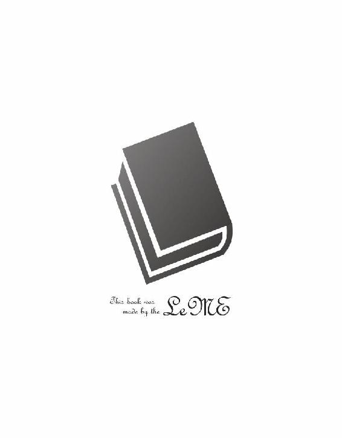

| リズベルルの魔４ アルバトリス篇～竜の試練～ ほんとうの物語シリーズ | |
| ときてっと | |
| TOKITETO (2016) | |
立ち行ってはならぬと言い伝えられる深い森、これが物語の中であったなら、茨が蔓延り空気は淀み、昼間にも陽が届かぬ恐ろしい場所であるのだろうが、イユレールは知っている。
そこが木漏れ日の洩れる緑豊かな森であり、清涼な空気と動物の息遣いで生き生きとした場所である事を。
そして、何よりイユレールの心を掴んでやまぬのは、あの秘密の図書館。
此処では無い何処か、今では無いいつかの物語を記したほんとうの物語を遍く所蔵する、そこはほんとうの図書館。
「ごきげんよう司書さん！ 今日はどんな物語を......あら？」
その日イユレールが図書館に足を踏み入れると、何時にも増して静かな館内に人影は無く。
暗がりからゆらゆらと歩いてくるコルグストムの姿も見当たらなければ、きらきら瞬くあの可愛らしいミューメルも見当たらない。
一体全体二人とも、何処へ行ったと言うのかしら？
暫く小首を傾げて待ってみるけれど、誰かが現れる様子も無く......。
この奇妙な図書館に一人きり、普通なら気後れする所だが、好奇心と知識欲に支配されたイユレール姫はそれだけで胸を躍らせ、早速未だ見ぬ物語を探してずっと向こうまで整然と並ぶ背表紙に目を向けた。
「司書さんもミューメルも居ないんなら、勝手に読んじゃうんだから！」
弾んだ声でそう言えば、目の前にあるのは数え切れないほどの選択肢。
どれを選んでも間違いは無く、だからこそイユレールは慎重になる。
あれからどれ程の物語を読んだとも知れない。美しい花しか口に出来ず飢える心に苦しむ男のお話、天空を目指してひたすらに羽ばたき続ける小鳥のお話、はたまた伝説の白鯨と決闘を繰り広げる一人の詩人のお話......。
何せこの図書館にあるのは全てほんとうの物語。どれもがイユレールの心を打ち、そして夢中にさせてくれた......。
「あら、今日はこんな所に」
そうして、イユレールが見つけたのは、見覚えのある赤い背表紙......。
引き出してみたならば、馴染み深い竜の紋章。
遠く遥かな理想郷、エンダージェンの物語を綴った、あの本だ。
「司書さんが良く言うものよ。物語は必要な時に必要な者の前に現れるって。今、偶然にもこの本が目に入ったって事は......」
きっと続きを読めって事ね！
イユレールは本をすっかり引き出して胸に抱えると、笑みを溢しながら縦横無尽に張り巡らされた階段を駆け上がる。
今日というこの日、図書館にはイユレール一人だけ、何処で何の本を読んでも文句を言うものは居ない。
本棚の隙間に丁度良く張り出したスペースを見つけて、イユレールはそこに飛び込む。
ちょっぴり窮屈で、だけどイユレールには十分な広さ。目の前の手摺から見降ろせば、入口のある広間が見降ろせて、手の届く棚を探ればご丁寧に畳まれた毛布が出て来るものだから、なんだか秘密基地めいている。
イユレールは毛布をすっぽり頭から被って、よし、と頷き、ごくりと喉を鳴らす。
果たしてこれからどんな物語が待っているのだろう。
期待に胸を高鳴らせながら、イユレールは本の表紙をそっと開く......。
ホテルから一歩足を踏み出すと、ぎらついた日差しが肌を焼き、意志に反してどうしても吹き出す額の汗を拭い、フィオは今しがた出て来たばかりの空調の利いた建物が早くも恋しくなる。
顰められた幼さを残した面差しは青年と呼ぶにはまだ足りない様で、しかしほっそりとした体は修行の旅の最中にあるだけあって決して華奢では無く、ひとたび剣を握れば大人にも引けを取らないだろうとの自負もある。
そう。少年、フィオは今まさに旅の途中にあるのだった。心を律し、ただひたすらに己が目的の為に進む道。過酷な旅の途中、ふらっと一流ホテルに立ち寄りでもしたらば、涼しいし何だか洒落た音楽がかかっているしで、それは気が緩んでしまうと言うものである。
「......全く無駄足だったな......」
一人呟くと、額から流れ落ちた汗が頬を擽り、フィオは溜息交じりにそれを拭って、背負った剣を鳴らしながら、どちらへ行くでも無く歩き出す。
まずは今日の宿を探さねば。とは言え勿論高級ホテルを予約する余裕等ある訳も無く、目指すのは安宿だ。
あるいは野宿と言う手もあったが、一人空の下で夜を明かすのに慣れてはいるものの、こう暑くては出来ればそれも避けたく、それにしたって一体全体メルディーノと言うのはどうしてこうも暑いのだとうんざりし始めた時、背中から声がかかった。
「お待ちください、フィオ様」
呼ばれて振り向けば、声の主は一人の少女である。
少女......確かミルゥとか言った......フィオとそう変わらぬ年頃であろうに、無感情なその顔はずっと幼く、あるいは老齢である様にも感じられ、この日差しの下、フィオを追いかけてきた割には呼吸も乱れておらず、汗一つかいていない涼し気な顔でそこに居た。
フィオは少し眉を下げ、首からペンダント代わりに下げていた飾りを握り、憮然とした表情となって首を振る。
「何度請われても、これは譲れないよ。大体、蒐集家ってのはどうせ欲しいものが手に入ったら満足して後は仕舞いこむんだろう。役目を果たせずただ飾られるばかりじゃあ、道具が可哀想だ......。そもそもが、僕はこのコンパスの真贋を鑑定してくれると言うからあんたのご主人と会ったのに、いつの間にか買い取りの交渉になってしまうんだものな」
「申し訳ありません、フィオ様......けれど、エイフォン様は決してフィオ様を軽んじてその様な申し出をした訳では無いのです。あの方が求めるのは、世俗の価値ある宝では無く......あの方にとって価値のある品物。エイフォン様はいつもそう仰られます」
「随分だね。だったら尚更、このコンパスは蒐集家には似合わないよ。僕はこの光の指す先へ行くんだ。剣の試練......とりわけ、竜の試練と呼ばれるそれに挑まんとする僕こそ、コンパスの所有者に相応しい」
フィオがペンダントの飾り......宝石をあしらった円錐形のコンパスを握りしめて言うと、ミルゥは僅かに目を細め、小さく頷き、胸元で手を合わせ、抑揚を感じさせぬ声で返す。
「はい......エイフォン様もそう仰っていました。ですから、あの申し出は貴方を試したのだと......どうかこの先お気を付けて。剣の試練と言えば、余程の手練でも乗り越えるのは難しいと聞きました」
「それこそ、余計なお世話」
フィオは吐き捨てる様に言って、ミルゥに背を向ける。コンパスを胸元に落とし、歩き出す。
確かに、あの大金とこのちっぽけなコンパスとなら、交換すると言う奴は山程居るだろう。普通の人にしてみれば、断ったのは愚かな選択なのかもしれない。
熟練した騎士であっても辿り着く事すら難しいとされる剣の試練に、僕みたいな未熟者が挑むとなれば笑い話なのかもしれない。
けれど、フィオは本気なのだ。それをあのエイフォンと言う蒐集家は、ミルゥと言う女は、試すだって。お気を付けて、だって。
胸中で膨れ上がるあまり、そこまで出かかった苛立ちを噛み殺し、フィオは服の上からコンパスをぎゅっと握る。そして、その時だった。
「......これは......！」
拳の中で仄かな光が瞬いたのと、視界の向こうで飛沫があがったのは、ほぼ同時。
フィオは紐を引いてコンパスを取り上げると、それを握りしめ、そしてその時、この街に来て初めて意識した景色......メルディーノの象徴たる湖の方へ目をやり、驚きを飲み込んで、そこから飛び立った何か巨大なものを追う。
それは、竜だった。日差しを受けて白銀に輝くそれの名を、フィオは知っている。
「弦奏鎧......ヴィルフォーナ！ シェラダンの守護鎧がどうしてこの街に......」
呟きながら、その答えはすぐに思い当たっていた。ヴィルフォーナがフェアルージュの黒海を断ったと言う話を耳にした事を思い出したのだ。
遠征から帰る途中、このメルディーノの街に立ち寄ったとしても不思議では無い。
フィオは感嘆の思いで優雅に空を行くヴィルフォーナを眺めた。その巨大な鎧の上に幾つかの人影を認めると、胸いっぱいになる気持ちで深く息を吐く。
あんなに美しい弦奏鎧を扱う人は、それは立派な騎士なのだろうと思えば、不思議と体の奥から活力が湧いてくる様で、フィオはまだ見ぬその人に尊敬の念を抱いた。
そして、何よりも今自分の手の中で、その先端の宝石に仄かに宿った光が、天を舞うヴィルフォーナを指している事実が、フィオの胸を高ぶらせたのだ。
試練に挑む者を導き、資格ある者に行き先を示すとされる光魔のしるべがヴィルフォーナを指すならば、次の目的地は決まっていた。
「......シェラダン、か」
一人呟き、ふっと頬を緩め、力強く頷くと、フィオはコンパスの導くままに歩き出す。
メルディーノの空を行く弦奏鎧ヴィルフォーナ。
その光景を、先程フィオが後にしたホテルの一室から眺める男が居た。
彼こそがエイフォン。青白く血色の悪い頬に、それだけ見れば柔和な笑みを浮かべ......しかしその優しげな表情に反して、片方の眼を塞ぐ眼帯の下に異様な気迫を宿らせて......その男、エイフォンは窓の外を見つめていた。
「あれが天舞う音色......ヴィルフォーナ......。竜の試練に挑む少年に、白銀の竜......そして私が此処に居合わせた事......不思議と運命的なものを感じ無いかい、ミルゥ」
エイフォンは片方の眼を細め、振り向くと、部屋に入って来たばかりのミルゥにそう問いかける。
扉のしまる音が邪魔をして主の言葉を聞き漏らしていたのか、ミルゥは不思議そうに小首を傾げるが、エイフォンは小さく笑みを漏らすばかりで、何でも無いと言う様に手を振った。
二人、距離を置いて並び立ち、窓の外を見やる。
「フィオ君は怒っていたろう」
「はい......よろしかったのですか、彼をそのまま行かせて......」
「何、必ずしもコンパスが要ると言う訳では無い。場所さえ判っていれば、それで良いんだ」
「しるべの光が......あの竜を示していました......」
「そうか、光は彼を導いたか。シェラダンへ......あの、古の神......竜の眠る地へ」
くつくつと笑みを漏らした時、空を行くヴィルフォーナが大きく旋回し、そして、その背に数人の影を見つけたエイフォンは窓に手をついて、じっとそれに見入る。
一際目立つのは竜を操る黒髪の男。けれど、エイフォンが捉えたのは彼では無く......翼にしがみ付いてころころと笑っている一人の少女。
紅茶に蜂蜜を垂らした様な明るい色の髪、それに青空を映した様なあの澄んだ瞳......。
「あの、娘......もしや......」
呟いて、エイフォンは窓の向こうから目を離さぬまま手を伸ばし、ミルゥを引き寄せると、肩を抱き、ヴィルフォーナを視線で示す。
ミルゥは顔色を変えぬまま、主の指す先......ヴィルフォーナに乗った少女の胸元に下がる鍵を見た。
「あの鍵について、詳しい事が知りたい。どうも封印具では無いかと思うが......古いものでは無いか......それ自体に価値は無さそうだが。それよりも、あの少女......」
彼の娘かもしれない......。
主が口の中で転がした言葉を尋ねる事はせず、ただミルゥは首を振るだけの人形の様にこくりと頷く。
その反応に満足したのだろうか、エイフォンも深く頷き、また口元に笑みを浮かべて、囁く様に言った。
「一度足を運ぶのも良いだろう。ミルゥ、支度なさい」
「仰せのままに」
腰を折り、静かに傍を離れるミルゥに旅支度を任せて、エイフォンはもう一度窓の向こうに視線を移す。
白銀の竜はゆっくりと湖の上を旋回していたかと思うと、薄緑の帯を引いて街の方へと空を滑る様に飛んで行く。
「図らずもフィオ君の後を追う事になってしまったな。芸術の街と呼ばれるこのメルディーノでは望みの物は手に入らなかったが......これも何かの導きかもしれない」
竜の姿を追い、目を細めながら、エイフォンは眼帯を指でなぞり......愉快気な声色で呟くのだった。
「帰ってきた～！」
列車を降りて改札を通り抜け、あっという間に駅を飛び出すと、両手でばんざいして跳び上がり、リズベルルは嬉しそうな声を上げる。
溌剌とした声に周囲の人々は何だろうとそちらを見て、声の主がリズベルルである事に気付くと微笑ましげな視線を送り、くすくすと笑む。
それに気付いたリズベルルはあっと口元を押え、恥ずかしそうに微笑んだ。
「あんまり走ると転ぶぞ～」
「......～っ！ ジンってば、子供扱いして！」
トランクケース片手に追いついて、リズベルルの頭をぽんぽんと叩き、悪戯っぽく笑むと、リズベルルは頬を膨らませて怒るので、そう言う所が可愛いんだ、子供っぽくて......との言葉は飲み込んで、うんと伸びをするジンである。
荷物を一先ずその場に置いて、大きく息を吐いた。久方ぶりのシェラダンの空気だ。ほんの少し離れていただけだが、それでも懐かしく感じられ、ただ駅の辺りは普段足を運ばない事もあってまだ少し浮ついた気持ちが残っている。
これが屋敷に帰ったなら、ほっと一息付けるだろう......そんな事を思うジンの隣に、こちらもふぅっと息を吐きながらノルアードが追いついて来る。
「着いてそうそう御苦労さま」
肩を竦めるジンに、改札を出るや否やシェラダンの人々に次々に声をかけられていたノルアードはうむと頷き、それから変わりない街を眺め、もう一度頷く。
「フェアルージュもメルディーノも良かったが、やはりシェラダンが一番落ち着くな」
「休みが終わるのはちょっと名残惜しいけど」
向こうから車がやって来る事に気付いて、ジンはトランクケースを拾い上げる。
近くに停まった車の運転席からマールが降りてきて、二人に笑顔を向けた。
「お疲れ様～。列車の長旅で体カチコチなんじゃない？」
「帰りはすんなり来る事が出来たから良いもんさ。行きで遭遇した悪夢の様なうさぎの群れに比べれば......」
「はぁ～、災難でしたね。でも、そんな事言って楽しんで来たんでしょう？」
「うむ......長く留守にしてすまないな。何か変わった事はあったか？」
「目立った事件も無く平和そのもの。あれ、リズちゃんは？」
「さっきまでその辺をちょろちょろしてたんだが......」
と首を傾げるマールと一緒になってきょろきょろと辺りを探せば、駅前の露店の前で何やら店主と話し込んでいるリズベルルを見つけ、おーいと呼ぶと、慌ててお金を渡しこちらへ駆けて来る。
殆ど体当たりの様にマールに飛びつき、ぎゅっとお互いを抱いた後、ぱんと手を合わせる。二人とも満面の笑みで。
「おかえリズちゃん～！」
「ただいマール～！」
顔を見合わせ、リズベルルとマールはころころと笑む。
「旅行楽しかった？」
「うん！ って、最初は遊びの旅行じゃ無かったんだけど......でもでもやっぱり楽しかった～！」
「リズベルル、それはなんだ？」
とジンが尋ねたのは、リズベルルが腕にはめているパペット人形である。
トカゲみたいな体に小さな羽が生えていて、腰から下は無く、代わりにミトンみたいに手にはめて、口をパクパク出来るぬいぐるみだ。
あ、これ？ と笑って、よくぞ聞いてくれましたと得意気にぬいぐるみの口をパクパクさせるリズベルルである。
「これはね～、トゥールウくんのパクパクぬいぐるみ！ そこで売ってたから買っちゃった！ メルディーノの水族館にみどりくんがいた様に......シェラダンと言えばトゥールウ......トゥールウくんのぬいぐるみもあったのですね。私これは見落としてました～」
うっとりとトゥールウ君を眺め、満足気なリズベルルである。
しかしそのトカゲ、そうか......羽が生えているから竜か......と納得しかけるが、どうしてか口から何本もの触手が伸びている事に気付き、首を傾げるジンである。
みどりくんもそうだったが、どうも俺には可愛さのポイントが判らない。判らないが、共通する不可解さがあるのは理解でき、その一見意味不明な、理解しがたい造形が間抜けで可愛いのだろう。そう、つまりはやっぱり愛嬌があると言う訳だな、と納得する。
「あ、これ本格的な奴じゃん」
「でしょ、口からにょろにょろが出てるでしょ！」
マールが感心すれば、リズベルルはますます紅潮し、どういうこと？ とジンが聞けば、ノルアードが解説する。
「トゥールウの姿には諸説ある。翼を持った竜であると言う事は共通するが、蛸の様な頭を持つだとか、全身を魚の鱗で覆われているだとか、色々だな」
成程、つまりその中で頭部が蛸の説がマール曰く〝本格的〟と言う事か。するとこの触手は蛸の足な訳ね、とジンは頷き、そう言えばトゥールウ祭の時の模型に蛸の足なんかついてたっけ？ と尋ねれば、その年ごとに採用されるデザインは異なるのだと言う答えが返って来たので感心する。
「けどリズベルル。それって観光客向けのお土産なんじゃ無いか？」
「だけど～、シェラダンの人が買っちゃいけないって決まりは無いでしょ？ ぬいぐるまーの心得そのいち！ 一度見つけて気にいったら、二度同じ出会いは無いと思え！ 可愛いのを見つけたら即お迎え！」
手にはめたトゥールウ君をパクパク喋らせて、リズベルルは熱く語る。
ジンはその熱量に圧倒されながらも、密かに首を傾げるが、トゥールウ君のパクパクを見ているとどうしてか言いだせず、成程と頷いた。
ぬいぐるまーって何？
「メルディーノで買っていた......なんだっけ、みどりくんと一緒に飾る訳だな」
友達は多い方が良いものな、と理解を見せるノルアードに、リズベルルはにっこり笑顔。
流石ノルアード様、判っていらっしゃる～とトゥールウ君に台詞を言わせた後、大きく頷いて。
「うん、たたかわせる」
戦わせるのね。
「皆さーん、ここあんま停めとけ無いからそろそろ出発するよ～」
いつの間にやら運転席にいたマールの声に揃って返事。
三人を飲み込んだ車がゆっくりと走り出す。
家に帰ってゆっくりしたい気持ちはあるものの、考えてみればずっと留守にしていた屋敷には碌な食べ物も無い訳で、となれば今日の所はフィレントア邸にお邪魔して一息つこうとなって、一行を乗せた車はムストル砦へと向かう。
マールの運転は静かなものだったが、だからこそと言うべきか揺り籠の様な心地に眠気がやってきて、はっとする頃には車は停車しているでは無いか。
どっこいしょ、と降りてまたまたうーんと伸びをして、空気を目一杯吸い込んだ後、ジンは若干緊張しながら砦の門を潜る。
既に馴染みの景色であるのに、少し離れているうちに全く知らない場所になってやしないかと要らない心配が頭を過り、けれど隣を歩くリズベルルもノルアードもいつもと変わらぬ表情で、とすればこれはジンだけが感じているのかと思うと、自分が異邦人である事を改めて思い出した。
「あ、お土産の箱届いてましたよ。ほら、それにしても凄い量」
とマールが笑って、見やればそこにはフェアルージュとメルディーノから送った荷物がわんさか積んである。
改めてみればこれは少々買い過ぎだったかもと三人は顔を見合わせ苦笑するが、まぁ良いじゃないかと箱を開け、とりあえず幾つかお土産セットを詰め合わせると、台車を持ってきて箱ごと乗せた。
お土産セットの乗った台車をごろごろ転がしながら歩いていると、その音に気付いたのだろうか、丁度扉の所で何やらしゃがみ込んでいた人が立ち上がる。
こちらを振り向いたユフィーユがあっと声を上げ、笑顔になって駆け寄って来た。
「帰られていたんですね、お疲れ様です。ジンさん、フェアルージュでのご活躍聞いています」
「ああ、あれは我ながら大活躍だったなぁ」
「ほんとほんと！ ジン大活躍でした！ はいユフィ、これお土産～」
「わ～、ありがとうリズちゃん。リズちゃんもお疲れ様～」
お土産セットを受け取ってユフィーユはますます笑顔になって、こちらも笑顔のリズベルルにぎゅっと抱きつかれ擽ったそうな声を溢す。
ネムリーやプランシューネと一緒に終始むぎゅむぎゅしていたからか、なんだか抱き付き癖の付いているリズベルルである。いや、前からだっけ？
それからその裏でのっそりと立ち上がった黒尽くめの男に、ジンは少々苦笑して。
「シズマはこんな所で何してたんだ？」
「うむ......ここの扉の立て付けが悪いと言うのでな......しかしジン、リズベルル、そして剣主殿よ......安心しろ。今、修理した所だ」
と得意気なシズマに、ノルアードは呆れ半分、笑い半分で頷き返す。
「それは助かった。しかし王の使者になんちゅー事をさせているんだ......ともかく、留守の間シズマがシェラダンに居てくれたのは私としても心強かった。これはほんの気持ちのお土産セット。受け取ってくれ」
「おお、これはわざわざご丁寧に......」
ぺこりと頭を下げてお土産セットを受け取るシズマの足元で、何やら灰色の毛玉が転がったかと思えば、それは瞬時に伸びて、なぁと鳴く。
あっとリズベルルが声を上げ、灰色の毛玉もとい灰色猫はにゃっと一声。一人と一匹は駆け寄って。
「アオゾラ～！」
「うにゃー！」
「がぶ～っ」
リズベルルに飛びつこうとしたアオゾラは、その右手にはめられていたトゥールウくんにがぶっと捕食され、ふしゃーと威嚇の声を上げる。
パクパクパク、と何度か齧られると、灰色猫はこてんと転んで動かなくなった。
殉職されたアオゾラを拾い上げて、ごしごし頭を撫でるリズベルルである。
「アオゾラ、私がいない間元気にしてた？」
「してにゃ～」
「おい、今その猫喋らなかったか？」
首を伸ばして猫を覗きこむノルアードを適当に誤魔化していると、賑やかなやり取りに気付いたのか、他の騎士達も集まり始める。
久方ぶりに会う同僚達と言葉を交わしながら、余計な心配は杞憂だったか、とほっとして、ジンは笑った。
そうして次々とやって来る騎士達に声をかけ、お土産セットを配りまくり、在庫が尽きれば手付かずの荷物を開けて詰め合わせ、と言う様な事を繰り返せばいつの間にやら日も落ちて、リズベルルとジン、それにシズマも加わってフィレントア邸で夕食を御馳走になった後、マールが淹れてくれた食後のお茶を頂きながら、想い出話が始まった。
専ら話の中心はリズベルルで、マールは勿論の事、こう言う時案外シズマは熱心に聞いてくれるものだから、お喋りリズベルルはご機嫌である。
「それでね、ネムリーもプランシューネもとっても可愛くて、気も合うし、私達すっかり友達、親友なの！」
と話がネムリーとプランシューネの事に及べば、リズベルルの腕の中で丸くなっていたアオゾラは急にぴょんと立ち上がり、その場でぐるぐるぐるぐる足踏みしだして、このままではバターになるのでは無かろうかと思えば、傍でくったりしていたトゥールウくんに飛びかかり、入口に頭を突っ込むとパペット人形とすっぽり合体して、神話の中に登場する魔獣の如き間抜けな格好でなぁと鳴く。
リズベルルの友達と言えば俺のポジションだったのに～！
と言う様な叫びが聞こえる様な聞こえない様な、猫は猫なりに旅を通じて成長を遂げたリズベルルにちょっぴり複雑らしかった。
「そうだ、ネムリーと言えば、これにはネムリーが気付いたんだった」
ゲテモノと化したアオゾラを見てころころ笑っていたリズベルルがぱちんと手を叩き、大事なものなのでトランクケースから運び出していた例のパズルを手にとって、あっという間に蓋を開けると、まずは中から取り出したプランシューネの絵葉書を自慢し、次には分離した箱の半分を持ち上げて、その裏面に張り付いていた鏡を灯りに当てる。壁に映し出された詩に、シズマとマールは絵葉書から目を移し、感心の声を上げた。
「これってどういう意味だろう？」
と首を傾げるリズベルルに、皆はてと首を傾げ、パペットから顔を出したアオゾラはなぁと鳴き、シズマは詩を読み上げる。
「霧の彼方に住まうもの。その大樹は全てを慈しむ大いなる眼差し。忘却の彼方を求めるならば。扉は獣達が知っている......」
何だろうね、と悩む格好はするものの、答えが出るのを誰も期待して居ない事は明らかで、しばらくすれば話題は次へ次へと移って行く。
その中でシズマはリズベルルから借りた魔鏡をぼんやりと眺めて何やら考え込む様子で、ふと気になってジンは声をかけた。
「シズマはシェラダンに居る間何をしていたんだ？」
「俺か......少し調べ物があってな。それにかかりきりだった。残念ながら面白い話題は提供できそうにない」
そう言って魔鏡パズルをリズベルルに返すと、シズマは苦笑してみせる。
ジンはふぅんと頷いて、それからふとメルディーノで出会った仮面の使者の存在を思い出し、少し身を乗り出す格好で尋ねた。
「黒尽くめの格好に、仮面を付けた王の使者に出会ったんだが......何か知らないか？」
「あ、お化け！ ジンは話、したんだよね。私はちらっと見ただけで、ノルアードは会えなかったけど」
どう言う事だとシズマが尋ねれば、リズベルルは霧夜の予言者と、お化けの事を話して聞かせる。
シズマは興味深げに耳を傾けた後、ふむと大きく頷いて。
「夜、仮面を付けて徘徊する者の正体と来れば......一つしかあるまい」
「その、正体は!?」
「......変態だろう」
あ、何だか失礼かなと思って、誰もその言葉は使わなかったのに～！
と脱力する旅行組であった。
シェラダンへ帰って来た翌朝、久方ぶりに自分のベッドで目を覚ましたジンは、少し物足りない気持ちで体を起こした。
昨晩、フィレントア邸に泊まる事を勧められはしたが、結局はマールの運転で屋敷まで送ってもらい、風呂に浸かってゆっくり疲れを取った後はあっという間に眠りに落ちたものの、いざ目覚めてみれば静かな家の中が寂しくも感じられ、これならフィレントア邸に泊まっておくんだったと思いながら、着替えてリビングに顔を出せばリズベルルが朝食を作っている最中で、良い香りに腹を鳴らしながら席に付くと、ようやく寂しさも紛れてくる。
「冷蔵庫空っぽだったから、今朝は簡単朝ごはん～。あとで買い物行かなくちゃ！」
「リズベルルの手料理も久々に感じられるなぁ」
「旅行中贅沢だったから、今日からは普通のご飯だよ～」
ふふっと笑みを溢しながらパンにジャムを塗って齧り付き、何だかほっと息を吐く二人である。
「無いとなると、寂しいもんだな」
「何が？」
「目覚しネムリー爆撃」
ころころと笑いながら、それなら私、してあげようかと申し出るリズベルルに、勘弁してくれとジンが肩を竦めていると、向こうからてててと灰色猫がやって来て食卓にジャンプ。
尻尾を振りながらご飯ご飯と催促する。
「カリカリ？ カンカン？」
「ん～、パン！」
「アオゾラ、お前さ、何でも食ってるけど、猫として大丈夫な訳？ タマネギとかチョコとか、平気で食べてるだろう」
驚くべき事に器用にパンを千切って食べるアオゾラを半眼で眺めつつ、ジンが尋ねれば、灰色猫は髭をぴょこぴょこ動かして眼を瞬かせ、ははんと鼻を鳴らす。
つまらない事言うなよな、ジン。と呟いて、尻尾でぴしゃりと皿を叩いた。
「あのねぇジン、クソマズイもの食って長生きする人生と、美味いもの食べて暮らす日々と、どっちが幸せだと思う？ お前、どっちが尊いと思う訳？」
人生って、お前は猫だろうが。
「まぁ、クソマズイだなんて......暫く見ないうちにアオゾラがお下品な猫ちゃんに......」
目を丸くするリズベルルに、アオゾラはにゃほんと咳払い。二本脚で立ち上がり、器用にも腕を組んで見せるのでジンはおぉ......と声を上げる。
「まー俺もこんなナリで猫やってるけどさ。ここがね、ここ......オツムの出来が違うから。猫語とエンダージェン語のバイリンニャルだから。その辺の人類より思考してるからね。これがとにかく腹が減る訳。むしゃむしゃ食べないと追い付かない」
「アオゾラは、きちんと朝昼晩たべておやつもたべるもんね」
２回くらいで十分だと思います。
「とは言え俺様は例の最適化で肉体的にもパワーアップして居る筈だから、まぁこれから軽く百年は生きるつもり。これって結構切ないからね。周りの猫友はどんどん老いて死んでいくのに、俺だけが取り残された様に、長い時を、過ごしていくんだなぁ」
「はぁ......アオゾラ、かわいそう」
リズ！
アオゾラ！
ぎゅっと手を握り合う一人と一匹である。
パワーアップねぇ、と呆れるジンであったが、確かにタマネギもチョコも平気な事実はある訳で、百年くらい生きても不思議ではない。喋るし。
こいつレントゲン撮ったら中身猫じゃ無いんじゃないだろうか、との考えが浮かび、ジンはわくわくした。
「それでリズベルルは、今日は買い出しか」
「うん、あとあと、ノルアードに頼まれちゃった！ 地下室のお父さんの研究、整理して目録作るお仕事!!」
目を輝かせてリズベルルは胸を張る。
無論切っ掛けはボルダナの例の事件に他ならない。
ボルダナ本人に関しては......まぁともかく、今度似た様な泥棒が現れないとも限らず、するとやはりラスティノフ博士の研究室は改めて整理が必要だろうと言う訳だ。
無論重要な研究の大部分は観測塔に収められているものの、研究過程を記したノートの大半は地下で手付かずのままで、あるいは以前の様に黒海の浸食で失われる危険性も考えれば、これはきちんと管理すべきで、それならリズベルルが適任だろうとノルアードは判断したのだ。
あそこは手をつけねばならないと常々思っていたものの、先生との想い出の数々を思えば動かし難く、考えようによってはボルダナは良い機会をくれたのかもしれんなぁ、等と言うノルアードの姿を思い出す。
「あそこを全部となると、かなりの大仕事だな」
「うん、ゆっくりやりなさいって。あと、地下室に居る間、扉の鍵は絶対かけない様にしなさいってすごく言われた」
これにはジンもアオゾラもうんうんと頷く。
思い出されるのは初めてリズベルルと出会ったあの日の事。そして足を怪我したプランシューネの事で、万が一と言う事も考えれば、ノルアードが心配するのも無理は無い。
「しかしそうか、リズベルルは目下の仕事が見つかった訳か。俺は逆にやる事が無いなぁ......」
「ジンが暇なのは、平和の証！ ず～っと暇な方が良かったりして？」
ニコニコ笑顔のリズベルルに、それはそれで、ちょっと嫌だなぁとこちらも笑って見せるジンである。
かくしてジン達の浮かれ気分は幕を閉じ、以前にも増して平和な日常がゆっくりと戻って来た。
儀式によって強固さを増したシェラダンの結界は黒海の浸食を許さず、とは言えそれは短い間で、次第に亀裂が走る頻度は元通りになるだろうとの予測が立てられていたものの、少なくとも今日に至るまで危険の兆候は見られない。
それはそれで退屈な日々であったが、元よりジンはこうした平穏を好む質であって、のんびり暮らせるうちはたっぷりと享受しようではないかと気楽で居た。
一方、意外にもこれに不満を感じるのはリズベルルだ。黒海の浸食を心待ちにしていると言う訳では無論無い。
ノルアードに言い付かった仕事も進めていたし、地下室に籠って父ラスティノフの研究を読み解くのは中々面白く、暇を持て余していると言う訳でも決して無い。
にも拘らず、リズベルルは退屈していた。物足りなかった。わくわくが欲しかった。
「......はぁ」
父の研究ノートをぱたんと閉じて、リズベルルは溜息一つ。
こう言う時意外にも作業と言うのは捗るもので、予定よりも書籍類の整理は進んでいたから、今日はここらで休憩休憩と立ち上がり、一応騎士としての仕事だからと着替えていた騎士服が、地下室の埃で汚れていたのでぱたぱた叩き、整理より先に大掃除が要るかもなんて考えながら屋敷へ戻ると、日の当たる床にぺたんと座りこんで、もう一度溜息を付いて、動かなくなる。
「......はぁ」
何度吐き出した所で、胸の中のもやもやは尽き無いのであった。
しんと静かな屋敷の中で、カチコチと時計の針の音がやけに大きく感じられ、リズベルルは寂しくなる。
思えばフェアルージュに行ってからはずっとネムリーが傍に居て、下らない事から秘密の話までいつでもお喋りが出来たのだ。
メルディーノに行ってからはそれにプランシューネも加わって、楽しさ三倍だったのだ。
それが急に無くなったものだから、退屈に決まっている。
何か面白い事ないかなぁ、とリズベルルは知らず呟き、それから決意を固めて大きく頷くと、ペンと可愛いお手紙セットを持ってテーブルへと向かった。
「今日こそお手紙、書こう！」
と張り切るリズベルルである。
シェラダンに帰ってから早速ネムリーとプランシューネ宛に手紙を書き始めたものの、とにかく書く事が沢山あって未だ書き終わらず、帰ったら真っ先に出すつもりだった手紙は今もまだ完成しない。
あれだけお喋りし尽くしたのに、自分でも何を書く事があるのだと不思議なのだが、書き始めるとこれが長く長く長くなり、終わりが見えぬ有様なので、途中まで書いた手紙を丸めては書きなおし、丸めては書きなおし。
「おーいリズ～、部屋中が紙くずで埋まっちゃうよ～」
といつの間にやらやって来たアオゾラが丸めた手紙を一か所に集め、やれやれと首を振るのも最早日課だ。
う～んとリズベルルは眉を落とし、またまた手紙を丸めると、アオゾラへ向けてぽいっと放った。
「あた。もうさ、そんなに言う事あるんなら、電話すれば？」
「ダメダメ！ 少なくとも最初の一回は手紙でないと！ 大体、プランシューネのうちには電話無いんだから!!」
「今は猫ですら電話する時代なのになぁ......」
受話器を器用に持ち上げてやれやれと首を振るアオゾラである。
しかし何度言われようと、リズベルルは電話をかける気にはなれなかった。
プランシューネと話せないのにネムリーにだけ電話するのは何だか寂しい気もしたし、この最初の手紙は私達の友情の証なんだから！ と言った想いもあって、それはきっと他の二人も同じだろうとリズベルルには感じられたのだ。
未だネムリーとプランシューネから手紙も電話も無いのは、多分向こうでも同じ様に悩んで悩んで、毎日机に向かっているに違いないと思えば、リズベルルは何だか可笑しくなってくる。
「うん、そうだよ。最初の手紙はやっぱり特別！ 書きたい事沢山あるけど、大事な事だけ書けばいいんだ！」
「そうそう、大体手紙があんまり分厚いんじゃ、郵便屋さんも届けてくれないよ。超過料金取られちゃう」
方針を決めればこれまでが嘘の様にすらすらペンが進み、出来あがった手紙をそれぞれ封筒に入れて切手を張ると、リズベルルは上出来だとそれを眺め、少し迷った後可愛い猫柄のシールで封をした。
「よーし、早速ポストに入れに行こう！」
「おー！ ......って、この辺にポストあったっけ？」
「こう言う時、街外れだと不便だなぁ」
ぼやきながらアオゾラを掬い上げ肩に乗せ、二通の封筒を手に屋敷を出る。
一番近いポストって何処だろう。昔は森をちょっと行った所にあったけど、あれは何年か前に無くなっちゃったんだっけ？ だったらバスに乗らないとだ。
頭の中でそんな事を考えながら、リズベルルは早くも友達からの返事はどんなのだろうと期待して、最初のお手紙交換が終わったら、電話でのやり取りも解禁だと胸を膨らませる。
でもでも、ネムリーは剣主で忙しいからそんなに長話は駄目だよね。私だって、お父さんの研究整理って仕事があるんだし。ああ、それにしても気がかりなのはプランシューネ。
どうにかプランシューネとお話しする手段は無いものか。プランシューネの声、聞きたい聞きたい。
あれこれ頭を悩ませながら森の小道を歩いていると、見知らぬ少年と通りすがる。背中に剣なんか背負って物々しいなぁなんて思うと、不意にその人がリズベルルを睨んで、声を上げた。
「おい、お前」
「は、はい？」
びっくりして立ち止り、封筒を胸に抱いて、リズベルルは緊張。その肩で、アオゾラがふしゃーと毛を逆立てる。
少年はリズベルルの肩に乗ってるアオゾラに少し驚いた様子で目を細め、それからまたリズベルルをきっと睨む様な勢いで見やり、尋ねた。
「この先の家に、ジンと言う人が住んでいると言うのは本当か」
「え？ ジン？ はぁ、ジンはうちの人ですけど......」
と言いながら、うちの人ですけど......って何か微妙な言い方だなぁとリズベルルは考え込む。
こう言う時、なんて言うのが正解なんだろう。うちの魔ですけど......とは、言えないし。
「そうか。僕はその人を尋ねて来たんだが」
「ジンなら、出かけてますけど......多分街の方。草むしりしてるって」
「草むしり」
少年が不思議そうに首を傾げ、何やら深刻めいて「草むしり」と何度か呟き、その言葉に隠された真の意味を探るかの如く眉を顰める、
草むしりって、その辺に生えちゃった草をむしるんだけど、知ってます？ とリズベルルが尋ねそうになった時、少年は判ったと頷いて、今来た道を引き返し始めた。
「変な奴だなぁ。剣なんか持って、物騒なの」
肩に乗ったアオゾラが小声で呟くのに頷いて、リズベルルも歩き出す。知らないうちに封筒を胸に押しつけていたのに気付いて慌てるが、二通とも皺になる事無く無事だったのでほっとした。
「おい」
「わ、なに、なんですか」
「お前、なんでついて来るんだ」
「べ、別についてって無い、です。あの、手紙。ポスト、出しにいくの」
急に話しかけられてどぎまぎして、リズベルルが何だか片言になって言えば、少年はふんと鼻を鳴らし、ずんずん先へと行ってしまう。
だが、街へ行く少年もまたバスに乗る訳で、バス停で待つ訳で、先を行った少年に追いついてしまったリズベルルは車を待つ間気まずい時間を過ごし、ようやく少年と別れた頃には何だかどっと疲れてしまった。
「は～、あの子、ジンに用事だったのかな」
「道場破りだったりして～」
どうじょうやぶり？ と首を傾げながらポストに封筒を食べさせるリズベルル。
かこんと音がして口が閉まる。
「いやぁ、ヴィルフォーナの騎士様にこんな仕事手伝わせて悪いねぇ」
「ジンさんが居てくれて助かったよ～」
「ほんとうちの息子にも見習って欲しいもんだ」
等などの言葉に気さくな声を返しつつ、ジンは肩にかけたタオルで額を拭い、目下の敵への攻撃を再開する。
軍手をはめた手でぎゅっと草を握り、根から掘り起こす様に、引き抜く。
街内美化草むしり作戦に参加中のジンである。
「ジンさん、そろそろ疲れたんじゃ無いかい」
とおばちゃんが声をかけてくれ、冷たい飲み物を勧めてくれるのでありがたく頂き、しかしジンは首を振って笑うと袖をまくりあげる。
「まだまだこれからだ。おばちゃん達が頑張ってるのに、俺が休む訳にはいかない」
格好良く？ 冗談めかして決めたものの、これはジンの本心でもあって、黒海の脅威を退けた今、これまでに無い心と時間の余裕があるのは事実で、暇つぶしと言う訳では無いがこうして街の人々に交じって草むしりなんかして居ると、これが存外に面白く、大袈裟かもしれないが幸せを感じるのである。
皆ジンの働きを労ってくれるし、外から来た自分をごく普通に受け入れてくれる。
この公園の草むしりに来たのだって、この間街の見回りをしていた時に張り紙を見つけて、俺も参加してみようかなと軽口を叩いたのが切っ掛けだったが、街のおばちゃん達も爺さん婆さんも偉く歓迎してくれて、張り切りがいもあると言うものだ。
「いつも綺麗な公園だなと思っていたんだ。成程、街の人達がこうして持ち回りで綺麗にしていたんだな」
「そうだよお、あんたら騎士様が街を守ってくれる様に、私らだって見え無い所でこの街を守ってるんだ」
「婆さん、それを比べちゃあ騎士様に失礼だ」
そんなやり取りに、どっと笑い声が湧く。釣られてジンも笑って頬をかくと、うっかり泥が付いてしまい、それがまた笑いを誘った。
そうこうしながら草むしりにゴミ拾い。公園は以前にも増して綺麗になって、ジンはふうと一息つく。
ご褒美に配られたジュースとクッキーを頂いていると、いつの間にやら周りに皆が集まって来て、気付けばジンは輪の中央に居た。
こりゃノルアード現象だな、と苦笑して居ると、正にその剣主の話題が飛び出す。
「しかしノルアード様も、お父上の後を継いだ頃はどうなんだろうと思ったもんだけど、今じゃあ立派な剣主様だねぇ」
「初めの頃は若き剣主誕生なんて持て囃されて、調子に乗って大きな失敗をやらかすんじゃ無いかとヒヤヒヤしたもんだけど、それどころか人が変わった様に真面目な好青年になっちゃって。本当、立派になられたもんだよ」
おばちゃん達の話は興味深く、ジンはふむふむと耳を傾ける。
そういやノルアードは昔相当な悪ガキだったんだっけかと思えば意外な様で、しかしよくよく考えれば今でも結構その片鱗は残っているよなぁと思い当たり、けれども親友の名誉の為、余計な事は言わずに聞きに徹する。
そのうちに御結婚が～、お相手が～との話題がちらほら出始め、これはジンも若干冷や冷やして、おばちゃんの矛先がいつ自分に移るかと身構えていると、不意に鋭い声が輪の外からかけられた。
「貴方が、ジンか」
あら、何かしら。何事かしら。とおばちゃんの壁が割れ、現れたのは一人の少年である。
明るい橙色の髪に、緑の瞳。顔立ちはなかなか整っていて、あらやだ、良い感じとの声がおばちゃん達の口から囁かれ、しかしその背に背負った剣は何であるか。物騒では無いかとジンは嫌な予感がしてごくりと喉を鳴らす。
「黒き魔人、弦奏鎧ヴィルフォーナを駆る......シェラダンの騎士」
「そうだけど」
「僕は貴方を追って此処まで来た！ いざ、勝負！」
頷いたのも束の間、少年が腰を屈め、跳び込んでくるものだから、ジンは突然の事にうげぇと情けない声を上げて飛びのいて、ちょっとちょっと、何なの、何なのと慌てまくる。
いざ勝負、じゃないよ。
「ジンさん、これ使って！」
といつの間にやら遠くへ退散していたおばちゃんが、掃除に使った箒を投げてよこすので思わず受け取ると、おばちゃんは大きく頷いて拳を振り上げる。
これ使って、じゃないよ。勘弁してよとジンが困惑していると、向こうでは爺さんが同じ様に少年へ箒を投げ渡す。少年もこくりと頷き。
「成程」
成程、じゃねーとの言葉を飲み込んで、箒で切り込んでくる少年をぎりぎりの所で避けるジン。
こちらも剣もとい箒を構え、体勢を整える。
だがその瞬間、ジンは悟った。
「やぁぁぁぁっ！」
あ、これ駄目な感じだな。
気合いと共に切り込んでくる少年。箒が目にも止まらぬ速さで空気を割き、そしてジンは昏倒した。
人工の明かりが作り出す穏やかな日差しが木漏れ日を落とす庭園、日除けのガゼボの下でエイフォンは子供向けの絵本を捲っていた。
柔らかな笑みを浮かべてはいたが、その目は面白そうでもつまらなそうでも無く本の中で繰り広げられるお伽噺を追うだけで、何を考えているとも知れない。
そしてそんな主の様子を少し離れた場所にぽつりと立って眺めるミルゥの顔にもまた、表情らしい表情は無く、何処か人形を思わせる無機質さが張り付いていた。
「悪戯好きな竜の子トゥールウは人間に悪さをして疎まれるが、最後には世界を脅かす黒海を退ける事に協力して仲直り......何とも退屈なお話だ」
呟き、エイフォンはぱたんと絵本を閉じてミルゥを見やる。
すっとその目が細められ、ミルゥは返事をする代わりに小首を傾げた。
ふふっと笑ってエイフォンが腕を上げると、その手にはめられているのはリズベルルが駅で買ったのと同じ、トゥールウのぬいぐるみ。
パクパクと竜の口を演技させながら、エイフォンは呟く。
「もとは名状し難き邪悪の化身ともされたトゥールウ神竜が、こんな愉快な......親しみやすい姿で街に広まっているのは何故なのだろう。あるいは、シェラダンの守護鎧......あの弦奏鎧ヴィルフォーナは元来トゥールウ神の偶像であったと考えられるが、その象徴が邪悪と反する光なのは何故なのだろう......これが何者かの作為であったなら......例えば真実の竜を隠す為、先人達があえて偽の偶像で街を飾ったとしたらどうだろう......トゥールウ神は今や信仰を失い、その真の意味を人々は忘れつつある......興味深い......」
しかし、とエイフォンは立ち上がり、ぬいぐるみを手から外して絵本の上に放ると、静かにガゼボの外へと出て、その頃には顔に浮かぶ微笑みも先程までの味気ないものでは無く、子供染みた何か企む様な色を含んでいた。
「私が欲しいもの。知りたいものはあんな作り物の、偽りの物語では無いのだ。私が欲するのはそう......偽りの中に紛れた真実、本当の物語......本当の竜！ まずはあの少女とどう接触するか......普通では面白くない。何か愉快な、楽しい方法を考えねば......」
あれでも無い、これでも無いと想像を膨らませるエイフォンを、ミルゥはただ黙して待つ。
主が何か命じるまで。まるで作り物の人形みたいに。
「お前さんも災難だな、定期的に株を下げる様な事がやってくるんだ」
溜息交じりの呆れた声を聞きながら、ジンは呻き、顔の上に無造作に乗せられた氷嚢をどける気力も無く、ただ砦の床に伸びている。
騒ぎを聞き付けた騎士達が運んでくれたのは良しとして、一緒にやって来たウェスター医師が事の顛末を聞くやジンをその辺の床に放りだす様に指示したのは不本意であるものの、氷のお陰で冷静になれば大事になればなるほどジンの心の傷は大きくなるばかりなので、その判断も正しいと言えた。
「しかしジンよ、街中で煽られて力比べと言うのは、これは問題だぞ。問題」
とノルアードの声が振って来るので、こればかりは言い返さねばとジンはぎこちなく体を起こし、ぶるぶると首を振る。
「......俺がそんな事する訳無いだろ」
「そうですよ、ジンさんがそんな無謀な挑戦を受ける訳が無いじゃないですか」
抗議の声を上げ、ジンの頭から転がり落ちた氷嚢を既の所で拾い上げ、あるべき場所に乗せ直すユフィーユである。
こう言う時ユフィーユはありがたいなぁ、優しいなぁと思いつつも、「無謀な挑戦」の指す所はつまり誰が相手であろうともジンが敗北する事を暗に示しており、ヴィルフォーナの騎士とも謳われる程の男なんだぞ、俺は、と拗ねるジンである。
成程、それもそうだと納得して頷くノルアードを、じとっと睨む。
「大体なぁ、こいつが突然襲って来たんだぞ。いざ勝負、とか言って」
箒の一撃を受け赤くなった額を氷で冷やしながら、ジンはさっきから床に座り込んで不貞腐れた様な顔で居る少年に目を向けた。
今更に少年が背負っている剣の存在を意識して、冷やりとするジン。
これで斬りかかられていたら死んでいたな、とぞっとする。
「......思わなかったんだ」
「んぁ？」
それまで黙り込んでいた少年がぼそっと呟いたものだから、ジンが若干間の抜けた声になって聞き返すと、今度はきっと鋭い視線をくれて、少年は叫ぶ。
「あんな攻撃も避けられないなんて、思わなかったんだ！ ヴィルフォーナの騎士だぞ!? 魔人だぞ!? 普通、もっと強いだろ!!」
少年の声が砦中に響き、辺りは一瞬しんとして。
「まぁなぁ......」
皆の声が重なった。
「本来ならば厳重に処罰する事も考えねばならんが......」
ノルアードの書斎に場所を移し、始まったのは取り調べ......もとい、少年へのお説教だ。
不貞腐れた表情で立つ少年をノルアードは呆れ混じりの視線で上から下までじっと眺め、その格好を見てうんうんと頷く。
「......悪戯だったと言う事で、水に流そう。本気でジンを殺すつもりならば、その背中の剣を使っていただろうしな」
ふっと笑って、肩を竦めるノルアードである。子供のしたことだ、と言った意味の視線をくれるので、ジンは文句の一つでも言いたいのを飲み込んで渋々頷く。
窓の方へと歩きながら、一転友達に向ける様な声色で尋ねるノルアードである。
「それにしても、突然斬りかかるとは君も無茶をするものだ。若いうちはそう言う無茶をしたくなる気持ちも判るがな......騎士を目指すのなら無暗に剣を振るものじゃない」
はっとして顔を上げた少年の視線が、振り返ったノルアードのそれとぶつかる。
少年は見る見る顔を赤くして俯くと、声を籠らせて呟いた。
「......軽率でした。ただ、憧れだったから......」
「本物の騎士が？」
こくりと頷いた少年の顔にはいつの間にか年相応の素直な表情が広がっていて、ソファーに腰掛けて事の成り行きを見守っていたジンは感心する。
と同時に若干複雑な心境......。腕を組んで溜息を吐くと、こんこんと扉がノックされ、そこからひょっこり顔を出したのはリズベルルだ。
「伝言伝言！ 男の勝負に手加減は無用！」
「なんだ、それは」
「ここに来る途中で、おばちゃん達に言われたの。ジン、勝負に手を抜いたんだって？」
ってどういう意味？ と首を傾げるリズベルルに、ジンは大きく溜息を吐いて。
「......抜いて無いです......」
「じゃあ完敗だ。って、あ！」
グサッとくるような事を無邪気に呟いたリズベルルは、部屋に入るなり少年の顔を見て声を上げ、驚きは少年にも伝播してこちらも眉を顰める。
「......お前」
「さっきの男の子！」
知り合いだったのか、と尋ねれば、リズベルルが家を出た直後にこの少年がジンを尋ねて来たのだとの言葉が帰って来て、その時に出会っていれば少なくとも突然腕試しを挑まれる事は無かったかもしれぬとジンはまたまた溜息一つ。
ジンがまだちょっぴり痛む額を撫でていると、今度はニヤニヤ顔を張り付けたマールがお茶を持ってやって来たので、よせよ、笑うなよ、とジンはまたまたいじけるのだった。
「そうか、ええと......君、名前は」
「......フィオ」
「フィオ。見た所旅人の様に見受けるが、何処から来た」
少年、フィオは顔を強張らせ俯いた後、窓の外を見やり、これまでの旅路を思い返すかのような遠い目でぽつりと呟く。
「アルバトリスから......ずっと旅をして来た。シェラダンの前にはメルディーノにも立ち寄った。そこで見た」
「見た？」
「天舞う音色、弦奏鎧ヴィルフォーナ」
すると三人娘を乗せて飛んだあの時か、とジンは顔を顰める。
ディランの頼みだったとは言え、妙な所で変な奴を引き寄せたものだ。
皆が黙っているのをどう受け取ったのか、フィオは観念した様な顔で首にかけていた紐を引き、何やらペンダントを取り出して見せる。
円錐形で先に宝石がくっついた装飾を握って、良く見える様に掲げた。
「それは、コンパスか」
ノルアードが尋ねるのにフィオは一つ頷き。
「僕は、この光魔のしるべの導きでこの街に来た。あの時、コンパスの光が空を行くヴィルフォーナを指したんだ」
「それを追って来たと。コンパスと言えば、持ち主の望みの場所を指すとされる道しるべ......そのコンパスは、一体何処への行き先を示していると言うんだ？」
「剣の試練」
今度ははっきりとした声でフィオは言って、その意外な言葉にジンとノルアードは顔を見合わせ、リズベルルとマールは目を丸くして驚く。
コンパスを服の下に仕舞い直し、フィオは続ける。
「剣の試練、その中でも最も厳しいとされる竜の試練を探しに、僕はこの街に来たんだ！」
少年の宣言に、ぽかんと口を開ける４人である。
「剣の試練ねぇ......」
呟き、首を捻りながらノルアードがぱらぱらと捲るのはシェラダンの観光ガイド。無論そんな本に剣の試練の場所が乗っている筈も無い。
いつの間にやら書斎には騒ぎを聞き付けてやって来た騎士達も混じり、皆で頭を悩ませる有様だ。
ノルアードはぱたんと本を閉じ、組んだ手に顎を乗せて考え込む。
「この街に剣の試練があるとは、私も聞いた事が無い」
「俺はガキの頃やりましたけどね、剣の試練ごっこ」
「ああ、やったなぁ」
お気楽な事を言うバードに、ノルアードも皆もうんうん頷いて、やったやった。子供の頃はやるよな、と言う具合である。
ジンはすっかり解けて水になった氷嚢の袋を片手でもみもみしながら想い出話に耳を傾け、指が冷たくなったなと思えば、少しばかり悪戯っぽい表情でリズベルルのほっぺをぷにぷに突く。
冷たさに首を縮めたリズベルルはころころと笑い声を上げ。
「ふふ、あ。ダルカスさんに聞いてみたら？」
「あいつに聞いても喋らんだろう」
「ダルカスは真面目だからなぁ......それに、シェラダンの試練に挑んだ事があったら流石に仄めかすくらいはしたんじゃ無いか」
「それもそっか」
「父上なら何か知っていたかもしれんが......」
ううむと唸り、腕を組んで考え込むノルアードである。
ノルアードの父でありシェラダンの先代剣主は、正式な継承を前に儀式が原因で行方知れずとなった。
そのせいで引き継ぐ事が出来なかった伝承......つまり隠された試練の秘密があったかもしれない、とノルアードは言うが、それが少年への慰めである事は明らかだ。
当の少年フィオはさっきの勢いは何処へやら、ずっと俯いて黙り込んでおり、話を聞いているんだかいないんだか。
「何処の街でも、剣の試練が隠されていると言う噂はあるものだ」
「定番中の定番、ですね」
「うむ......だからシェラダンにだってそう言う話は勿論ある。だが信憑性があるかと言われれば別だ。少なくとも私はこの街に試練が隠されていると言う事実を知らない」
「けど、人知れず試練を守り伝えるのは剣守の役目でしょう。ノルアード様が知らない方が、らしくないですか」
「表の剣主、裏の剣守って奴ですね」
ユフィーユが言うのに、マールはそうそうと頷いて。
「大体君、フィオ君は噂を頼りに来たんじゃ無いでしょう？ その光魔のしるべがヴィルフォーナを指した。だからこの街に来た訳で」
黙り込んでいたフィオはその言葉にようやく反応を見せ、こくりと頷く。
むっとジンを睨み、服の上からペンダントを擦る。
「それまでに無い強い反応だった。だから、間違いない」
「竜の試練......シェラダンに伝わるトゥールウの伝説、弦奏鎧ヴィルフォーナは竜の姿......」
「っぽいですよね。ぽい」
「シェラダンに無くて何処にある！ って感じはするわな」
バードが大口を開けて笑えば、皆何となく釣られて笑む。
ところがこれが少年の癇に障ったのか、フィオは膝に拳を打ち付け、立ち上がると、声を低めて。
「......騒ぎを起こした事、謝ります。それでは、僕はこれで」
「お、おい」
引きとめようとしたバードの手をすり抜けて、フィオはさっさと部屋を出て行こうとする。
参ったなと頭をかきながら、ノルアードは立ち上がり、拒絶を張り付けた背中に声を投げた。
「何処へ行く。まだこの街に来て間もないんだろう。宿は決まっているのか」
「......見つからなければ、野宿します」
「あのなぁ。我々としては、お前の様な子供を一人野宿させる訳にはいかんのだ」
「僕は子供じゃ無い！」
振り向いたフィオが叫んだ言葉で、部屋の中は水を打ったようになり、それからはっとした様子で少年は俯いて、踵を返そうとする。
誰もが言葉を探す中、ぽんと手を打って、リズベルルが無邪気に言った。
「じゃ、うちくる？」
突然の言葉に、ノルアードとジンは顔を見合わせ、ぽかんとして。
「うち、部屋余ってるし。どれだけ居てもタダ。お風呂もあるし、ご飯も付くよ」
毒気を抜かれた様な顔で立ち尽くすフィオに、リズベルルは何処までも明け透けな笑顔で。
その裏で、酸欠の金魚みたく口をぱくぱくさせているノルアードの肩をぽんと叩き、ジンはやれやれと首を振るのだった。
「部屋余ってるって言ったけど、どの部屋貸そうか。一番片付いてるのってお父さんの部屋かな」
フィオを伴い、マールの車で屋敷へ戻るや、リズベルルは頬に指を当てて悩み始める。
思い付きで言ったものの、実際問題人を泊められる部屋が余っているかと言えば微妙な所だ。
一番の候補だった元物置部屋はとっくにジンのものだったし、書斎やリズベルルの衣装部屋等はとにかく物が多い。
その点、ラスティノフの部屋は彼が使っていた頃のまま、掃除も欠かさず綺麗に残されていたから、リズベルルが言う通り人を泊めるには最適だ。
実際、ジンがこの街に来た時、リズベルルが最初に寝床として提供してくれようとしたのはその部屋だった。尤も、ジンはそれを断って、代わりに物置の方を宛がってもらったのだが。
「フィオ君はどう？ 何か希望、ある？ あ、うちの中見ないと判んないよね」
照れ臭そうに笑うリズベルルに、少年はふんと鼻を鳴らし、ぽつりと一言。
「〝君〟はよしてくれよ」
「わ、おこられた」
「少年～、家主には良い顔しとかないとだぞ～」
ニヤニヤ顔でフィオの頭をかき交ぜるマールである。
ぐっと言葉に詰まって、不満そうにしながらもフィオはされるがままになっていたが、ふと庭の硝子屋根の下、地下室の入口があるのを見つけると、静かにそれを指差した。
はて、と皆が首を傾げるのに、声を低めて。
「希望して良いなら、あそこ」
「あそこって、地下？」
少年フィオはこくりと頷く。
おいおい、何も地下室で寝泊まりしなくても良いだろうにとジンとノルアードが呆れると、リズベルルも少し困り顔で。
「でも、あそこ何にも無いし。私、今整理中。それに掃除もしないと」
「屋根のある所で眠る事が出来れば、それで良い。泊めて貰う代わりに掃除もする。お前が何かしてる間は、外に行くよ。なんなら、手伝っても良い」
と、ぶっきら棒ながらもなかなか殊勝な事を言うので、ジンもマールもノルアードもはぁ～と感心し、フィオの事を見直して、要するにこいつは照れてるのだな。照れていやがるのだな、と思えばなかなか可愛らしくもあり、リズベルルが困った顔で皆を見つめるのに揃って頷く。
「好きにさせれば良いさ」
「ん～、わかった！ じゃ、ほんとに良いか部屋、見てみてください」
こちらです～とフィオを引き連れ地下室に降りて行くリズベルルを見送った所で、はぁ、と溜息を吐いたのはジン。
若干の気疲れを感じつつも苦笑して。
「まぁ、根は悪いやつじゃ無さそうだ」
「精々が悪ガキって感じだわね」
額のたんこぶ分は、どっかで仕返ししたいものだが、とジンが肩を竦めると、それをばしっと叩き、今にも血の涙を流しそうな形相でノルアードは言う。
「ジン！ お前、あのフィオ少年を良く監督するのだぞ！ 同じ年頃の男女が一つ屋根の下......万が一、万が一でも間違いがあってはならんからな!!」
「や、既に一つ屋根の下じゃ無いしね」
マールの突っ込みにノルアードははっとして、それはそうだがしかしだからと言って油断は出来ぬと歯ぎしりする。
ジンはつくづく呆れ果て、今度は本気の溜息一つ。
「......だからそう言う事は本人に言えよ。リズベルル本人に。フィオはその辺の宿に案内してやれば良いだろう」
「それが出来たらどんなに良いか！ 俺はなあジン、リズベルルを信頼している！ メルディーノでも約束したんだ！ リズを対等に扱うと誓った！ そんな俺が、彼女の善行をどうして否定出来よう......っ」
「めんどくさい奴だな～」
ジンとマールは顔を見合わせ、呆れるやら苦笑するやら。
ことリズベルルに関しては、ともかくノルアードと言う男は慎重すぎると言うか考え過ぎると言うか。
しかしリズを対等に扱うと誓ったと言うからには、それもメルディーノでと言う事は、ノルアードも躊躇する様でいて攻めの姿勢も持ち合わせているらしいと知って、ジンは少しほっとした。
ネムリーが推理する所によれば、ヴィルフォーナが動く事実こそ、リズベルルとノルアードが何れは結ばれる証だと言うが、さっさと現実でそうなって欲しいもんである、と密かに思うジンであった。
深い深い霧の中、その影は人の形をとってゆらゆら揺れ、遠い水門の向こう、閉ざされた空間へと延びて行く。
情報の要塞とでも言うべき圧縮した空間に、幾重にも接続子が延ばされ、それは物理的接触では無く、ミルゥから見た感覚的な印象だったが、その人影が門の向こうにある何かを積極的に求めている事は明らかだった。
その何か。悠久の時を経て、今も尚門の向こうで沈黙する建造物。その正体を、ミルゥは知っている。
貴方がそれを求めるのは何故。どうしてそれを呼び起こそうとするの。
霧の中に隠れながら、ミルゥは胸中でその人へ問いかける。
貴方はそれの正体を知らない。それがどういうものであるのかを知らない。
貴方がそれを起こそうとするのは、ただの好奇心？ 目的があっての事？ それとも......。
いいや、きっと確かな理由なんて無いのだろう。
その人はただ、門の向こうに図らずも垣間見た未知の存在の事が、知りたいだけなのだ。
未知への期待。可能性を求める好奇心。人は誰しも、そう言う感情を持ち合わせている。
我が主、エイフォン様は良く仰る。
どんなに価値のある宝物も、相応しい者が持たなければその輝きは失われると......。
それ故に、無価値なる物が相応しい者の手に渡った時、途端に輝く事もあると......。
貴方はその物の価値を知らない。でも、だからこそ強く惹かれ、求めようとする。
貴方は、相応しい人......？
ミルゥの呟きが、幻影の霧を震わせる。
その時、その人の気配が発する接続子が、堅牢なる門を超え、あるいは何か別の未知なる力に導かれる様にして、凍結された空間の中で眠るそれに触れた。
思わずミルゥが目を見開くと、それが伝わったのだろうか、その人の気配がこちらを向く。
視線が交わる前に、ミルゥは逃げる様に通常空間に復帰した。
「......悪戯かな、ミルゥ」
「エイフォン様......」
木陰で胎児の様に丸まっていたミルゥを覗きこむエイフォンを見上げ、その名を呼べば、それは自分で想像するよりもずっと抑揚の無い音となって空気を震わせ、また失敗した、とミルゥは思う。
もっと柔らかい、親しみや情の伝わる音を出したいのに、どれだけ試してもそれが出来ない。
結局、思考の上ではどうあれ、根本の部分で自分はそうした感情の出し方に然程興味が無いのかもしれないと思えば、誰に対する訳でも無く申し訳ない様な気になり、ミルゥは僅かに眉を潜めた。
抑揚のない声で言う。
「シェラダンの門の向こう......遺物に接触した者が居ます」
「太陽の船か」
肩口に零れたミルゥの髪をひと房掬い上げ、エイフォンは口元に笑みを浮かべてそれを遊ぶ。
こう言う時、主が何を考えているのかミルゥは未だ測れずにいた。
少なくとも、人の表情と心中が必ずしも一致する訳で無い事は、感情を表に出す事が苦手なミルゥにも理解できた。
「使える様になるまでどれくらいかかる」
「空間凍結の解除から機能の復旧までに、数年はかかるかと......」
「ほう、数年......気の長い話だ」
「エイフォン様は、あれを所有したいとは思わないのですか？」
不意に沸いた疑問を口にすると、エイフォンは少し驚いた様に眉を上げ、ミルゥをじっと見つめ、また微笑むと、そっとその頬を撫でる。
ミルゥは黙ってそれを受け入れ、指から伝わる体温を感じ、いつもの様に主の言葉を待った。
「......見られた、か？」
呟き、王のシステムの深部からバルグタームの内部へと復帰したシズマはそっと辺りを窺うが、シェラダンの果て、水門の前は静まり返っており、勿論そこに人の気配等ある筈も無い。
しかし今、確かに感じた何者かの視線......あるいは他の使者かもしれないが、だとすれば覗き見していた事が解せない。
尤も、シズマの行為の意味が判らず、声をかけようともかけられなかったとは考えられる。
何せ、シズマ自身にもこの門の向こうに何があるのか判っていないのだから。
門の向こうで眠る、未知なる存在。
図らずもその存在に気付いてから、シズマは度々その不可侵領域に接続を試みていた。
これまでずっとそのアプローチは阻まれていたが、今日になって急に反応が見られ、むしろ向こうの側からこちらに接触を図ってきたかの感触を受け、シズマがバルグタームに復帰したのは視線を感じたこともあったが、それに驚いたからと言うのも理由の一つだ。
誰かに触れられた様なあの感触、ただ機会的な反応か......それとも......。
バルグタームの中から霧深い結界の向こうを一瞥し、シズマはほうっと息を吐くのだった。
フィオが屋敷に居候をはじめた、次の日の朝。
朝食の匂いに誘われて起きて来たジンが欠伸交じりにおはようを言えば、リズベルルからの挨拶が返って来て、それはいつもと変わらぬ日常だったが、一つ違いがあるとすれば、テーブルに並ぶ食事が三人分である事だ。
朝からリズベルルの料理をいただけるのだから、フィオ少年も贅沢者であるなぁ、と脳裏にノルアードの顔を浮かべながら思うジン。
すると一仕事終えたリズベルルがフライパンとフライ返しを両手にやって来て、何をするかと思えばそれらを打ち付けかんかんと鳴らす。
「ごはん～！ ごはんだよ～！ ......って、来ない......」
「犬じゃ無いんだから」
「犬ってこうしたら来るの？」
さぁ？ と二人首を傾げつつ、暫し待ってもフィオが現れる様子が無いので二人連れ立って外へ出る。
きっと旅の疲れが出て、地下室でぐっすり寝ているのだろうと思えば、当のフィオの姿は庭にあり、何やら真剣な表情で鞘に収まったままの剣をぶんぶんと振っているので、これには半ば感心し、ジンもリズベルルも声をかけるのを躊躇って二人、フィオ少年を眺めた。
漫画かよ。
「......それって、修行？」
集中のあまり周りが見えていないのかと思えば、しっかり聞こえていた様で、リズベルルがぽつりと呟いたのに眉をひくつかせ、剣を降ろすと、はぁ、と溜息を吐いて二人を見るフィオ少年。
首を傾げた格好のリズベルルに小さく頭を振り。
「朝の運動」
とぶっきら棒に答えた。
反応を貰えて嬉しかったのか、リズベルルがぱっと笑顔を浮かべ。そっか、運動かーとの声を上げれば、フィオは眉を寄せて俯いてしまう。
照れていやがる、と意地悪に思うジンである。
「それ、ずっと背負ってた剣だよね。ちょっと、触らせて？ だめ？」
「お前に持てるもんか」
「しつれいな！ 私も剣、持ってるもん。ノルアードがくれた奴......使った事ないけど......」
膨れるリズベルルにふっと笑みを浮かべ、フィオは剣の鞘を持ち、柄の方を差し出す。
一転にこにこ笑顔になってそれを受け取るリズベルルだったが、片手で柄を握り、フィオが手を離した途端、わっと悲鳴を上げて転びそうになる。
両手で剣を支え、なんだかぷるぷるしながら耐えるものの、次第に上を向いていた刀身は弧を描き......遂には地面にごてっと落ちた。
「お、お、お、重い～っ!!」
「だから言ったろ、お前には無理だって」
「尋常でない重さ！ 見た目以上！ たすけて～っ!!」
確かにリズベルルの腕力でこの立派な剣を振り回すのは危なっかしいが、それにしても大袈裟では無いか、と笑い、ジンが手を貸してやろうとすると、フィオはふんと鼻を鳴らし。
「そいつの言う事が正しいのさ。その魔剣は、中に見た目以上の質量が封じられている。封印から溢れた重量が刀身に宿っているから、いくら力持ちだって普通にやったんじゃ......」
持て無い......と動いたフィオの口から洩れる声が尻すぼみになり、ジンははてと首を傾げ、リズベルルから受け取った剣を適当に振り回して見せる。
確かにずっしりと重たいが、見た目通りの重たさだ。ジンの持っている儀礼用の剣と然程変わり無い具合で、リズベルルがあんなに重たそうにしていたのが不思議な程である。
「その剣の秘密、見破っていたのか!!」
と驚くフィオに、はて、秘密？ と首を傾げるジンである。
何の冗談だと肩を竦めながら剣を地に立てようと手を離すと、それは思いがけない勢いで突き刺さり土を抉ったので、そこで初めてジンはわっと驚いた。
「何だこりゃ。手を離した途端、急に重くなった」
「最初から重いんだよ！ それは刀身を魔で満たして、ようやく普通に扱える剣なんだ！」
「お前、こんなの背負って旅してる訳？」
いよいよ漫画みたいな奴であるなぁ、と呆れを通り越しジンが感心する隣で、リズベルルはふむふむと頷き、今度は軽々と剣を引き抜いて見せる。
またまた驚いたのはフィオである。その表情を見て、リズベルルは御満悦だ。
「驚きの軽さ！ 普通の剣より軽いかも!! 羽毛の様～」
フィオの驚きを見るに、この魔剣を扱うのにも相応の力量が要るのだろう。
ただ、こと魔に関して言えば、リズベルルはこの街で最も力量のある者の一人である。
フィオ少年、面目丸つぶれ。
「っく、返せよ、玩具じゃないんだ！」
「あ、そうだね。ごめんなさい......」
「っ、調子の狂う奴だ......」
しゅんとするリズベルルに、フィオは眉を吊り上げてそっぽを向き、けれどその耳が少し赤らんでいるのをジンは見逃さなかった。
自慢の魔剣を軽々振り回された事が悔しいのか、それとも単に照れているのか。
ともかくジンはこほんと咳払い。縮こまる肩をとんとんと叩けば、リズベルルはとたんにぴょんと背筋を伸ばして。
「そうだ、ご飯出来たよって呼びに来たんだった！」
丁度その時、フィオ少年の腹がぐうとなり、ジンとリズベルルは顔を見合わせ笑いそうになるが、今度こそ真っ赤になったフィオの手前、ぐっと堪えるのだった。
人間関係を円滑に進める為の、まあ、優しさって奴だな。
食卓から香る甘い匂いで気付いていたが、今朝の朝食はリズベルル特製ホットケーキ。
天高く聳える塔みたいな、あれだ。
「最初の歓迎は、やっぱりこれですか」
「ですです」
ジンとリズベルルは顔を見合わせて笑ったけれど、フィオはその意味が判らず怪訝そうで、けれどそれも食事が始まるとあっという間に晴れてしまう。
旅の道中、碌な食事にありつけなかった事も多々あったと見え、フィオ少年は朝からがつがつと良く食べた。
あっという間に塔を平らげると、満足気にふぅ、と息を吐く。
ぺこりと頭を下げ、ごちそうさまをするあたり、こいつは根は素直なのだな、とジンは感心。
「......片付けは、僕がする。世話になるせめてもの礼だ」
との言葉にはジンははばからず声を上げて笑い、フィオ少年の機嫌を損ねたが。
「初め、俺もそう言った」
とジンが言えば何となく意味は通じたのか、少年は憮然とした表情で皿洗いをはじめた。
黙々と泡立てるフィオが気がかりで、リズベルルもジンもそろそろとその背に近づき、手元を見やる。
力強く皿を擦る様はガサツなようでいて、神経質なまでに洗剤を流し落とそうとする所は細やかにも感じられ、そもそも他人の皿洗いに注視する事等無い訳で、上手とも下手ともつかず、二人はふーんと言う感じでそれを眺める。
「終わったぞ、一枚も割らなかっただろ」
「別にそれが心配で見てた訳じゃないですけど」
「ですです」
ふん、と鼻を鳴らすフィオの胸元を、リズベルルは興味深げに指差して。
「今日、剣の試練を探しに行くの？」
「シェラダンに来るのに随分使ったからな......しばらく時間を置かないと反応しないんだ。でも、多分次に光魔のしるべが輝いた時、示されるのは試練の場所だと思う」
フィオは服の下からペンダント......試練の場所を指し示すと言うコンパス、光魔のしるべを取り出し、掌の上で転がして言った。
するとそれまでの間、どれ程の間か判らぬが猶予がある訳だ、とジンは腕を組み、考え込む。
こてんぱんにされた相手なのに、すっかり協力する気で居る事に気付いて、ジンは自分に対して呆れるものを感じながら、気付けばその思いつきを口にしている。
「フィオ、昼から俺に付き合え」
「......あんたに？」
怪訝そうな顔をするフィオに、ジンは笑みを浮かべて一つ頷き。
「光魔のしるべが光るまで、暇なんだろ。修行のひとつでもして力を付けようじゃないか」
ジンの提案に、あからさまに嫌そうな顔になるフィオ少年であった。
「......来てやったぞ」
あれ程嫌そうにしていたフィオ少年だったが、昼過ぎにちゃんと砦にやって来る辺り素直である。
不機嫌顔のままジンの事をじっと見つめ、用があるなら早くしろとの台詞を言外に匂わせる。
あるいは律儀にやって来たというよりは、修行と言う言葉に釣られたのかもしれんな、とジンは胸中でほくそ笑んだ。
「お前に合わせたい人が居る。俺の師匠だ」
「僕より弱い、あんたの師匠だって？」
苦笑するフィオの眉が落胆に下がるのを見て、ジンはますます心の中で笑みを広げる。
この生意気剣士め、仕返し代わりに修行と言う名の地獄の底へ突き落してくれるわ！ と我ながら大人げない気持ちが顔に出るのを必死に留め、努めて冷静な口調で言うのだった。
「その人は、剣の試練を８つ終えているそうだ」
フィオの表情がはっと強張り、その目に好奇心と驚き、そしてまだ見ぬ騎士への尊敬の念が浮かぶのをジンは見逃さなかった。
痛快とはこの事であるなぁ、甚だ愉快であるなぁ、ともう少しで笑いそうになるのを堪えて、堪えて、とにかく威厳たっぷりに言って見せる。
「ついてこい」
そうしてジンは歩き出す。振り返らずともフィオがついて来るのが気配で判って、此処に来てジンはにんまりと笑みを浮かべた。
フィオが地獄の特訓を受けてへとへとになる様が浮かび、気持ちが逸ると言うものだ。
もう少しでスキップでもしそうになりながらジンが稽古場に赴くと、果たしてそこに師の姿はあった。
が、隣にリズベルルの姿があるのを見て、ジンはマズイ！ と立ち止まる。
ジンの師匠であり、このシェラダン屈指の騎士であるアルベルは、とにかくリズベルルにだけは甘い。激甘なのである。
今も何やら二人楽し気に話し込んでいて、普段は気迫に満ちた老騎士の表情は今、砂糖で煮たみたいに柔和に笑んでおり、全くもって迫力が無かった。
「あの～、師匠～......」
と弱々しくジンがアルベルを呼ぶと、老騎士はむっと緩んだ顔を引き締めジンを見て、それから呆れ顔のフィオを睨む。
何だこのお爺ちゃんは、と言いた気だったフィオの顔は、引き攣った笑いへと緩やかに変じた。
「そっちのが、剣の試練を探しているとか言う小僧か。ほう、一丁前に封印の魔剣なんぞ背負っておるな」
フィオは驚いた様子でジンとリズベルルを見るが、二人が首を振るのでごくりと喉を鳴らし。
一目で魔剣の秘密を見破られた事で、この人はただならないと感じたのか、背筋を伸ばし、態度を改める。
「フィオです。貴方は剣の試練を８つ終えたと聞きました」
それには答えず、アルベルはふむと頷くと、フィオの胸を指差す。
フィオ少年は少し慌てた様子で服の下からコンパスを取り出すと、おずおずとアルベルに差し出した。
「光魔のしるべ......これを何処で手に入れた」
「変な爺さんから貰った」
フィオの言葉に、ジンもリズベルルもなんじゃそりゃと言う顔になるが、事実なんだから仕方が無いだろうとでも言いた気にフィオは続ける。
「真の騎士になりたいなら、竜の試練を求めるが良い......爺さんはそう言って僕にこれをくれたんだ」
「お前は竜の試練がどういうものか知っているのか」
「......剣の試練の中で、最も困難な試練だって......」
「成程な」
ふぅ、と深く息を吐き、アルベルはそして何か考え事をする様に遠くを見て暫し黙る。
硬い表情のまま固まるフィオを見て、他人事ながらジンはハラハラし、リズベルルまでも緊張の面持ちで、その場の誰も言葉を発しない。
このまま日が落ちるのでは無いかと思われた時、老騎士はフィオをじっと見つめ、重大な宣告であるかの様に重々しく口を開く。
「人知れず語り継がれる１２の試練......これら全てを終えた時、人は真の騎士となる。これが剣の試練の言い伝えだ。だが、竜の試練はこれらとは別に存在する。即ち１３番目の試練なのだ。その意味する所は誰も知らない......知ってはならないのだ......」
そう言ってアルベルは皆に背を向け、稽古場の奥へと歩いて行く。
取り残されたジンとリズベルルは顔を見合わせ、フィオはと言えばアルベルの方をじっと見つめて動かない。
つまりどう言う事？ と首を傾げていると、不意にアルベルが振り向いて、老人の口から飛び出したとは思えぬ雷鳴の如き喝が響く。
「さっさと仕度をせい！ 試練に挑むに相応しい力量か、このアルベルが試してくれる！」
その気迫にフィオは目を見開き、気圧され気味に頷くと、背中の魔剣を床に寝かせて訓練用の木刀を取りに走った。
ふふふ、アルベルさんの稽古は厳しいぞぉ、とジンが愉快気にその様子を見ていると、老騎士の鋭い睨みがそれを捉え。
「ジン、お前もだ！ 小僧に負けた話は聞いているぞ。ますます鈍ったその腕を鍛え直してやるわ！」
ジンはがっくりと頭を落とし、勘弁してくれよ、と思いながらも、その口元には笑みを浮かべ、フィオに続く。
確かに近頃稽古も実戦も無く、鈍っているのは確かだ。久方ぶりの師匠の喝にめらめらとやる気が湧いて来る。
「フィオ、今日から俺を兄弟子と思って良いぞ」
「冗談！」
木刀を握って並ぶジンとフィオの裏で、リズベルルは床に置いてあった魔剣をずるずると引き摺り、壁際まで来ると苦労してそれを持ち上げ、抱え込んで座り込み、早速始まった稽古を見つめる。
「二人とも、はりきっちゃって」
ジンもフィオも、今は笑みなんか浮かべてるけど、いつまで持つかな？ なんて思うリズベルルであった。
「死ぬ......かと、思った......」
それまで正に死人の様に床に転がっていたフィオが、ようやく発した言葉である。
アルベルの稽古は特訓を超えて最早これが試練なのでは無いかと思われる程で、老騎士の喝をこれでもかと浴びながら、ジンとフィオは木刀を握りそれに答え、一体この地獄はいつ終わるのであるか、との疑問が湧けば、ふと気付くと屋敷に戻っており、シャワーを浴びてすっかり汗を流し終えた後で、要するに途中から意識が無かった。気絶しながら木刀を振っていた。恐るべし、である。
「......気合い、入ってたなぁ」
普段からアルベルに扱かれているジンであったが、今日の特訓は度を超えていたと言って良い。
若い弟子が来たから何時にも増して力が入ったのだろうと思えば、完全にとばっちりである。
「ジンったら、フィオに意地悪しようとするから」
ソファーでぐったりしているジンに、リズベルルが後ろから飛びついてころころと笑う。
ぎゅっとされ、うぐぅと変な声を上げながら、リズベルルさんの言う通りであります、と力無く笑うジン。
「どうだ、フィオ。音をあげたか」
「......冗談！」
威勢良く言いはするものの、フィオはさっぱり立ち上がる気配が無い。
ひんやりした床で体の熱を冷ます様に、横になって顔を腕で隠している。口元に浮かぶのは、満足気な笑み。
この分だと、明日からもフィオは稽古を付けてもらいに砦へ顔を出すだろう。
アルベルの恐ろしい所はこの点にあって、つまり闇雲に扱いている様に見えて、その実弟子の力量を的確に図っており、その日の稽古をへとへとになって終え、もう明日の余力は無いと思えば、翌日目覚めると驚くほどすっきりと頭が冴えて、決して潰れる事が無いのである。
もしこれが考えなしのスパルタ式だったら、ジンなどはとっくに音をあげていただろう。
「......あんたはともかく、師匠は本物だよ。立派な騎士だ」
「ジン、言われちゃってるよ」
困った風に眉を落として笑うリズベルルに頬をつんつんされながら、ジンは唸る。若干焦燥めいたものを感じ、しかし挽回の機会は当分無さそうでこれまた焦る。
考えに考えた末、結局口をついて出たのは苦し紛れの一言。
「真の実力者は、あんまりそれを表に出さないの」
ふん、と鼻を鳴らすフィオの笑みに混じって、何処からともなく、にゃ、と声がする。
リズベルルが擽ったそうに笑い声をあげると、ふわふわの長い髪からアオゾラが顔を出した。そのままよじよじと肩に登り、リズベルルの腕を伝ってジンへと乗り移り、そこから助走を付けて大きく跳ねる。
見事な曲線を描いて、フィオ少年の腹の上に着地。うっ、と呻き声がして、次にフィオの口から飛び出たのは思いがけず笑い声だった。
「あの時の猫！ こいつ、お前が飼ってるの？」
「うんと、飼ってるって言うか、それはアオゾラって言って、うちの猫である事には変わりないけど、飼ってはいなくて、アオゾラはさすらってるの」
フィオに笑顔を向けられて、リズベルルは何だかしどろもどろになる。
普段年長者にばかり囲まれているせいか、同年代に対しては実は人見知り気味なリズベルルであった。
それを思えば、良くフィオを泊めるだなんて言い出したものだとジンは不思議に思うが、一方のフィオはそんなジンとリズベルルの様子など気にも留めず、突然現れた灰色猫に夢中である。
「お前アオゾラって言うのか。ほら、おいで。怖くない、怖くない」
体を起こし、急に優しげな声になって、アオゾラを手招く。
と、つーんとしていたアオゾラが急にかっと目を見開いて、フィオ少年の手を尻尾でぴしゃりと叩いた。
立ち上がり、腕を組んで踏ん反り返ったかと思えば、喋る。
人語で。
「頭が高ーい！ この俺様を誰だと心得る！ 鳴く子猫も黙るアオゾラ様だぞ!!」
皆黙った。
アオゾラは一匹満足気で、ぱくぱく口を開くフィオをふふんと見やる。
「ふ......腹話術？」
「現実を見たまえ！」
ぎこちなくジンとリズベルルを見て尋ねるフィオの頬に、跳び上がったアオゾラの回し尻尾攻撃が決まる。
頬を押えながら、フィオは戦慄き、目を白黒させて、猫が喋った......と口の中で小さく言葉を転がした。
「わ、アオゾラ、フィオには内緒じゃないんだ」
「こいつは俺様より序列が引くそうだからな。ノルアードみたいに地位も無いし。警戒するに値しないのにゃ！」
「流石は獣。そう言う所に敏感だなぁ」
「だにゃぁ」
感心のジンとリズベルルである。
フィオはすっかり畏まって、その場に正座だ。
「だってこいつ暫くこの屋敷に居るんでしょ。そしたら、俺ずっと喋らないで居るの辛いもん」
「なるほどなぁ」
「ほどにゃぁ」
アオゾラの言う事にふむふむと頷くジンとリズベルルである。確かにずっと黙っているのは猫としても辛かろう。そう言う事であれば致し方無い。
そう言う事だから、よろしく！ とウィンクする灰色猫に、フィオはぎこちなく頷いて。
その後、フィオはリビングの床に正座して何やら深く考え事をしていたが、ジンもリズベルルも気を使い、きっと疲れているんだなとそっとしておいた。
優しさである。
翌日になって、ジンが仕事に出かけると、リズベルルは騎士服に着替え、肩口の髪を半分だけ編み、リボンで止めたら気も引き締まる思いで、鏡を覗いてうんと頷き、屋敷を出ると地下室へと降りる。
今日も目録作りの続きである。その前にお掃除しなくちゃと考えながら階段を降りて行くと、地下室には居候のフィオ少年が腕を組んで立っていて、何だろうと思えば床はぴかぴか。ちょっぴり埃っぽかった空気も心無し軽くなった印象だ。
「わ、綺麗になってる」
「昨日のうちに掃除をしておいた。と言っても埃を払って床を磨いただけだ。念の為言っておくが、物を動かしたりはしてないぞ」
「わー、助かっちゃう。でも、昨日はくたくただったでしょ？ 言ってくれたら、私も手伝ったのに」
「このくらい何でも無いさ」
フィオ少年はふんと鼻を鳴らしてそっぽを向き、それは照れ隠しなんだとリズベルルにも判ったけれど、男の子と何を話して良いのか判らなくて言葉に迷い、結局口籠りながらぺこりとお辞儀する。
こう言う時、ジンが傍に居てくれると無言の間も気にならないんだけど、と心細く思うリズベルルである。
そんなリズベルルをどう思ったのか、フィオ少年は畳んだ寝袋の上によっこらしょと腰を降ろし、地下室をぐるりと眺めて言った。
「掃除のついでにちらっと見たけど、随分専門的な本ばかりあるんだな」
「えっと、この部屋は元々お父さんが研究とかに使ってて」
「ふうん、お前のお父さんって、研究者だったのか」
「うんと、学者さん。もういないけど」
ぽつりと呟くと、フィオ少年は思いのほか大きく反応し、しまったと顔を顰めるので、リズベルルの方がわたわた慌ててしまった。
余計な事言っちゃった、と口を押える。
「それにしてもお前、変な奴だな」
「～っ!?」
口を押えたまま、頭に浮かぶのはバッテンマークのリズベルルは、フィオ少年の生意気な表情とぶっきら棒な言葉に大混乱である。
お掃除してくれて良い人だと思ったら、変な奴だなんて、前言撤回、失礼な人！
「へ、へんなやつ......」
「だってそうだろ。ジンと一緒に暮らしてるし、ノルアード様と親しい様だし、ムストル砦にも自由に出入りしてる。おまけに飼ってる猫は喋ると来た。勿論泊めて貰って感謝してるけど、それとこれとは別だ」
悪戯っぽく言って、フィオはリズベルルを上から下までじっくりと眺め、にやりと笑んで。
「大体、その格好はなんだよ。騎士の真似ごとか？」
と言うのは、リズベルルが身につけている騎士服の事であろう。袖を広げ、スカートを揺らして、そんなに変な格好かな、とリズベルルは不安になり、それからかっと顔を赤らめて叫ぶ。
「真似じゃなくて、私、騎士だしっ！ ほんとの騎士！ シェラダンの！」
「お前みたいなちんちくりんが騎士な訳無いだろう。冗談ならもっとマシなのを考えとけよ」
「～っ!! フィオめ～っ！」
顔を真っ赤にさせてリズベルルが怒ると、フィオはけらけらと笑い声を上げる。
確かに剣は扱えないけど、私だってノルアードに認められた立派な騎士なんだから、との言葉が喉元まで登って来るが、それを言った所でフィオが信じてくれるとも思えず、リズベルルはうぐぐと唸り声を上げる。
悔しいが、リズベルルが騎士である事が事実ならば、説得力が無いのもまた事実。いつか真実であると認めさせフィオを鼻で笑ってやる！ と復讐に燃えるリズベルルである。
大体、胸の徽章に気付かないなんて、フィオってば細かい所が目に入らない人なのね。ガサツなんだ！
「ふーん。そう言う事言うなら今日、フィオはアオゾラと同じご飯ね」
ふいっと顔を背けて言えば、今度はフィオが呻く番である。
盛大な溜息が聞こえ、横目で見れば笑顔を引き攣らせるフィオ少年。
「......猫の餌を食えって、お前......い顔して、とんでも無い事言うなぁ」
小声で何やら呟くフィオ少年に、リズベルルはこてっと首を折る。
今、どんな顔って言ったのか、良く聞こえなかった。
聞き返そうか迷っていると、フィオはがっくりと首を折り、それからやれやれと立ち上がって肩を竦める。
「言い過ぎたよ。午後からまた稽古を付けて貰いに行くんだ。それまでお前の仕事、手伝ってやる。それで勘弁してくれ」
「どうしよっかな～」
「悪かったって言ってるだろ」
「ん～？」
申し訳無さそうにするフィオを焦らすのがだんだん楽しくなってきて、リズベルルは頬に指を当てて悩む仕草。
「悪かった！ この通り！ 頼む、騎士様！」
深々と頭を下げ、遂には拝みだしたので、すっかり機嫌を直したリズベルルは哀れなフィオ少年を許してあげる事にした。
けど、この様子だと多分リズベルルが騎士である事自体は信じてない様子。
一先ずこの場は収めたけれど、いずれは認めさせてやるぞ、と決意するリズベルルである。
それからくすりと笑って。
フィオってば意地悪だけど、仲良くやっていけそうだ、なんて事を思うのだった。
「どっこいしょ......っと、駄目だなこりゃ。途中で何かに引っ掛かってる」
道端にある側溝の蓋を半ば持ちあげて、やれやれと首を振るのはシェラダンの騎士、バード。
ふぅ、と息を吐いて重たい蓋を降ろすので、今度はジンが屈んでそれに手を伸ばし、同じ様に持ち上げてみるが、半分程傾いた所でやはり何かに引っ掛かり、上手く開いてくれない。
〝問題あり〟だな、と眉を潜めるが、何となく少し弄れば開きそうな気配もあって、半分開いた側溝の奥を覗きこむジンである。
と、その背中に突如として飛びついて来るものがあって、危うく蓋に指を挟みそうになりながら振り向くと、跳び込んで来たのは子供の無邪気な笑顔。
「おお、なんだチビすけ。名前は？」
「ルーイ！」
ルーイと名乗ったその男の子の頭をバードがくしゃくしゃと撫でまわす。ルーイはジンの背中にくっついたまま、何してるのと尋ねるので、ジンは笑みを浮かべ。
「点検中だ。よし、ルーイ。このペンライトを持っていてくれ。出来るか？」
「できる！」
偉いぞ、と褒め、ジンはルーイにペンライトを渡す。先程より深く膝をついて、側溝を持ち上げると、首を振りルーイにペンライトでその奥を照らす様に指示をする。
側溝は大規模な黒海が建物を浸食するのを防ぐ為のもので、、黒水を砦へ流し集める役目がある。
これが枯れ葉やゴミ等で塞がっていると正常に働かない為、こうして定期的に点検しているのである。
少し前まではいつでも亀裂に対処出来る様に、ジンやバードの属するトルフ隊は常に動ける状態で待機していたものだったが、儀式を終えた今はむしろトルフ隊の方が暇なくらいで、こうした雑務に駆り出される事も多くなっていた。
尤も、ジンもバードもこう言う地味な仕事は案外好きな方だったから、それも苦では無い。ルーイのペンライトが照らす明かりで奥の方を探ると、案の定側溝の内側には大きな石が引っ掛かっている。ぎりぎりの隙間から手を伸ばしてそれを取り除くと、今度は簡単に側溝の蓋を外す事が出来た。どうやらこの区画は〝問題あり〟の報告をしなくて済みそうだ。
「よし、ルーイのお陰で街の平和が守られたぞ」
「ほんと？ ぼく、大きくなったら騎士様になりたいの！ なれる？」
「誰でもなれる訳じゃ無いが、頑張ればきっとなれるさ」
「ヴィルフォーナの騎士様にもなれる!?」
「それは難しいな、あいつは気難しいから。今度ヴィルフォーナに聞いとくよ」
「うん！」
ルーイが元気良く返事をすれば、それに被さる様に息子の名を呼ぶ母親の声が聞こえ、見れば少し慌てた様子で手招く姿が見える。
「かーちゃんが迎えに来てるぞ」
「うん、ばいばい騎士様！ ヴィルフォーナによろしくね！」
ジンは微笑んで頷き、向こうでしきりにぺこぺこ頭を下げている母親にも笑みを返して、バードと二人、ルーイの姿が見えなくなるまで手を振った。
それから側溝の奥に詰まった落ち葉を袋に拾い集め、こんなものかと満足したら蓋を閉める。一仕事終わりである。
「知ってるか、大雨が降ったりすると、砦に雨水が溜まってはけるまで池みたいになるんだぜ」
「へぇ。面白いな」
「めったに無いけどな。まぁそんな下らない事よりもあれだ、例の少年はどうしてる」
「フィオか。どうと言う訳でも無い。大人しくしてるよ」
「お前も人が良いよなぁ」
ゴミ袋の口を縛りながら、バードが茶化す様に笑むので、ジンはよしてくれと肩を竦める。
それから気の良い同僚は何だか神妙な顔になり、しみじみと言った。
「しかしなぁ、フィオってのも、大したもんだ。今のルーイじゃ無いが、男はガキの頃、皆一度は騎士に憧れるもんよ。剣の試練もまたしかり。ただ、実際に試練を探して旅に出ようと言う奴はそう居ない。現に俺がそうだ」
「お前からするとどうだ。フィオは見込みがあるか」
「少なくともお前よりはあるだろ。剣の腕だけで言えばな」
真面目な表情で言うので、ジンはがくっと肩を落とす。否定できないのは確かだが、もう少し気を使って欲しいものだ。これでも一応、この街のちびっ子の憧れの的でもあるのだぞ、とジンは憤慨する。
それはともかくとして、バードの言う事も尤もではあった。どんな旅をして来たのかは知らないが、フィオの行動力はなかなか大したものである。そして、ふと気付く。
「もしかするとフィオは、身近な所に騎士の知り合いが居たのかもしれないな」
例えば剣の試練。ジンの場合試練を終えたダルカスやアルベルを知っているので、剣の試練と言うものが現実にある事を確信できる。
けれどもし、ジンが初めに伝説やお伽噺だけで剣の試練の事を知ったなら、多分その実在を心から信じる事は出来なかっただろう。ましてや住み慣れた故郷を離れてそれを探しに行く事なんて考えられない筈だ。
フィオには剣の試練の存在を信じるだけの根拠があったのでは無いか。彼の身近にも、もしかしたら剣の試練を終えた騎士が居たのかもしれない。
「そうかもな。まぁ、俺なんてアルベルさんの話聞いても、自分でそれを見つけ出そうだなんて思わないが」
「１２の試練を終えると、真の騎士になれるらしいぞ」
「じゃあ、俺らは一生半人前だ」
軽口を叩きながら、ジンはゴミ袋を担ぐ。バインダーに挟んだ確認表を取り出して、今しがたゴミ拾いをした区画の欄に、〝問題なし〟と記入する。
「半人前ね」
アルベルに言わせれば、半人前のそのまた半分くらいかもな、との言葉がそこまで出かかるが、情けないので黙っておく事にした。
「そろそろ時間だ。僕は出かけて来る。言われた通り、そこの棚、一番上の列まで本の名前を書き出しておいた。間違い無いと思うが、一応確認してくれ。それじゃ」
言うだけ言って、リズベルルが返事をするのも待たずにフィオは階段を登って行く。
いつの間にやらやって来て、フィオの膝を座布団代わりにしていたアオゾラが、急に放り出されて抗議の声を上げ、それを踏みつけない様にリズベルルが慌てて扉の所まで追うと、フィオの背はもうずっと遠くにあった。
「あの、がんばってね！」
その声に振り返りはせず、フィオは片手を上げて答える。
見え無いと判っているのにこちらも手を振りながら、お昼ごはん、フィオは文句言わないでがつがつ食べてたけど、あれで足りたかな？ とか、おやつ持たせてあげるべきだったかも！ とか思うリズベルルであったが、よくよく考えれば相手はフィオなので、別にそんなに気を使う必要も無いか、と思えば気が済んだ。
「若いね～、はりきっちゃって」
「アオゾラって、何歳？」
とてとてやって来て、森の中を駆けて行くフィオの背中をどうでも良さそうに眺めながら、アオゾラはにゃぁと欠伸。
首を傾げるリズベルルである。
それからさっきまで読んでいた研究ノートの続きが気になって、ぴかぴかになった地下室の床にぺたりと座りこみ、再びノートに目を落とした。
時間とは、川の流れの様なものだ。
几帳面な字が、そう語る。
あるいはそれは、植物の根の様に複雑に分岐し、絶えず先へ先へと流れて行く。
その分岐のそれぞれが可能性の道。であるなら、時間と言うのは進み続ける可能性の束とも呼べるだろう。
ノートの文字は次第に書き走りの様になり、それこそ湧水の如く出る言葉を溢れるまま書き写したとでも言う様に雑然とし始めるが、ページを捲るとその波も落ちつき、次にリズベルルが見つけた言葉はこうだ。
もし、今この瞬間から、分岐のずっと先......未来、と言うものを知る事が出来たなら。
偶然の出来事が、その観測によって必然となり、少なくとも今この瞬間の私にとって、未来と言うのは幾重にも分岐するものでは無くなる......。
危険。という文字が丸で囲まれている。
観測した未来が、望ましいものであるとは限らない。その観測によって、不都合な未来が引き寄せられるとしたら......。
結末を観測する事は危険である。取り返しのつかない事が起こる前の、過程を観測する事が大事だ。それならば、対策を講じ、望まない未来を回避する手段となりえるだろう。
未来。川。奔流。観測......そうした言葉が暴れはじめ、リズベルルはくすりと笑みを漏らす。
この、文章の途中で言葉がぐちゃぐちゃになるの、お父さんの癖なんだ。
ノートをぱたんと閉じて、リズベルルは付箋とペンを取り出し暫し考えた後、時空考察、とメモを書いて、ノートの表紙に貼った。
「これで良し！ 全部読みたいけど、そんな事してたらいくら時間があっても足りないもんね」
言って、リズベルルは他の確認済みのノートの上に、時空考察を重ねた。研究ノートの殆どにはタイトルがついていなかったから、ざっと中身を確認して、同じ方向性の内容のものを分類するつもりだ。日付がある物は順番に並べ替える必要もあるだろう。
多分、光の灯台の書架には、このノートに走り書きした内容の完成版が収められている筈だ。
ノルアードに言って、見せて貰おうかな。でもそんな事してたらそれこそ限が無いかも、等と考えながら、次にリズベルルはフィオが書き出してくれた本のリストの確認に移る。
「アオゾラ、これ読み上げて～」
「お、まかせろー！」
脚立に上り背の高い棚に手を伸ばす。アオゾラが読み上げる本のタイトルが間違っていないか、本棚の実物を見て確かめて行く。途中、巻数がある本の真ん中が抜けているのを見つけて、これはあとで探しとかないと、と頭にメモを取る。
念の為何度か確認を繰り返したが、フィオの作ったリストに抜けは無かった。
「へー、フィオって案外きちんとしてるじゃん」
そうだね、と頷きながら、リズベルルは慌てて首を振る。
「良い人って油断すると、すぐ意地悪するんだから！」
昼間の事を思い出し、ちょっぴりむくれるリズベルルであった。
砦に戻ったジンが稽古場に顔を出すと、既にアルベルの指導は始まっており、稽古を付けて貰っている騎士達に混じって、フィオの姿も見える。
２日目も逃げ出さずにやって来たかと思うと、ジンの頬に知らず笑みが浮かんだ。
「フィオはどうだ」
「筋は良いですね。それに基本もしっかりしてる。多分、元々良い先生がついていたんでしょう」
隅の方で膝を抱えて見学していたユフィーユの隣に腰を降ろし尋ねると、そうした言葉が返って来るので、ユフィーユが言うならやはりそうなんだろうとジンは頷く。
すると剣の試練に挑むと言うのは本気か......口の中でその言葉を転がし、ふうと息を吐いて。
「眩しいな、ああ言うの」
「なんですか、おじさんみたいな事言って」
抱えた膝に頬を付けて首を傾げ、くすりと笑みを溢すユフィーユは、普段の凛々しい姿からは想像もつかない程あどけなく見え、そう言う君は小さな女の子みたいだぞ、とからかいそうになるが、熱を持った稽古場の空気は初めて会った時こてんぱんにされた事を連想させ、ジンは反射的に冷や汗をかきながら硬直。余計な事は言わないでおこう、と胸中で固く誓った。
「それにしても、竜の試練なんて、本当にあるのかな」
「やっぱり、トゥールウと関係があるんでしょうか」
「どうかな......トゥールウを祭るシェラダンにある試練だから、竜の試練と呼ぶようになったのかもしれないし......ともかく、フィオのコンパスが光るのを待つしかない」
「あれ。もしかしてジンさん、興味があるんですか？」
「意外か」
身を乗り出して尋ねるユフィーユに、ジンは肩を竦めて笑う。
ユフィーユは少しの間不思議そうな顔をしていたが、やがてジンの浮かべる少年めいた笑みに感じるものがあったのか、今度はずっと年上の女性みたいな微笑みを浮かべ、稽古に打ち込むフィオの方へ視線を移した。
「眩しいな、そう言うの」
「なんだ、真似っこか」
二人して吹き出すと、不意に強烈な視線を感じ、見やればこちらを睨むアルベルの姿。その後ろから、何やってんだと言いたげな呆れ顔のフィオが覗いている。
「お前達、暇そうだな」
「いえ......私達、仕事の途中で、ちょっと見学してただけなので......」
「......お邪魔しました......」
腕組して今にも噴火しそうなアルベルに弱々しく笑みを返しながら、ジンとユフィーユは逃げる様に稽古場から退散する。
今にも背中から制止の声が響くのではないかとびくびくしながら、二人顔を見合わせ、眉を寄せる。
稽古は良いけど、混じるのはせめてアルベルの機嫌が良い時にしよう......。
そうして、出会いこそ波乱だったものの、フィオは簡単にシェラダンの生活に溶け込み、馴染んで行った。
一見無愛想に見えるが一度認めた相手には素直だし、特に騎士達相手には憧れもあるのか良く懐き、砦の面々からの評判も悪く無い。
ともあれ、未だ本当の騎士だと信じて貰えないリズベルルは思い知らせる機会を今か今かと待っていたし、あからさまに格下扱いを受けているジンもこれは同じで、むしろリズベルルよりもその思いは根深かったが、そこは大人の余裕でぐっと堪え、フィオの直向きさと剣の資質は認めていたので、次第に居候がいる生活にも慣れつつあった。
むしろ、この状況に焦れているのはフィオ本人かもしれない。
夜になって、皆が寝静まった頃、その日もフィオは屋敷の庭。硝子屋根の下に一人立って、透けて見える夜空にコンパスを掲げ、光魔の啓示を待っていた。
「......いつになったら、次の行き先を示すんだ！」
光魔のしるべをぎゅっと握り、フィオは胸にわだかまる想いを吐き捨てる様に叫ぶ。
無論それでコンパスが答える事は無く、フィオの心はますます逸った。
......焦らなくとも、その時が来れば道は開けるものだ。
そんな言葉が思い出され、はっとして、フィオは幻聴を振り切るように乱暴に首を振り、地下室へと戻る。
すっかり意識は冴えていたが、寝袋に入って無理にでも目を閉じる。明日こそは、との想いを胸に。
不意に懐かしい匂いがして、リズベルルはぼんやりとした視界の中を振り返った。
霞がかったその場所は、多分屋敷のどこかだろうと感じるのに、見えるものは何故だか判然とせず、けれどそれを不自然な事とは思わない。
そして、その人はごく自然に風景に溶け込み、じっとこちらを見つめている。
懐かしさで込み上げる涙を堪えて、リズベルルがそっと歩み寄れば、その人はゆっくりと歩いて来て、微笑みを浮かべた。
「久しぶりだね、リズベルル。少し見ないうちに、大きくなったかな」
耳に馴染む、ほっとする様な柔らかな声。視界は霞んでその顔立ちも表情も判らなかったけれど、確かめるまでも無くその人が誰なのか、リズベルルは知っていた。
息を飲んで駆け寄り、抱きついて、ぎゅっと腕を回す。リズベルルはその人の体に顔を埋めて、擦れそうな声で囁いた。
「......お父さん......っ」
抱きついたまま見上げれば、ぼやけた視界の中、父が静かに頷くのが判る。そうしてそっと、リズベルルの頭を撫でてくれた。
胸にこみ上げる温かな気持ちのままに、リズベルルは目を細める。二人は手を繋いで庭に出て、硝子屋根の下に座り込んだ。
霧に包まれるように判然としないその景色は、白く染まり何処までも何処までも途切れる事無く続いて見え、あるいはメルディーノの景色を想わせた。
「お父さん、帰って来たの？」
弾んだ声で尋ねながらも、脳裏ではおかしな事を言っている、と判っていた。
けれど父が隣に居るのが嬉しくて、リズベルルはその腕にぎゅっと手を回し、言葉を待つ。
父はリズベルルの質問には答えず、ただふっと笑みを浮かべ、それから遠く霧の向こうを見つめ、穏やかに語り出した。
「観測の話は覚えているかな。存在は、観測されて初めて、そこにある......と確定される。リズベルルは今、この場所に庭がある事を知っているけど、初めてこの場所を訪れた人には、ただ霧で包まれた真っ白い空間に見えるだろう。霧が晴れた時、初めてそこが庭であると認識できる......その人にとっては、庭はその時に生ずるのかも知れない」
「うん、ノートで読んだよ。お父さんのノート」
「そうだね。ノートの走り書きに一つ付け加えるなら、その逆もあり得るのでは無いか......という事だ」
「逆って？」
「誰からも観測されず、忘れられる事で、そのものは無かった事になってしまうのではないか。だって、誰も知らないなら初めから無いのと同じだろう？ あるいは存在の力を燃やす事で、観測される確率も擦り減っていく......魔を消費する事を別な観点から捉えればそうとも考えられる。リズベルルは考えた事があるだろうか......そうした事の意味を」
父の寂しそうな声に、リズベルルは何だか不安になって、ふるふる首を振りながら、温もりへと体を寄せた。
どういう意味？ と首を傾げる。
「君の事を知っていてくれる人を、沢山作りなさい、リズベルル。それは友達、仲間、恋人......どんな関係だって良い」
優しい声色に、何故だかリズベルルはぎゅっと心臓を掴まれるような気持ちになって、それからはっとした。
あれだけ好きだった父の顔が、今この瞬間判然としない理由。ぼんやりと霞み、気付けば声すら明瞭で無いのは、自分が父の事を忘れ始めているからでは無いか。
そんな事に気付き、恐ろしくなったのだ。
「わ、私、友達ができたよ！ ネムリーにプランシューネ、それからフィオも多分、友達。仲間もいっぱいいる！ ジン、マール、ユフィ、シェラダンの皆......それから、旅で出会った人達も！ 恋人はいないけど、好きな人はいるの。お父さんの事だって、忘れてない......寂しくなったら、写真を見るの。パズルの中にあったあのアルバム！ それに、お母さんの事......も......」
どっと胸が高鳴り、頭がじんと熱を持つ。どれだけ思い出そうとしても、母の事が思い出せない。写真に写っていたものだけが、リズベルルにとっての母の姿......どんな人で、どんな声で、それに、母はいつ自分の前から姿を消したのだったか......。
目の奥が痛み、今にも泣き出しそうなリズベルルを慰めるように、父の手が頭に触れる。優しく撫でられながら、リズベルルはほうっと息を吐いた。
「リズベルル、どんなに願っても、時は過ぎ去るものだ。それを悲しむ事は無い。私達はずっと君を想う。君が私達を想ってくれるように」
それから、ラスティノフはじっとリズベルルの瞳を覗き込み、そして、やはり霞がかった幻の様な視界の中で、優しく微笑んだのだった。
「観測によって齎される結末を運命と呼ぶなら、人は運命では無く、ただ茫漠たる未来へと臨むべきだ。時に運命に抗う事になろうとも、想いはそれを超えていける。私達はそう信じる」
「お父さん！」
リズベルルが呼ぶと、父の温もりは既に無く、遠い霧の向こうに、漠然とした気配があるばかりで、ああ、これは夢なのだと気付き、けれどもリズベルルは叫ばずには居られなかった。
愛する、今は亡き父の事を。
「リズベルル、あの本を誰かに渡してはならないよ。尤も、君が探す頃には既に彼が持ち出しているだろうが......」
リズベルルの呼び声には答えず、父はそう囁いて、霧の中へと溶けていく。
次第に霧が深まって、声も、体も、その中に溶け、そうしてリズベルルは夢の中、亡き父の幻影に思いを馳せるのだった。
その日、ジンが目覚めると、屋敷の中はしんと静まり返っていた。
服を着替えながら、早起きしすぎたか、と思い時計を確かめるが、むしろ普段より遅い位で、いつもならこの時間にはリズベルルはキッチンで料理をしているだろうと不思議に思いながら階段を下りると、やはりそこには誰もいない。
あんまり寝坊したから、怒っちゃったかな、と頭をかくジンはそこでも時計を確かめ、遅いは遅いにしてもそこまで大きな遅れでは無いなと首をかしげた。
今日は何か特別な用事があったっけ、と欠伸を噛み殺しながら突っ立っていると、背後に気配を感じる。
振り返ると果たしてリズベルルはそこに居て、おはようを言うよりも先に飛びついてくると、ジンのお腹に顔を埋め、体に回した手をぎゅっとして動かなくなる。
こんな事は珍しいので少し慌てながらジンは言葉を探し、けれど胸中では伝わってくる温もりにほっとするものを感じて、ふっと笑み、そっとリズベルルの頭に手を置いた。
「怖い夢でも、見たか」
尋ねると、リズベルルは顔を上げないままふるふる首を振って、暫く間を置き、くぐもった声で言う。
「......お父さんの夢」
その声に、ジンはリズベルルの頭をそっと撫でた。
頷き、目を細めると、ジンはリズベルルに語りかける。
「最近、ずっと楽しい事が続いただろう。リズベルルがあんまり楽しそうだから、お父さんも今なら顔を出しても、リズベルルが悲しまないと思ったんだよ」
温もりを感じながら、ジンはふとリズベルルの事をいつにも増して愛おしく思う。
はじめ、出会った頃、リズベルルの事を何処か捉え所のない、神秘的なものを備えた人だと思った事もあった。
超然としていると言うか、特別な光を内に宿した人なのだと。
無論、それは全くの見当はずれでは無いにしろ、リズベルルの事を良く知った今は、むしろその印象は薄れ、もっと普通の、何処にでもいる一人の女の子としての掛け替えの無さを感じるようになっていた。
強大な魔を操り、弦奏鎧を駆り、またヴィルフォーナの封印を担う騎士である以上に、リズベルルは亡き父の事を想い、時に寂しくなる様な、一人の少女なのだ。
それは多分、ジンにとっても、リズベルル自身にとっても、何よりも大切な事なのだと思う。
「リズベルルが悲しむ事をお父さんは望んでない。でも、寂しがる事は、悪い事じゃない」
「うん......ごめんね、ジン。私、私......」
ようやく顔を上げたリズベルルの頬にそっと触れて、ジンは頷く。
まずお手本の様に微笑んで......こう言う事が自然と出来るようになったのも、リズベルルのお陰なんだと思いながら。
「ほら、笑って。リズベルルには笑顔が一番似合う」
「うん......うん！ ジンのお陰で、寂しくなくなったよ。ふふ、寝坊しちゃった。早くご飯作らないと、フィオがむくれちゃうね」
にっこりと笑んで、リズベルルはジンからそっと離れる。温もりが離れていくのを少し名残惜しく思いながらも、ジンはもう一度深く頷いて見せた。
「遅くなっちゃったけど、フィオ～！ ごはんだよ～!!」
その呼び声に答える者は無く、ぽつんと庭に立ち尽くし、こてっと首を折るリズベルルである。
大体、朝は庭で剣を振っているか、森に走りに行っているフィオ少年。確か昨日は走る日だったので、今日は剣を振っているに違いないと思ったのに、姿が見えない。
はて、と首をかしげながら、順番を変えたのか、それとも交互に修行の中身を入れ替えていると思ったのは勘違いだったのか、と悩みつつ、もしかしてまだ寝てるのかも！ と思い付き、リズベルルは地下室へと降りる。
「フィオ～？」
呼んでみるが、その部屋に誰もいないのは一目瞭然。
この分だと、やっぱり森へ行ったんだ。朝から走り込んで、本当に体が鍛えられるのかな？ と意地悪な疑問が湧いてくるが、そう言えばダルカスも朝は誰よりも早く起きて同じ事をしていたっけと思い出し、そうするとフィオってば結構考えて鍛錬してるのかも！ と感心するが、朝ご飯の時間になっても帰ってこないのは考え物だ。
感心分と迷惑分で、差し引きゼロだね！
リズベルルはふぅと息を吐き、ご飯冷めちゃうよ、と頬を膨らませ、それからはたと気付く。
机の脇に置いてあったオルゴールめいた機械......それは父の研究資料によれば、試作観測機と呼ぶらしい......普段は布で覆われているそれがはだけ、顔を覗かせているでは無いか。
不思議に思ってリズベルルがそちらに近づこうとするのと、その肩を誰かが叩くのとは殆ど同時。
ひゃっと悲鳴を上げ、両手を中途半端に上げ振り返れば、怪訝そうなフィオが立っている。
驚かさないでよ、とリズベルルは胸を撫で下ろし。
「もー、フィオってばびっくり。あ、この機械触ったでしょ！ これ、普段はこうして隠してあったんだから。大事なの、触っちゃだめでしょ！」
試作観測機を元通り布で覆いながら、リズベルルは動揺を隠す様に、わざとらしく怒る。
そんなリズベルルを見てフィオはふんと鼻を鳴らし、腕を組んでそっぽを向いた。
「僕はそんなの、触って無いぞ。大体、そんなものはただの箱だと思って興味も湧かなかった」
「うそ～！ フィオが触んなきゃ、勝手に布が落ちるわけ無いもん！ あ、寝相悪かったとか？」
「冗談！ それに、朝はきちんと布が被っていた筈だ。こんな訳の判らない機械が覗いてたら、気付いたろうからな」
「へ......？」
どうやらフィオは嘘を言っているんじゃ無い様だぞ、と気付いて、リズベルルはまたまた首を折る。
じゃあ、フィオの目が覚めて、外に行ってる間、誰かがこの地下室に入り込んで、試作観測機を弄って行った......とか？
でも、理由が判らない。試作観測機が此処にある事を知っている人は数える程だし、そもそもこの機械は壊れている。
大体、フィオがいつ戻ってくるとも知れないのに、そんな事をするだろうか？
そもそも、誰が？
「おい、朝飯にするんじゃ無いのか？」
「う、うん。ちょっと考え事！ 考え過ぎ？」
「何言ってるのか、判らん」
「う～っ」
呆れ顔のフィオに、リズベルルは唸って威嚇。
大体、フィオが出て来ないから地下室まで様子を見に来たのに、失礼な人ね！ 等と考えるうちに、リズベルルの疑問は頭の隅っこに仕舞われて、そのまま棚上げされてしまった。
「リズ～、ポストに手紙来てた～」
アオゾラが二通の手紙を銜えてやってきたのは、朝食も終わって、お茶でも一服......と皆でのんびりしていた時だった。
直に口で銜えるのはマズイと気を使ったのか、手紙を葉っぱで挟んで慎重に運んできたアオゾラの喉を擽ってやるリズベルルである。
猫の癖に潔癖症気味なアオゾラは、それでもやっぱり猫なのでごろごろと喉を鳴らし、その拍子にはらりと落ちた手紙を拾い上げ、ひっくり返して差出人の名を見て、リズベルルはぱっと笑む。
体当たりする勢いでジンにくっ付いて、ぴょんぴょんと跳ねた。
「みてみて、ジン！ 手紙、ネムリーと、それにプランシューネからも！」
「良かったじゃないか。片付けは俺とフィオに任せて、早く中身を確かめると良い」
「うん！」
満面の笑みで頷いて、リズベルルはペーパーナイフを探しに自分の部屋までぱたぱたと駆けていくと、どちらの手紙から封を切ろうか悩み、とりあえずは上にあったネムリーの手紙を読む事にする。
わくわくしながら開封すると、中からは可愛らしい柄の便箋が現れて、几帳面な字でこれまた几帳面な挨拶が記されており、けれどだんだんとお堅い表現は崩れて行って、終いにはいつものネムリーの言葉になり、リズベルルをくすりと笑わせた。
「なんか面白い事、書いてあった？」
「うん！ やっぱりネムリーも、手紙に何書くか迷って迷って、散々紙屑の山を作って、ようやくこの手紙を完成させたって！」
「やけに時間がかかったのはそう言う事ね」
ベッドに腰掛け、膝をよじよじよじ登って来るアオゾラを抱き上げて、一度読み終えた手紙をもう一度頭から読み返しながら、リズベルルは幸せな気分で、ほうっと息を吐く。
手紙の最後、本文から外れる様に枠の外に書き加えられた字を撫でて、にっこりと笑む。
リズ達と一緒だったのが、早くも遠い昔の出来事、夢の中の事の様。
夢じゃないって確かめるために、お互いの手紙を読んだらお電話しましょう。
話したい事、沢山あるの。
「～っ！」
声にならない声で嬉しさを表して、リズベルルはアオゾラをめちゃくちゃに撫でまわしながら、次にはプランシューネからの手紙を取り上げた。
どきどきしながら封を切ると、中から出てきたのは絵葉書一枚。
封筒の中に絵葉書が一枚？ と不思議に思いながらその絵を見て、リズベルルはますます判らなくなる。
てっきり、プランシューネが新作の絵葉書を送ってきてくれたのだと思ったら、どうもその絵はプランシューネの作では無いようなのだ。
じゃ、なんでわざわざ絵葉書？ と思いながら、封筒をひっくり返すリズベルル。
差出人を確かめ、やっぱりプランシューネからの手紙である事を確かめると、リズベルルは目を瞬かせ、それからもう一度良くその名前を見る。
「......プランシューネの字じゃない......」
呟いて、今度は絵葉書の方をじっと見つめ、その絵に隠された意味でも無いものかと頭を悩ませていると、その下を覗き込んでいたアオゾラが、なぁ？ と猫語で不思議そうに言った。
「これ、どういう意味？」
その言葉に釣られて、リズベルルはようやく手紙の本文に目を落とし、やはり疑問の声を上げる。
「......本日、お友達の猫ちゃん行き付けの店でお待ちしております......？？」
白地にぽつんと記された文章を読み上げて、お友達の猫ちゃんって、アオゾラの事？ とその当人......いやいや、当猫と顔を見合わせるリズベルルであった。
今日は肩を並べて出かけて行ったジンとフィオを見送り、一人と一匹屋敷に居れば、気にかかるのは手紙の謎。
リズベルルは頭の中いっぱいの「？」でくらくらになる。
「これって、どういうこと？」
プランシューネから手紙が来たと思ったら、その手紙はどうやらプランシューネを騙る別の誰かからの手紙の様で、更に文面には謎めいた言葉。
頑張って頑張って推理するリズベルルである。
「とりあえず、封筒の中に絵葉書だけって、変だよね？ 私てっきり、お別れの時の写真が同封されているんだと思ったんだけど」
「手紙に切手貼って送れば良いじゃんね。クリスマスカードとか、意味のある内容なら変じゃないけど」
「くりすますかーど？」
「その手紙の場合、書いてある事が意味判んないし、絵も関係ないし、概ね変。変判定」
「う～ん？」
変判定、ともう一度呟きつつ、ぽん、と手を打つ二足歩行アオゾラを持ち上げて、膝に乗せ、リズベルルは絵葉書を取り出してまじまじと眺める。
描かれているのは恐らくメルディーノ湖だろう。ただし普通の印刷だから、多分市販品。
そして文面にはお友達の猫ちゃん行きつけの店で待っているとの素っ気ない言葉。
「いみがわからない......」
眉を寄せ、うーんと唸るリズベルル。
一つ言える事は、この手紙の差出人は、きっとプランシューネでは無い。
それでいて、リズベルルとプランシューネが友達であるという事を知っている、という事もまた言える。
でなければ、わざわざメルディーノ湖の描かれた絵葉書を寄こさない筈だ。
そうすると、自然とこの手紙を出した人は絞れそうなものだが、心当たりがさっぱり浮かばない。
ただ、先の事実がある以上、少なくともリズベルルの事を全く知らない誰かの悪戯であると言う線は無いと見て良い。
相手の事はさっぱり判らないけれど、どうやら相手は自分の事を知っている......。
リズベルルの探偵心に火がついた。
「これは、挑戦だ！」
ば、っと音がする勢いで立ち上がれば、その拍子にアオゾラがころんと膝から転げ落ちて、なぁと鳴く。
やれやれ、最近こう言うのばっかだよ、俺。とぶつくさ言いながら、アオゾラはやる気に漲るリズベルルを見上げ。
「じゃあまぁ、とりあえず行ってみる？」
「どこへ？」
「行きつけの店」
本日、お友達の猫ちゃん行き付けの店でお待ちしております。
手紙の言葉に目を落とし、アオゾラと視線を交わして、元気良く頷くリズベルル。
そうと決まれば行動あるのみ。リズベルルは気合いを入れるために騎士服に着替え、灰色猫と共に屋敷を飛び出したのだった。
「......で、来たけど～」
「誰もいないじゃん！」
困り顔のアオゾラと、憤慨するリズベルルである。
やってきたのはいつものペットショップ。大体、アオゾラは猫であるので自分で買い物なんてしないのだけど、するとこの店はアオゾラの行き付けと言うよりリズベルルかジンの行き付けの店なのかもしれないけど、候補が他に無いので仕方が無い。
店内をぐる～っと見て回り、笑顔で手を振ってくれる馴染みの店員さんにこちらも一人と一匹手を振り返し、ショーケースで売られている子猫ちゃんや子犬ちゃんをじっくりと眺め、自然笑顔になったりもしたが、結局手紙の主が声をかけてくる事も、それらしい人物も見当たらず。
要するに収穫なし。
「そもそも、アオゾラって、ペットショップに思う所はないの？」
「え？ まぁ同胞が売られてるってのは、ちょっとしたドラマを感じるけどさ。考えてみれば猫って大体人に飼われる生き物な訳で、そっからしてどうよって話だし、俺一人で世の中変えられないって言うかさ～」
「は～」
「働かなくても飯食えるわけでしょ、要は。猫的には。あと、猫って基本的に人間の事下に見てるから。ご主人ってか、シモベって感じ？」
「ほ～」
「ま、俺は別に家猫って訳じゃないから、まぁそこは不干渉かな」
「ふーん」
適当に相槌を打つリズベルルは、アオゾラのお言葉よりもその肉球のぷに具合に興味津々である。ぷにぷに。
興味津々と言えば、例の手紙だ。結局呼び出しておいて何も無いのだから、これはやっぱり悪戯だろうか。それとも手紙の文面の指す場所が間違っている？
ペットショップの前で額を押え、考え込むリズベルル。その視線は自然と窓に張られたチラシに移り......あ、安売りの日覚えとこ......それから気になるのは新商品の缶詰、猫じゃらし玩具、ペット用ソファー、リズベルル様へ。
ん？
「......リズベルル様へ？」
「なんじゃこりゃー」
目をぱちくりさせる一人と一匹。ペットショップの広告に混じって、窓にはまたまた謎の封筒が張り付けてあるでは無いか。
するとやっぱり最初の手紙の示す場所は此処だったのだ。この手紙は、いつから此処にあったのだろう。もしリズベルルがこのペットショップにやってきた事を確認した何者かによって張られたのだとしたら......その何者かは間違いなく最初の手紙の差出人だ......その人はまだ近くに居るのかもしれない。
どきどきしながら封筒を剥がし、封を切って中身を確かめるリズベルルである。
「......この街でいちばんのノッポ君が、ごはん時に見降ろす場所でお待ちしております......」
またしても手紙から出てきた絵葉書には、またまた謎めいた言葉が記されていた。
「ごはん時って、１２時って事？」
次は時間の指定までしてきた差出人。姿の見えぬ相手に踊らされている様で若干むっとする半面、何だか楽しくも感じられて、リズベルルはペットショップでアオゾラ用の缶詰を、通りかかった露店で自分用のサンドイッチを昼食に買い、近くの公園で一人と一匹もぐもぐ食べ終えると、早速推理に取り掛かった。
「一先ず言える事は、これはやっぱり私への挑戦だって言う事！」
それは最早明白であろう。手紙の差出人は、リズベルルに謎掛けをしている。その正体も目的も今は不明だが、この手紙の謎を追う事で、己が正体を見破って見せろとそう言いたいのだ。多分。
「こう言う時、物語だと、人質とか居るよね。居たら、わくわくだったのにね」
目を輝かせ、何だか不謹慎な事を言うリズベルルであったが、膝の上のアオゾラは欠伸をしながらひょこひょこ耳を動かして。
「だから、それがほんとの手紙なんじゃないの？」
「へ？ どういう事？」
「だからさ、プランシューネからリズ宛に、ほんとに手紙が来てたんだよ。それを誰かさんが、リズに届く前に謎掛けにすり替えた。本当のプランシューネの手紙を取り返したくば、この謎を解いて見せろって訳」
「え、え～!?」
これにはリズベルルは目を丸くして驚き、アオゾラを抱き上げてぶんぶんと振る。
「それ、ほんと!?」
「おおお、揺らしすぎ～！ でででも、間違い無くそうでしょ。だって、そうでもしないとリズ、こんなのただの悪戯だって、謎解きを放り出しちゃうかもしれないじゃん」
「許すまじ！ そしてアオゾラ、鋭い！」
「そう、最近俺、鋭いのよね」
「という事は、この謎真剣に考えなくちゃ......ごはん時が１２時だとすると、あと３０分の内に、この街でいちばんのノッポ君が何かを突き止めて、その場所を探さなくちゃ」
「ノッポ君ねぇ」
「ノッポ......ノッポ......背の高い？ この街で一番背が高い？」
「背が高いねぇ」
リズベルルとアオゾラの視線が、自然と同じ方へ向く。
シェラダンで最も高く聳え立つ、光の灯台。
観測塔の方へと。
太陽の存在しないこのエンダージェンにおいても、日の射す方角は時間と共に一定に変化する。
ジン等に言わせればそもそもエンダージェンの日光というものは何処から降り注ぐのかと首を傾げる所だが、リズベルルにとってはそれが自然な事なので、ノッポの正体が判ってしまえばその先もすぐに見当がついた。
ごはん時に見降ろす場所。
つまりは光の灯台を日時計に見立てて、影の落ちる場所である。
「あった！」
歓声を上げてリズベルルが駆け寄ったのは、不自然に置かれた植木鉢。中を覗けば、やっぱり封筒が入っている。
封筒を取り上げ、植木鉢は元あったであろう家の玄関へとこっそり戻し、早速次の謎掛けを確かめる。
「リズ～、この手紙出してるのって、誰だと思う？ 俺はメイドのお姉ちゃんあたりかなーと思うんだけど。なんかサプライズ的なアレで」
「マールじゃないと思う。多分、私の知らない人」
「なんで？」
「見た事無い筆跡だから」
「なるー」
その次もその次も、謎を解けば封筒が見つかり、またその謎を解いてと言う事を繰り返し、そろそろ頭も疲れてきたという頃、リズベルルは次なる指定の場所へと到着していた。
謎に隠されていたその場所はいくつかの会社が入ったビルで、指定は屋上になっていたけれど、中に入ってエレベーターで上がる事が出来る雰囲気では無い。
どうしようどうしようと悩んでいると、非常階段への扉の鍵が開いている事にアオゾラが気付き、成程此処を登れと言う事か、と一人と一匹は屋上を目指す。
「やっと着いた～！ えっと、手紙手紙......」
「またどっかに張り付けてあるのかな」
あたりをきょろきょろ見渡すが、どうもそれらしいものは見当たらない。
もしかして差出人よりも早く到着しちゃったとか？ 顔を見合わせる一人と一匹。
これからどうしよっか、と悩んでいると、不意に背後でとん、と靴を鳴らす音がした。
振り返ると、立っているのは一人の少女。お人形みたいに可愛らしいけれど、その顔には何の表情も浮かんでいなくて、それが逆に透き通った魅力に映る。どう見たって、このビルに入っている会社の人では無さそうだ。
貴女が謎掛けを出してた人？ 貴女は誰？ そう尋ねようとして、けれども何だか声が出無くてリズベルルがもたついていると、お人形みたいな少女はぺこりとお辞儀。
「私はミルゥ、導く者。よくおいで下さいました、リズベルル様。我が主、エイフォンがお待ちです......どうぞこちらへ」
「わ、わ、わ」
あんまり畏まった調子なので、リズベルルはわたわたと慌てる。
アオゾラがよじよじ登って来て肩にくっ付いて、ミルゥと名乗った少女に聞こえない様な小さな声で囁いた。
「我が主がお待ちですって、ここビルの屋上じゃんね」
「う、うん......」
こちらへって、どちらへ？
リズベルルが困惑する前で、ミルゥはその場から一歩後ろに下がり、不意に手を挙げて、何も無い所を掴む仕草をした。
何してるんだろう、と思ったのも束の間、その手がぼんやりとした揺らぎに包まれ、消える。
「わ......っ!?」
リズベルルもアオゾラも目を丸くして固まっていると、ミルゥは静かに揺らぎに体を入れ、半身を消して見せた所でまた屋上に引き返し、さぁ、という風にリズベルルを手招いた。
抑揚のない声が、一人と一匹を誘う。
「衝突の危険がある為、あまり街に近づけておけません。早くこちらへ」
「早くって、ちょっと......！」
つかつかと近寄ってきて、リズベルルの手を強引に握るミルゥに引っ張られながら、リズベルルはよたよたとそちらへ歩み寄り......悲鳴を上げる間もなく、その揺らぎへと引き込まれたのだった。
「フィオよ、お前は何故......剣の試練に挑もうと思った」
稽古場の壁に背を付けて座り込み、運動で熱を持った体を冷ましていたフィオの隣にやってきたアルベルが、静かだが鋭さを秘めた声でそう尋ねる。
言葉に詰まっていると、アルベルが隣に腰を下ろすので、言外に急かされている様な気になり、フィオは慌てた。
「強く、なりたいから」
「何の為に」
ようやく出た答えに更に質問を被され、フィオは舌を噛みそうになる。
そのアルベルの声の鋭さの中に、普段よりも優し気な色が混じっている様に感じられ、それがまたフィオの心臓を脅かすのだった。
「強さを求めるのが、僕にとって自然な事だから。誰よりも強くなりたい。誰よりも高みを目指したい。それって、普通の欲求......では無いでしょうか」
最後の方だけ取り繕ったように畏まり、フィオは恐る恐る老騎士の顔を覗くが、アルベルはフィオの言葉を聞いているのかいないのか、目を閉じてじっと動かない。
あんまり沈黙が長いので、もしかして生意気な事を言って怒りを買ってしまったか......と肝を冷やしていると、アルベルはかっと目を見開き、肯定とも否定ともつかぬ唸りを上げた。
「この街に居る間、常に封印の魔剣を持ち歩く事」
「え......？」
「それがお前に対する、私からの課題だ。出来るか」
老騎士の言葉に、フィオはおずおずと頷く他無い。
しかし、常に持ち歩くも何も、今だってそうしているじゃないか、等と考えていると、アルベルはフィオの胸中を読んだかのように、鋭い眼光を向ける。
「稽古中も外す事は許さん。常に魔剣を肌に触れ、その刃に魔を満たし続けるのだ。出来るか」
「で......出来ます。いや、やります！」
此処で出来ないとは言えまい。フィオはアルベルの目をじっと見つめ、気合いの籠った返事を一つ。老騎士が満足そうに頷くので、ほっと胸を撫で下ろす。
アルベルが立ち上がり稽古場を出て行っても、フィオは暫くそこから動けずに、床に寝かせてあった魔剣をじっと眺めていた。
心地良い疲労感と、とんでもない課題を貰ってしまったぞと言う気持ちがフィオをその場に縛り付けていたのだ。
「おーい、フィオ。飯食いに行こうぜ」
ジンとバードが顔を出しそう声をかけて来た所で、ようやくフィオは立ち上がる。
二人に頷き、魔剣を拾い上げれば、ずっしりと腕に来る重み。
とてもでは無いが、これを背負っての稽古は無理がある。刃に魔を招く事でようやく軽々と扱えるようになるが、普段持ち歩く程度ならば慣れているからともかく、果たして稽古の間も意識の集中が続くかどうか。
明日からの事を想い、フィオは思わず溜息を吐いて。
胸に下げたコンパスは、未だ光る気配を見せないのだった。
お人形みたいな少女、ミルゥに手を引かれたリズベルルは、突然の事に息をするのも忘れ、ぎゅっと目を閉じ、ただ導かれるままに歩を進める。
一歩、二歩、どんどん進んで行って、もうすっかり屋上の広さからはみ出した筈なのに、何故か足元は続いていて、ようやく立ち止ったかと思えば、次には浮遊感が体を襲い、またまたリズベルルは硬く目を閉じる。
ぽーん、と間の抜けた音がして、眼前で扉の開く気配。屋上なのに、扉？ と思って恐る恐る目を開けると、今度は驚きで声を失い、リズベルルはミルゥと手を繋いだまま、その場で立ち尽くす。
「......どこ、ここ......？」
目の前に広がるのは、見覚えの無い回廊。
足元にはふかふかの絨毯が敷いてあって、厳かな雰囲気はメルディーノで泊まったホテルを思わせる様だ。いや、それよりもずっと立派な建物に違いない。
リズベルルが動けずにいると、髪の中に隠れていたアオゾラが、ミルゥの方を窺いながら囁く。
「このミルゥとか言う奴がリズの事を引いたら、何も無い空間の向こうに奥行きがあったんだ。そっからエレベーターで昇って、扉が開いたらこの廊下に出たって訳」
「よ、ようするに？」
「不思議。不思議判定」
リズベルルの髪の中で、ぽん、と手を鳴らすアオゾラである。
「こちらです」
いつの間にやら先を行っていたミルゥが振り返って手招くので、リズベルルはわっと飛び上がり、小走りでその後ろに続く。
此処が何処だか判らないので、くっついて歩くしかない。そうするうちに大きな窓が見えてきて、その向こうに空が見えたので、やっぱり此処はあのビルの何処かなのだろうか、とリズベルルはほっとするが、それにしても窓の向こうに広がる空の広さと来たら無い。恐る恐る近寄って覗き込むと、果たして遥か眼下にシェラダンの街が見えるでは無いか。
「わ、わ～......わけがわからない......」
ちょっぴり涙目になってリズベルルが見つめると、表情の浮かばない仮面めいた顔のまま、ミルゥはこくりと頷き、窓の外を見て平坦な声で説明する。
「現在、この飛行庭・ユゴスミネラはシェラダン上空に留まっております。リズベルル様がおいでの間、この街から離れる事はありませんので、ご安心ください」
「飛行庭......ユゴス、ミネラ......？」
呟き、リズベルルは大きな窓にぺったりとくっ付いてシェラダンを見降ろし、どうやら此処は飛行船みたいな大きな乗り物の中なんだと納得し、少し安堵する。
けれど、そうすると次から次へと疑問が湧いてきて、リズベルルは舌を噛みそうになりながらミルゥに迫った。
「で、でもそれだと、あのゆらゆら～っとしたのは何!? 貴女が手を入れたら、そのゆらゆらの向こうに消えそうになって......そもそも、こんな大きな飛行船......じゃないや、飛行庭？ が浮いてたら、気付かない筈無いのに！」
「ユゴスミネラは通常、周囲の光を屈折させる障壁を纏うため、視認は不可能です」
「えーと、それって姿を消すことが出来るって......事？」
「正確には、そう見せかける事が出来ます。先程は、この透過状態のまま地上に接近した為、リズベルル様の仰る〝ゆらゆら〟が発生し、透過障壁に侵入した私の腕、体もまた周囲の風景に溶け込み消えて見えたのです」
「じゃあ、ユゴスミネラがある事に気付かずに飛行船が通りかかったりしたら......」
「衝突の危険があります。その為、通常ユゴスミネラは飛行船の高度限界を超えた高高度を浮かびます。これは、ユゴスミネラの本来の機能、役割に由来するものでもあります。現在も安全高度まで上昇中ですが、リズベルル様がお帰りの際には、再度地上に接近する用意がありますのでご安心ください」
「は、はぁ......」
何だか生返事なリズベルル。透明になれるだとか、飛行船の高度限界を超えて浮かべるだとか、とにかく信じ難い話ばかりだが、眼下に見える街並みが次第に雲に包まれて行く様を見てしまえば信じるより他に無い。
ふとリズベルルは、父のノート、あるいは夢で聞いたのだったか、観測と認識の話を思い出している。
リズベルルが気付かぬずっと前から、この信じ難い技術で作られた飛行庭・ユゴスミネラはエンダージェンの空高くを浮かんでいたに違いない。
けれど、リズベルルが気付かぬうちは、少なくともリズベルルにとって、それは荒唐無稽な空想の産物と変わり無かった。
今自分の足で触れ、つまりは観測する事で、リズベルルにとってユゴスミネラは現実のものとなったのだ。
そう思うのと同時に、ミルゥの言う事を信じるなら、この飛行庭から帰れなくなる心配は無さそうだと判り、リズベルルはほっと胸を撫で下ろす。
その拍子に封印の鍵が揺れるのもまた、リズベルルの心を強く支えてくれる。いざとなればヴィルフォーナで飛んで帰れば良い。ジンが居なくとも、滑空して街に降りるくらいは可能だろうと思えば、余裕も生まれた。
一先ずは、このミルゥと言う子に付いて行くしかないのだ。
何よりも、プランシューネからの手紙を取り返さねば。
「我が主、エイフォンの元へご案内します」
ぺこりと頭を下げるミルゥに、リズベルルはこくりと頷いて見せた。
ミルゥの案内に付いて回廊を抜けた先は、眩い緑に色取り取りの花が美しい庭園になっていた。
リズベルルは思わず歓声を上げて、天から降り注ぐ光に目を細める。見上げる先には一点の丸い光源が浮かんでおり、まるで自然なこの風景が人工のものである事を示していた。
考えてみれば、遥か上空にある筈なのに風は穏やかで、寒さも全く感じない。吹き抜けに見える空もまた、その実本当の物では無いのかもしれないと思えば、リズベルルは驚くばかりだ。
そして、木陰にぽつりとある日除けのガゼボの下に、その人は居た。
夜闇を思わせる色のローブを纏い、束ねた髪もまた深い紺碧。異様なのは、片目を眼帯で隠している事だが、少々血色の悪い顔には柔和な笑みを浮かべていて、どんな人が待っているのだろうとそわそわしていたリズベルルは、少しほっとした。
「ようこそ、リズベルルさん。我が飛行庭・ユゴスミネラへ」
リズベルルの事を迎える様に両手を広げ、眼帯の男がゆっくりと日の下に現れる。リズベルルは思わずぺこりとお辞儀して、上目でその人を見た。
「はじめまして......あの、お招きありがとう、ございます？ 素敵な、お庭ですね？」
「って何お行儀良く挨拶してる訳？」
「だ、だって～」
髪の中からアオゾラが耳打ちしてくるので、リズベルルは小声で返す。そんな一人と一匹のやり取りが隠し通せるわけも無く、眼帯の男はくすりと笑い。
「ああ、やはりお友達の猫ちゃんも一緒だね。成程、成程、君がお喋り好きなアオゾラ君」
その言葉に、リズベルルはぎくりとする。
優しげな視線の裏に何か得体の知れないものが潜んでいる様な気がして、途端に心臓がどきどきし始めた。
それはアオゾラも一緒だったのか、頭を振ってリズベルルの髪をどけて顔を覗かせると、眼帯の男をにゃあと睨み、威嚇の声を上げる。
「おい、おっさん！ お前～、最近俺やリズベルルの事を嗅ぎまわっていたのはおっさんだったんだな！」
「おや？ 気付いていたのかな？」
「気付いていらしたのですか？」
「そ、そうだったの!?」
揃って同じ方向に首をかしげる眼帯の男にミルゥ、そしてリズベルル。
アオゾラは照れ臭そうに耳を寝かせて。
「いや、言ってみただけだけど......」
半眼になるリズベルルに、アオゾラはこほんと咳払い。
にゃんこの拳でびしっと眼帯の男を指して。
「そんな事よりもだ、おっさん。まずはあんたが何者か名乗るのが筋ってもんだろうが！」
「あ、誤魔化した......」
「アオゾラ君の言う通りだ。私はエイフォン......この飛行庭、そしてミルゥの主。私が何者か、と言うと、説明は難しい。あえて名乗るなら、蒐集家とでも言おうか」
「はぁ、蒐集家」
「そう。私は私にとって価値あるものを手に入れ、飾り付け、保管するのが何よりの楽しみでね。このシェラダンにも、価値あるものを追ってきた。その上で、君達をお招きしたと言う訳だ......とは言え、これだけではピンと来ないだろう。さあ、付いておいで。私のコレクションをお見せしよう」
そうしてエイフォンは歩き出す。リズベルルが言われるままにその後ろに付いて行くと、背中からはミルゥが足音を立てずやってきて、二人に挟まれる格好になった事に気付いて、リズベルルは僅かに緊張。
すると、そんなリズベルルを気遣う様に、エイフォンが振り向いて微笑んで見せた。
「まぁ楽にしてくれたまえ。私なりに、君を招待するのに趣向を凝らしたつもりだったんだが、楽しんでもらえたかな」
「それって、あの手紙の事？ あのね、リズの手紙をすり替えといて、そりゃ無いでしょうが」
「それについては謝ろう。しかし、ユゴスミネラは見ての通り秘密の庭園。謎めいた招待と言う下地があってこそ、君達もこの飛行庭の事を自然と受け入れる事が出来たのでは無いかな」
「まぁ、普通に招待されてたら、絶対来なかったけど。だっておっさん、見るからに怪しいしね」
「アオゾラ君は手厳しいなぁ」
そうしてエイフォンが披露してくれたのは、まるで博物館の様な広間に飾られる、蒐集品の数々。
見ればうっとりとする様な美しい絵画、宝石がいっぱいにあしらわれた豪奢なドレス、綺麗な指輪に、ニトクリス玄鏡石の一枚鏡。
古い時代の弦奏鎧があったかと思えば、何だか判らない生き物の骨格、作り物みたいに透き通った翅を持つ本物の蝶の標本があれば、またまた見た事も無い様な生き物の毛皮。
思いつく限りありとあらゆる価値ある物が、このユゴスミネラの至る所に飾られていた。その品の数々に、リズベルルは目を回しそうになりながら、一方で絵画、彫刻、衣装に標本と、全くそれらの種類がばらばらである事にも気付く。
「良い質問だ。これらの品の多くは、確かにこのエンダージェンで価値あるもの......例えばこのドレス一着で、莫大な金額を引き出せるだろう」
「わ、わ～。綺麗なドレス......」
「しかし、こちらのオルゴールは、世間的には何の価値も無い安物だ。これはある街の路上で、若者が手作りの品だと言って売っていたものだが......てんで素人の作品だけれど、私は妙にこの音色が気に入ってね」
そうして、エイフォンはそのオルゴールを奏でてみせる。
確かにその素朴な音色は所々歪で、見た目もこれと言って特筆する点は無く、単なる素人作品としか思えない。
だと言うのに、他の高価な品に混じって、至極丁寧に扱われているのは何故なのか。
「高価な品もそうでない品も分け隔て無く、私が自身の目で、私にとって価値があるかどうかを見定める。それが私の流儀でね。拘りと言う奴かな。私が欲しいのは、世俗の宝で無く......私にとっての価値あるもの。ご覧、これは最近メルディーノで仕入れたものだ。君達にとって、この絵はどう映る？」
そうしてエイフォンが示すのは、何とも判断に困る奇怪な絵である。
扇風機みたいな構造物の真ん中にぎょろりと覗く目玉があって、それが捩じれて色取り取りの魚の融合体に埋まっている。
リズベルルもアオゾラもうーんと唸り、そんな一人と一匹を見てエイフォンは微笑んで頷く。
「何においても、人はそれそのものより、付随する物語から価値を見出しがちだ。無論、時にはただ純粋に人の心を動かす品と言うのもあるものだが......ともかく、君達のお気に召さなかったこの絵、私は実に気に入っている。この絵を描いた作家には、初め別な作品を作ってくれないかとお願いしたのだけれどね......断られてしまって。それでも粘る私に、ならばと作家が見せてくれたのがこの絵だった。一目で私は感激したよ、実に物事の本質を捉えた作品だと感じてね......ああ、それはともかく永劫の時に封じられた翡翠魚と言うのも見てみたかったものだが......」
エイフォンがぽつりと漏らした言葉に、それってもしかして......と思うリズベルルであったが、尋ねようか迷ううちに肩乗りアオゾラが文句を言いだす。
「ともかくさ、お宝自慢は判ったよ。確かにあんたは立派な蒐集家さんだ。ただこっちも暇じゃないんでね、そろそろ本題に入ってくんない？」
「ふむ、アオゾラ君の言う事も尤もだ。いや、久々のお客様なもので、私もつい熱が入ってしまった。本題......そう、本題か。私が、この街に来た目的は話しただろうか」
「はい、何だか価値のあるものを追ってきたとか」
「そう......私にとって価値あるもの。その一つは、君だ」
それまでじっと絵に見入っていたエイフォンの微笑みが、リズベルルに向けられる。
え？ と聞き返す余裕も無く、リズベルルは身を固くする。
その肩でアオゾラがわっと毛を逆立て、威嚇の唸り声を上げるのも気に留めず、エイフォンは穏やかな声色で。
「例えばその胸元のペンダント......それがシェラダンの守護鎧である光のヴィルフォーナを封じたものである事も、当然私は知っている。実に興味深い、是非とも手に入れたい品だ。しかし、先にも述べた通り私は拘りの強い人間でね。その品が相応しい者の手にある時、それを取り上げる様な無粋な真似はしたくない。その封印の鍵は、リズベルルさん。君の手の内にある事でより輝く、君と言う人はヴィルフォーナの封印を担うに相応しい人間だ。君自身、その自覚はあるだろう？ ヴィルフォーナは何よりもまず自分の身を案じてくれると君は確信している。だから今この瞬間、ユゴスミネラの中で、この私を前に余裕を持って居られるのだ。確かにヴィルフォーナなら、球の魔が傍に居なくとも、前回供給された余剰分の力の蓄えがあれば、このユゴスミネラから飛行形態での脱出も可能だ。また、シェラダンの領域内では竜脈からの供給も期待できる......私に君から鍵を取り上げる動機は無く、君は私の前からいつでも逃げ出せる。それを踏まえた上で、私が希望するのは、封印の鍵を身に付けた君自身が、私のコレクションの一つに加わってくれる事」
「お、おことわりします！」
「リズ、このおっさんヤバイ奴だ！」
ひえ～と悲鳴を上げるリズベルルとアオゾラに、エイフォンはふぅ、と溜息を吐いて。
「無論、これは冗談だが。そのくらい強くその封印の鍵に関心があると言う事なんだよ」
「わ、わかりにく～っ！ そして笑えない！」
「場が和んだ所で、本題だ」
「な、なごんでないです......」
引き攣った笑みで、あわあわ手を振りながらリズベルルが後退ると、こつんと何かに頭をぶつけ、振り向けば無表情のミルゥが小首を傾げて立っている。
今の今まで存在を忘れていたものの、こうなってしまえばミルゥの存在は救いの様にも思え、リズベルルはその隣に並んで、おどおどとエイフォンを見やる。
何処まで冗談なのか本気なのか判らぬ微笑みを浮かべたまま、エイフォンは言うのだった。
「私がこのシェラダンで求めるもの。それはトゥールウの真実！ 今やお伽噺の中にのみ語られるその竜を、私は手に入れたいと考えている」
「トゥールウって、おっさん、そんなのが本当に居ると思ってる訳？」
アオゾラが胡散臭そうに尋ねるのに、その反応も尤もだと言う風にエイフォンは頷いて。
「無論、トゥールウ神竜なる生き物が居ると単純に考えている訳では無い。それは可能性の一つだ。あらゆる仮説の真偽を解き明かす事もまた、私が求めるものの一つ。だが、トゥールウなるものがこのシェラダンの地に眠っている事を、私は確信しているのだ。それはまだ人と王とが対話していた頃、魔法と言うものがこの世にあった頃の遺物。今でこそ蒐集家を名乗る私だが、かつては学者として古の遺物を研究していた。何を隠そう、このユゴスミネラもまた、そうした遺物の一つなのだよ。そして、トゥールウの謎を追い求める中で、君のお父上、ラスティノフ博士とも親交があった」
「お父さんと!?」
思いがけぬ言葉にリズベルルが飛び上がって驚くと、エイフォンは優しげに眼を細め頷いた。
ぱっと笑顔になるリズベルルだったが、アオゾラはこの眼帯男がどうにも信用出来ない様子で、警戒したままである。
「分野は違えど、お互い通ずるものがあってね。直接顔を合わせる事は稀だったが、出会えば夜通し語り合ったものだ。そしてある時、ラスティノフ博士は私に見せてくれた......あの本、ディエナ写本を」
「ディエナ写本？」
リズベルルが首を傾げるのに、エイフォンはその時になって初めて微笑みを消し、静かに頷く。
「聞く所によれば、それは黒海の中から時を超えてこのエンダージェンに流れついた異界の知識の一端なのだ。無論本当のところは判らない......原本があるのかも定かで無い。少なくとも、私が見たのは手書きの写しだ。かつて博士がそれを持ち出して来た時、是非とも貸して欲しいと頼む私に、彼は言った......今は一時もこの写本を手放す事は出来ないが、何れ貴方に譲ろうと......私はその言葉を信じ、研究に没頭するうちに月日は過ぎ、後になって博士が亡くなった事を知ったのだ。残念ながら、約束が果たされる事は無く、私もその本を手に入れる事は叶わなかった。しかし今、長きに渡る研究の末、トゥールウの謎に迫りつつあるこの時、私はどうしてもあのディエナ写本の知識を必要としている！ そこでリズベルルさん、無茶を承知で君に頼みたいのだ。君のお父上が所有していたその写本が、もし博士の研究資料の中に紛れていたならば、私に譲ってはくれないだろうか？ 無理ならば少しの間貸してくれるだけでも良い。それが君をこのユゴスミネラに招いた、真の理由なのだ！」
その熱弁に心を動かされたと言うよりも、すっかり呑まれてしまっていたリズベルルが、半ば反射の様にこくりと頷けば、エイフォンは満足気に頷いて見せる。
今度は三人横並びになって回廊を歩き、エレベーターの扉の前まで来ると、エイフォンは握手を求めて来たので、此処でもリズベルルは流されるままに蒐集家の手をぎゅっと握った。
「是非また会おう。その時は、君がディエナ写本を携えて来る事を願うよ」
「おっさん直球だなぁ」
「ああ、いけない......確かに勝手が過ぎた。そうだ、今日飛行庭に来てくれた記念とお礼に、あの宝石のドレスを君にプレゼントしよう」
それは良い考えだ、と一人盛り上がり、ミルゥにドレスを取りに行かせようとするエイフォンを、リズベルルは慌てて止める。
「遠慮する事はない。あのドレスはきっと君に似合う」
「い、いえ！ 確かに素敵なドレスだったけど、私にはとても......着てくとこないし......それにミルゥさんの方が、似合うと思うし」
「ミルゥに？」
その時、エイフォンはまるで考えもつかなかったと言う風に目を丸くして首を傾げ、けれども次の瞬間にはまたいつもの微笑みに戻って、ミルゥの頬に手を触れてそっと撫でると、成程と呟き。
「ふふ、面白い事を言う。確かにミルゥにはあんなドレスも似合う」
「それで、あの～......プランシューネからの手紙を......」
「勿論、忘れていないよ。ミルゥ、リズベルルさんにお返しして」
「はい」
おずおずと言い出すリズベルルにエイフォンは頷いて、命じられたミルゥは向こうの扉に一度引っ込んだかと思えば、すぐに赤い布を敷いたトレイの上に封筒を乗せて戻ってきた。
なんだかとっても物々しい登場の仕方をした封筒をあわあわと拾い上げれば、ミルゥがペーパーナイフを差し出してくるので受け取って、封を開ける。
中から現れたのは、絵葉書と、そして写真が何枚か。
絵葉書は、今度こそ間違い無く、プランシューネの絵だ。それを見て、またお手製の絵葉書で手紙をくれたんだとリズベルルは嬉しくなる。新作かとも思ったが、見やればそれはメルディーノで見せてくれたものの一枚だ。ひっくり返してみると、プランシューネの字で他愛の無い内容が詰め込むように書かれていて、この状況も相まって、それがリズベルルをほっとさせた。
写真は勿論、別れ際に撮ったもの。友達三人組の仲良し写真もある。
なんだかあの日々が今では懐かしく思え、リズベルルは知らず微笑んでいる。
「良い絵だね。写真も良い。実に私好みの作品だ」
「あ、あげませんよ！」
「ふふ、判っているとも。しかし、手紙と言うのは便利なものだね。相手がどんなに遠くに居ても、届くんだ」
何やら含みのある笑みを浮かべるエイフォンに、首を傾げるリズベルル。蒐集家は何でもないと言う風に首を振って、そっと眼帯を撫でた。
「お送りします、リズベルル様」
ミルゥと共にエレベーターに乗り込むと、ふわりと感じる浮遊感。何処まで降りて行くのだろうと思うが、ぽーんと音がして扉が開けば、来た時と似たような作りの回廊があって、何の変哲もない扉を開くと、驚いた事にその先は元の屋上だった。
恐る恐る扉から足を踏み出して、振り返って見れば元来た場所には何も無く、ただ向こうの景色が見えるばかり。
一体どういう仕組みなのだろうと手を突き出してみると、やはりあの揺らぎが発生して中空に波紋が浮かぶので、リズベルルはわっと驚き飛び退いてしまった。
「お送りします、リズベルル様」
さっき聞いたのと全く同じ抑揚の無さでミルゥが言う。リズベルルはどきどきしながら頷いて、その背に付いて行くしかない。
階段を下ってビルから離れた所で、あのエイフォンと言う人とミルゥとは本当の所どう言う関係なのだろうと不思議に思うが、何だか尋ねるのも憚られる。
けれど一緒に歩いているのに無言なのもこれまた気まずくて、リズベルルが何か話しかけようとした時、背後から別な声が上がった。
「リズベルルから離れろ！」
叫び、二人の少女の間に割って入ったのは、魔剣を背負ったフィオである。リズベルルを庇う様に背に隠し、無表情のまま動じないミルゥをきっと睨む。
フィオは声を低くして、今にも剣を抜きそうな鋭い口調でミルゥを問い詰めた。
「どうしてお前が此処に居る。何だかんだと言っておきながら、僕を追ってきたのか？」
「フィオって、ミルゥさんと知り合いなの？」
視線を遮るフィオの背中の裏で、ぴょんぴょん跳ねて顔を出そうと頑張るリズベルルである。
ミルゥは僅かに首を傾け、内面を少しも表に出さぬ静かな顔で、フィオにぺこりとお辞儀して。
「お久しぶりです、フィオ様。その後、試練の探索は順調ですか」
「ふん、お前達には関係ないだろう。おい、リズベルル。こいつに何かされたのか？」
「おい、じゃないでしょ～」
抗議の声と共に、フィオの頭をぽかりと叩くリズベルル。何するんだと言いたげなフィオを邪魔っけそうに押し退ける。
「私は、お父さんの昔の知り合いのエイフォンさんにお呼ばれしてただけ。ミルゥさんは此処まで見送ってくれたんだから」
ね、とリズベルルが目配せすれば、ミルゥはこくりと頷いて返す。本当の所は違ったけど、嘘を言っている訳でも無い。
最初から順を追って説明した所で、例によってフィオは信じてくれないだろう。人の話は聞かないし、突然現れて怒鳴るし、フィオはガサツなんだ！
「ふん......昔の知り合いだか何だか知らないけど、僕はこいつらの事を信用していない。胡散臭いんだ」
「それは俺も同意～」
と、リズベルルの髪からぽすっと顔を出し、声を上げるアオゾラである。
まぁ、なんて失礼な一人と一匹でしょう！ とリズベルルは驚いて、ごめんね、とミルゥに視線を送る。
その意味が伝わっているのか居ないのか、やっぱり無表情でこくりと頷くミルゥである。
「お迎えもいらしたようなので、私はこれで。リズベルル様、これを」
と言ってミルゥが取り出したのは、一枚のカードだ。受け取って目を落とせば、何処かの住所が書かれている。
「こちらに連絡を下されば、いつでも私どもに伝わるようになっております」
「わ、これはご丁寧にどうも......」
「それではリズベルル様、フィオ様、またお会いしましょう」
ぺこりとお辞儀し、そうしてミルゥは去っていく。何だか意外に思う程軽やかな身のこなしで、あっという間にその姿は見えなくなった。
取り残された様な気分でリズベルルとフィオは顔を見合わせ、どちらとも無く二人並んで歩き出す。
「それで、フィオはどうしてこんなとこに居たの？」
「別に、手に出来たマメが潰れたんでちょっと薬を買いに来ただけだ。偶然お前とあのミルゥが一緒に居るのが見えたから......お前、あいつらになんか変な事言われなかったか。例えば、珍しい品を買い取らせてくれだとか......」
「ん、ん～。わ、その手、剣の握り過ぎ？ いたそ～っ！ 薬なんて、言ってくれたらうちの出したのに！」
「......今度からそうするよ」
露骨にはぐらかされたのが判ったのか、顔を顰めるフィオを、追撃とばかりに覗きこみ、リズベルルは尋ねる。
「フィオ、お昼ごはんどうした？」
「え？ ジンとバードさんと一緒に」
「ふーん。お腹膨れた？」
「......お前は僕の保護者か何かか......」
溜息を吐いて、心底嫌そうな顔をするフィオにリズベルルはにっこり笑顔。それから少し寂し気に眉を落とし、口元には微笑みを浮かべたまま、羨む様な眼でフィオを見て。
「フィオはさー、お父さんとお母さんに、ちゃんと言って出て来たの？ 僕は今から修行の旅に出るぞーって。言ってきた？」
「何だよ、急に......黙って出てきたに決まってるだろ」
「ふーん。フィオは男の子だから、そう言うのありなのかもしれないけど。帰ったらちゃんと、ただいまって言うんだよ」
「だから急に何だって！」
少し強い口調で言ってから、フィオはリズベルルの寂し気な表情の意味に気付き、はっとして、暫しの間無言になった後、罰の悪そうな顔で小さく顎を引いた。
「......気が向いたらな」
その言葉に、リズベルルはまたにっこり笑顔を取り戻して、うんうんと満足気に頷く。
両手を元気に振りながら、上機嫌に歩くリズベルルをちらりと横目で見て、フィオは逡巡した様子を見せた後、ぽつりと呟いた。
「......聞いても良いか」
「ん？ なんか言った？」
「......お前と、ジンって、その......どう言う関係？」
躊躇いがちなその言葉に、リズベルルはきょとんとして。
頭の横に指を当てて、うーんと悩む。こう言う時、リズベルルとジンとの関係を一言で表すのは実に難しい。
いや、簡潔に述べる言葉はあった。ジンは、リズベルルの魔だ。けれどもそうフィオに説明した所で、やっぱり信じては貰えないだろう。
散々迷った後、尚も迷った声で、リズベルルは答える。
「えーっと、ジンは私のお兄さん代わりの様でもあり......お父さん代わりの様でもあり......私にはジンが必要で、ジンには私が必要な様な......そう言う複雑な、大切な関係。つまり、家族って事？」
説明している筈なのに、何故だかリズベルルは首を傾げてフィオを見る。
フィオはと言えばぐっと言葉に詰まった様子で、何だかショックを受けた様なほっとした様な、結局の所良く理解していない様な顔でふいっと視線をそらし。
「......そうか」
ぽつりと小さく呟いて、早足になるフィオに、リズベルルはますます首を傾げ、小走りで追い付いて隣に並ぶと、フィオの顔を覗き込む。
難しい顔ですたすた歩いて行くフィオにあれこれと話しかけるリズベルルの肩口で、昼間から活発に動いて眠たくなっちゃったアオゾラが、なぁと欠伸をした。
「ふむ......確かにこの辺りで突然急になっているな。安全の為に手摺を設ける必要があるかもしれない」
ふむふむ、と頷きながらメモを取っているのはノルアード。昨今この路上階段では子供からお年寄りまで、転んで怪我をすると言う事例が多発しており、住人から相談を受けての視察だった。
剣主たるもの、黒海から街を守るだけで無く、こうした細やかな気配りも大事である。結界が強まった今、剣主としてのノルアードの仕事は主にこちらの比重が大きくなっていた。
今回の場合、元々この階段は付近の住人達の間では怪我をする者が多い事で知られていて、これまで住人達による注意や対策はなされて来たものの、いよいよ手摺が必要だとの声が強くなり、設置を検討する段階で許可を取る必要も出て来たし、何より資金が不足していると言う事で、ノルアードに相談が寄せられたと言う訳だ。
初めは剣主が直々に赴いたものだから皆恐縮して、そんなに大袈裟な話では無いと遠慮勝ちだった住人達も、ノルアードが真摯に相談に乗ってくれるものだからだんだんとその口ぶりも熱を帯びてきて、この道は転ぶ人が沢山居るけれど、利便性が高く避けられないのだとか、私はこの間子供を連れて保育所へ行く途中で転びかけただとか、全体としての意見から個々の不平不満まで、余程溜まっていたのか次々と飛び出してくる。
ノルアードはうんうんと頷きながら、一先ず話は判ったと頷いて、近いうちに業者を入れると約束した。
「日常の不満と言うのは、ちっぽけな所から積み重なるものなのだなぁ」
その帰り、ぼやきながら街を歩くノルアードである。
一方的に聞きに回って疲れた半面、街の人々の本音を聞けた事で充実感も大きく、知らずその口元には笑みが浮かぶ。
別れ際に皆が言ってくれたありがとうの言葉が、何よりもノルアードの心を満たしてくれた。
しかし、今回は予算を割けたから良いものの、こうした相談の中には時に結論を保留せねばならない案件も多々あるものだ。
そうした時は、元の不満にノルアードへの不満も重なるもので、無論相手はこちらの事情も理解してはいるだろうが、それでも納得出来ない気持ちはノルアード自身良く判っているつもりで、これがなかなか割り切れるものでは無く、話し合いの後にどっと疲れる場面も多くあった。
今もノルアードの脳裏には、それらの不満をどう解消すべきかと言う悩みが幾つも転がっており、どうしたものかなと溜息を吐いたりして。
その時、ふと目に飛び込んできた光景。
「......リズ」
向こうの通りに、灰色猫を肩に乗せたリズベルルの姿があるでは無いか。
そして、その隣に居るフィオ少年。何やら二人、楽しげに言葉を交わしていて、それが実に親密な関係を思わせる様に、疲れたノルアードの目には映ったのだった。
あれ？
あの二人、すっごい仲良さそう。
「......ぅ」
うわぁぁぁぁ！
思えばリズベルルとフィオ。年も近ければ一つ屋根の下だし、ノルアードが目を離している隙に距離がぐんと縮まってもおかしくは無い。
や、むしろ何も無い方がおかしい気もするし、そもそも剣の試練を探して旅を続ける少年剣士とかそれだけで女の子にモテそうだし、等とノルアードの脳裏には嫌な考えがぐるぐるぐるぐる。
さっきまでの悩みが一転リズベルルとフィオが好きあっていると言う最悪の想定に転化され、ノルアードの心は絶体絶命。
声こそ出さぬものの胸中では悲鳴を上げ、剣主としての一切合財を忘れたノルアードは、ただ一人の悩める男として走り出すのだった。
その頃、シズマはまたまた霧の中に居た。
歩みを進めるのは己が足では無く、弦奏鎧バルグタームの巨脚。巨人の手に掲げた剣に力を込めれば、目指す先の霧がさっと晴れ、バルグタームはその体躯を軋ませながら森の中を進んでいく。
そこは、どの街とも隣接しながら、立ち入る事を禁忌とされる秘密の地。
不可侵の領域とされる、エンダージェン中央区画である。
「......尤も、動物たちはお構いなしの様だが」
先程から周囲に立ち込める霧の向こう......それは水門の周囲に渦巻く霧と同質のものだ......から感じる幾つもの獣の気配にシズマはふっと苦笑して。
気を抜けば鎧の隙間から濃い霧が侵入してくるように思え、剣の柄を握り直す。
この所王のシステムの調べを進めていたシズマは、生体素子の動きに興味を惹かれ始めていた。
生体素子とは、このエンダージェンの浄化を担う仕組みの一端であるとされ、黒海によって損傷した結界の自己修復機能の様なものであるらしいと言うのが王の使者達の共通認識だ。
王のシステムの深部に接続できるようになった事で、シズマは生体素子の動きを観測出来る権限を新たに得た訳だが、その痕跡を辿ると、生体素子はこの中央区画の森から現れ、黒海の亀裂が生じた街との隣接地点に集まった後、また森の中に戻っていくと言う行動を繰り返している。
また、何種類か存在する生体素子にはそれぞれ役割がある様で、一か所から動かない種も多々いる様子だ。
この種類と動きは記録を見るにほぼ一定で、逸脱した行動に出る物はそれ程長生きしない傾向にある。
ところが最近、ある種の生体素子の行動に変化が見られた。本来出現すべきでない場所までやってきて、本当の目的地に到達するまでに街と森とを交互に行き来する様は混乱を思わせる。
一番最近だと、フェアルージュを目指す筈の生体素子が、遠回りをした挙句本来必要な数の半数となって到着した例がある。
これは、ジン達が遠征に赴いた時期の記録だ。結果的にネムリーが剣主となり、儀式を行った事で結界は再び強固になった為、問題無いと言えばそうだし、そもそも生体素子の働きは弦奏鎧のそれに比べて気休め程度なので、無視して良いと言えばそうだが、どうにも気にかかる。
あるとすれば、この森に何か異変が生じたか......あるいはそれは、この森にあるとされる王城そのものへの影響かもしれない。
また、シズマが気にかけているのはそれだけでは無い。例えばあの門の外にあった建造物。今はシステムを介してしか接触できないあの存在をより知る為には、やはり王のシステムへの理解を深める必要がある。
そして、王のシステムの根底となっているものは、恐らくこの森の中にある筈だ。あるいはそれこそが王城なる存在か......何れにせよ、それらを探る為には、やはり不可侵領域の探索は避けられない所だったのだ。
「霧の彼方に住まうもの。その大樹は全てを慈しむ大いなる眼差し。忘却の彼方を求めるならば。扉は獣達が知っている......か」
何よりも、シズマをこの森の探索に駆り立てたのは、リズベルルのパズルに隠されていたその言葉だ。
その詩が差す場所は、この不可侵の領域に違いないと、シズマの勘が告げていたのである。
「......とは言え、全ては想像に過ぎん。徒労に終わる可能性の方が高いだろうが......」
ぼやき、シズマはふっと笑う。もし無駄だったなら、何れこの冒険を本に纏めるのも良い。
冒険家シズマとして、このエンダージェンで人気を博すのも面白いでは無いか。
等と愉快な想像を浮かべるシズマだったが、ふと開けた場所に出て、目に飛び込んできた光景に笑みを消した。
嵐が去った後の様に倒れた木々に混じって、眼前に横たわるもの......霧の中にあって、初めはこれも倒れた巨木かと思ったが、それが金属的な光を発している事に気付いたのだ。
バルグタームに命じて己が剣を向ければ、次第に霧が晴れていく。そして、その正体が露わになった時、シズマは言葉を失った。
まさか、と目を見開き、近づいて見れば間違い無い。
それは、引き千切られたガストルフ級弦奏鎧の右腕。その手に握られ、光を放っていたものは、紛う方無き宝剣の刀身では無いか。
「......何かとの交戦の後......か？ いや、しかしそれにしては......」
シズマはその破壊された右腕に目を下ろし、唸る。
奇妙なのは、その断面。剣で切断されたと言うよりは、何か大型の獣に食いちぎられた様な歪な壊れ方。
しかし、弦奏鎧の装甲を噛み切れる程の力を持った獣等居るだろうか？ 例えばこの牙の様なあと......獣だとしたら、相当に大型な種だ。
いや、あるいはこの森にはそうした生物も居るのかもしれない。だとしたら。
「......洒落にならん」
シズマは嫌な想像を浮かべ、苦笑する。
破壊された弦奏鎧の右腕。その持ち主の心当たりが、シズマには一つあった。
眼前に転がる弦奏鎧は、バルグタームと同型。つまりはこのエンダージェンに数少ない、球の弦奏鎧の一騎であろう。そして、右腕の無い球の弦奏鎧と言えば、ボルダナの元にあるでは無いか。
もし、この弦奏鎧の持ち主が、シズマと同じように、秘密を探る為にのこのこと森にやってきて、想像を絶する大型の獣に襲われたのだとしたら......。
今のシズマもまた、そいつと同じく、獣の餌に等しい立場にあるのかもしれないとの想像が浮かぶのだった。
「ともあれ、弦奏鎧を食う生き物が居るとは思えんがな......」
そんなものが実在していたら、それはもう怪獣だ。悪い冗談だな、とシズマが笑みを浮かべた時、ぱきり、と木の枝を踏む音が背後から聞こえ。
次の瞬間、シズマはバルグタームを跳躍させ、着地と共にその音の方向へ剣を向けていた。
そこには、何の気配も無い。
獣は獣でも、野兎か何かか......と胸を撫で下ろすのも束の間。
「無駄な力を使うのはやめろ。その右腕の持ち主と同じになりたく無ければな」
ほんの間近でした声に、シズマは心臓を鷲掴みにされた様に驚いて。
振り返れば、霧の中に佇む異様な影。
それは、黒外套に身を包み、つまりはシズマと似た様な装いで、けれども違いがあるとすれば、その顔を隠す仮面。
「......仮面の使者！ ジンが会ったと言う奴か！」
バルグタームの胸部を開き、地上に降り立つや、シズマは仮面の人物を見た。
霧の中でその姿は幽霊めいて見え、顔立ちは勿論の事、体格も判然としない。
あるいは、と思った。
あるいはこの仮面の人物が、哀れな弦奏鎧の右腕を落とした張本人かもしれぬ、と。
「先ほどの言葉、どう言う意味だ」
「そのままだ。その弦奏鎧の持ち主は、魔としての己の存在全てを燃焼し、消えたのだ」
「何故そんな事を、お前が知っている？ お前は何者だ」
「何れ、名乗る事もあるだろう」
そうして、仮面の人物はこちらに何かを放り投げる。
身構えるシズマだったが、仮面の人物が投げた物は予想に反してシズマの眼前に軽い音を立てて落ちるばかりで、慎重にそれを拾い上げれば、それはくたびれた本......いや、束ねられた紙は横から見ても色がまばらで、古いものから新しいもの、印刷物から手書きのものまでを一つにまとめたものであるらしい。
これは？ と首を傾げるシズマだったが、その時には仮面の人物の姿は既に無く、ただ霧の中から低い声だけが響いてくる。
「それを預かっていて欲しい。決して人の手に渡してはならん。それは、お前達の......ひいてはこの世界の命運を握る鍵の一つだ」
「待て、説明をしていけ！」
シズマの叫びに、答えるものは無い。
むぅ、と唸りながら、残された本に目を落とし、シズマは眉を顰めるのだった。
「つまりだな、ネムリー殿......これはたとえ話......あくまで例えば、の話なのだが、こう言う時、私は......いやいやいや、その彼女を直向きに愛する純朴な男は、どうしたら良いのだろう？ どうすべきなのだろう？」
「ふむふむ、話は大体判りました、ノルアード様！ 成程、これは何かの暗喩なのですね。ノルアード様は......じゃなかった。その男性は、何か大変な危機に直面しており、それを恋愛に例えた、と」
「そうそう、そんな感じなのだ！ 暗喩、暗喩ね！」
「ええ、ええ。判りますとも。任せて下さいな、私、これでも乙女心には精通しているの。だって私も女の子だから！」
「おお！ 心強い！」
受話器から漏れ聞こえてくる声と、それに対するネムリーの言葉に、ボルダナはなーにやってんだこの剣主共はと呆れ顔で。
ちょいちょい、とネムリーの肩を叩けば、今忙しいのと言う様な顔をされ、立場の弱い兄としては黙る他無い。
以前抱えていたネムリーに対する苦手意識にも似たは負い目は払拭されたものの、結局はやっぱり強く出られないボルダナである。
しかし、この格好はどうだ。いい加減膝が痺れて来た。
受話器を片手にころころ笑いながらお話に夢中なネムリーは、もう一方の手をボルダナの首に回し、ボルダナと言えばそんなネムリーをお姫様抱っこして、かれこれ何十分経ったろうか。
何度目かのボルダナの抗議の仕草は、またしても無視されて。
「例えば、そのお相手の女の子を......仮に、仮にリズベルルとしましょう。リズだったとしたら......」
「おお、身近な人に置き換える、と言う訳だな。まぁこれは、別に私とリズベルルとの問題では無いのだが......仮に、仮にリズベルルだったなら......!?」
「リズはね、うんと一途な女の子なの。お相手の事が好きで好きでたまらないのね。まぁその相手と言うのは、残念ながらこの場合、ノルアード様では無く、その架空の、想定の中の男性なのだけど......だから、突然現れた別の男の子に気が映るなんて事、あり得ないと断言できるわ！」
「ほお～......っ!!」
「ただし！ やっぱり新鮮味と言うのは大事なのよ。突然現れた魔剣の使い手、ちょっとしたはみ出し者感も......正直格好良いわ！ なんでか知らないけど、女の子って真面目な方より、ちょっとワルぶってたり、情けなかったり、妹に家を任せて飛び出しちゃうような男性の事が気になって気になって、魅力的に見えちゃったりもするのよね......」
「それでは困るのだ！」
「だったら、押すしかないわ！ 良い？ ノルアード様。いくら相手を好きな気持ちを心に秘めていたとしても、伝えなければ無いのと一緒よ！ 相手に伝えて、初めて意味をなす......ここは攻めの時よ！ 直球で無くても良いから、何かリズに格好良い所を見せて、改めて自分の魅力を伝えるべきなのよ!!」
「な......なるほど......っ！」
なるほど、じゃねーよ。とはボルダナの呟き。
最早達観の面持ちで、壁掛けの時計に目を向けて、その針が動くのを見守るしかない。
「それじゃ、がんばってノルアード様！ 私、応援してるから!!」
ネムリーがそうして受話器の向こうに別れを告げたのは、ボルダナの足の感覚がすっかり無くなった頃だった。
がんばって、ノルアード様！ って、例え話の体では無かったんかいとの突っ込みはあえてせず、ボルダナは溜息をつくばかり。
「あら、お兄様ってば溜息なんか吐いちゃって。お疲れなんじゃないかしら」
「いやぁ......」
「はい、それじゃあ受話器置くから連れてって～」
等と甘い声を出されたら従う他無く、ボルダナは痺れた足で踏ん張って、ネムリーを抱っこしたまま立ち上がり。
ネムリーはそれだけできゃっと楽しげな声を上げ、手を伸ばして受話器を置けば、空いた両手でボルダナの首にぎゅっとしがみつく。
一体全体、何があってネムリーはこんな甘えんぼさんになってしまったのか、とボルダナは途方に暮れた。
再会して程なくしてからその傾向はあったものの、旅行から帰ってきたらますます......と考えて、あっと思い当たる。
こいつめ、メルディーノでジンやノルアードの旦那にちやほやされ、挙句に大親友のリズベルルまで一緒になってきゃっきゃしてたものだから、すっかり甘え方を覚えやがったんだ！
またまた深く溜息を吐くボルダナであった。
「それで、ノルアードの旦那は何だって。緊急の用件だとか言うから一体何事かと思えば......」
「緊急も緊急よ！ うーんと、予期せず現れた好敵手に対する、戦略的なご相談よ！」
「なんじゃそりゃ」
「んふふ～、私はそう言うお方、まだ居ないからお兄様は安心して良いわ！」
「......兄は心配だよむしろ......」
「またまた、そんな冷たい事言って良いのかな～？」
良いのかな～、良いのかな～と歌い出すネムリーに、ボルダナはぎくりとして。
こう言う時、色々な意味で妹に頭が上がらぬ兄である。なんか怖い。
「お兄様、ルーガル号の修理が叶わず、新しく飛行船を買うお金も無いものだから妥協して、トレーラーを何台かお買いになったそうね？」
「......はっ！ 何故それを!!」
「お車の側面に広告を入れて旅の資金を賄うのは考えたものだわ。もしかしたら、飛行船の時より儲かっちゃうかもね」
「そんな事まで!?」
「お兄様がそろそろフェアルージュを発とうとしてる事くらい、私お見通しなんだから!!」
抱っこされたまま、ふふーんと胸を張るネムリーに、心臓がばくばくのボルダナだった。
と言うのも、ボルダナは用意が整い次第、ネムリーには黙って街を出るつもりだったのである。
だって仕方が無いじゃない。ネムリーにそんな事を言えば、何を言われるか判ったもんじゃない。泣かれても困るし。
「黙って出て行こうとするだなんて、ひどいわお兄様。私、お兄様の立場も判っているつもりよ。私だってボルダナ一座のファンだもの、一座の皆にはもっともっと活躍してほしいって思ってるし」
「ネムリー、お前......」
「だからお兄様が旅立つのに反対はしない。ただし、条件があるわ。街を移ったらその都度私に手紙を出す事。滞在している所の住所はしっかり教えてくれなくちゃダメ。それから、３日に一度は電話で声を聞かせてくれる事。それからそれから、ご飯は朝昼晩きちんと食べる事と、お風呂は毎日入る事と、部屋のお片付けもマメにしましょう、他にはえーとえーっと」
「ちょ、ちょっと待て！ 幾らなんでも子供じゃないんだからよお」
「あら？ お兄様って私に意見できる立場かしら？」
すっと目を細め、ネムリーが机の引き出しからはらりと取り出したるは......一枚の紙切れ。
うわーなんだそれーと薄目を開けて恐る恐る見やれば、弦奏鎧の貸与がどうのと言う文字が見える。
背筋が凍るボルダナであった。
「お兄様が勝手に家から持ち出して、今は新品のトレーラーに積み込んであるあの２騎のトルフ級......本当はこの許可証が無ければ大問題なのよ......ね～？」
「いやでも、これまで問題にならなかった訳だし......」
「呆れたお兄様だこと。そんなの、お父様が陰で手を回していたからに決まっているじゃない」
「な、なんだって......!?」
「んふふ～、出発まで私の事を存分に甘やかし、かわいいかわいいって可愛がってくれたなら、この許可証をお兄様に差し上げるのもやぶさかではないのだけど......」
「わ、判った～！ 全てにおいて了解した！」
「きゃーっ！ お兄様ってば大好き！ ちゅーしちゃおう！」
ん～っと口を寄せて来るネムリーから何とか逃れようとボルダナが身を捩ったその時、がちゃりと扉が開いて、顔を覗かせたのはダルカス。
これは救いの手だとばかりに顔を輝かせるボルダナであったが、ダルカスはかちゃりと眼鏡を持ち上げる仕草をして、ぺこりと頭を下げ。
「おや、取り込み中でしたか。それではまた後ほど」
助けてくれ～！ とのボルダナの悲鳴は黙殺され、無情にも扉は音を立てて閉じるのであった。
「ディエナ写本......ディエナ写本......とりあえず、これまでに整理した本の中には見当たらないなぁ」
棚にずらりと並んだ本の背をなぞりながら、そこに目的の名前が無い事を確かめ、リズベルルはぽつりと呟いて。
今日も今日とて、地下室の研究資料整理に精を出すリズベルルである。
「そもそもさ～、手書きの写しとか言ってただろ？ きちんとした本の形してるわけ？」
「ん～、一応本って言ってたし......でも、言われてみれば表紙に題名があるとは限らないかも～」
「そんでさ～、もし仮にその写本が見つかったとして、あのエイフォンとか言うおっさんにあげちゃって良い訳？」
「ううん～、少なくとも、此処で埃をかぶってるよりはエイフォンさんの方が大事にしてくれそうだけど......」
頭の横に指を当て、小首を傾げて悩むリズベルル。アオゾラは尻尾をぱたぱた床に打ち付けながら、立ち上がって両手を広げ、やれやれと言う仕草。
それが可愛くて、リズベルルはころころと笑う。
「アオゾラって、ふわふわだし、目もくりくりだし、動くし喋るし、究極のぬいぐるみだよね」
「呑気だなぁリズは。俺はさ～、あのおっさん信用しない方が良いと思うんだよね。なんか胡散臭いし。フィオの肩持つ訳じゃないけどさー」
「うーん......確かに、変な人ではあるけど......って、わ、今のエイフォンさんには内緒ね」
リズベルルはしーっと唇に指を当て。それからあっと声を上げ、見えるはずの無い空を眺める様にじっと天井を見つめ。
「......あの、飛行庭の事、ノルアードに言った方が良いかな......？」
「ノルアードの野郎に？ なんで？」
「だ、だって、街の上にあんな大きな建物が浮かんでるなんて、びっくりするよ。知らせなくちゃって思う」
「やめといたら？」
エイフォンの事を警戒せよと言う割に、アオゾラは何だかどうでも良さそうに呟いて。
そう素っ気なくされるとリズベルルも向きになり、まるでさっきとは逆の主張で食ってかかる。
「でもでも、私ノルアードに何でも相談するって、隠し事しないって約束したんだもん！ 空に浮かんでる庭園なんて絶対普通じゃない！ 不思議！ 怪しい!! こう言う大事な事は、ノルアードに言っておかなくちゃ！」
「けどさー、普通信じられないでしょ。街の上に庭園が浮いてて、しかも飛行船でも辿り着けないだなんて、まぁ行こうと思えばヴィルフォーナで行けるけどさ」
「んーっ！ 確かにそれはそう！ でも、多分、それでもノルアードは信じてくれると思うけど......」
尻すぼみになってごにょごにょと呟くリズベルルに、アオゾラは欠伸を一つ。
猫は眠たがりなのである。
「ま、藪蛇だからやめときなって。ノルアードの野郎の心配ごとを増やすだけだよ」
「う......うん、そうする......」
何だか腑に落ちないながらもリズベルルはこくりと頷いて。
そしてふと、本当に何気なく、机の脇に置いてある試作観測機の方に目をやった。
布で覆い隠されているそれが、僅かに出っ張って歪な形になっているのに気付いたのだ。
この間布をかけた時はフィオとお喋りしていて見落としたけど、とそれを捲ってみれば、本来は閉じている筈の側面の蓋が開いているでは無いか。
そもそもこんな所が開く様になっていたんだと少し驚きながら、リズベルルはその蓋を元通りに直そうとして......。
あの本を誰かに渡してはならないよ......。
不意に、夢の中で聞いた父の言葉を思い出す。
あの本を誰かに渡してはならないよ。
てっきり脈絡の無い、記憶を整理する合間に見たただの夢だと思ったけれど、その言葉が指す本とは、もしや例のディエナ写本の事では無いのか......？
いや、そんな筈は無い。何故なら、あれは夢なのだから。父の資料の整理をはじめたせいで、昔の記憶が想起されただけの、他愛の無い夢......その夢が、具体的な言葉を、意味のある警告を発するなど、ある筈が無い。
けれど、ふとリズベルルは想像する。
ずっとこの地下で眠っていた試作観測機に、もし秘密裏にディエナ写本なるものが隠されていたとしたら......。
お父さん、変な場所に変なもの隠す趣味があるみたいだし、それは結構、あり得るのではないか？
そして、フィオが不在の朝に、この地下室に忍び込み、何者かがその本を持ち出したとしたら......。
リズベルルは思い出す。夢の中で聞いた、幻の父の言葉を。
......尤も、君が探す頃には既に彼が持ち出しているだろうが......。
パズルのピースが組み上がる様な、あるいはばらばらだった歯車がかみ合う様な閃きを、しかしリズベルルはふるふる首を振って打ち消して。
「......そんなわけ、ないない」
いつの間にやら眠ってしまったアオゾラの頭を撫でながら、リズベルルは胸のどきどきを抑えようと努めるのだった。
結局、浮かんだ想像を幾ら振り払おうとしても深みにはまるばかりで、その日のリズベルルはそれ以上仕事を進めるのを諦める事にした。
アオゾラも眠ってしまって話し相手もいない地下で、一人黙々と目録作りをしていたら、次々と夢の残滓が頭の中から溢れて来る気がして、何だか不安になったのだ。
元々、作業自体は初めに立てた予定よりもかなり先行していた為、一日くらい休みを取っても問題無い進捗状況ではあったし、あまり急ぎ過ぎて内容が疎かになる方が問題だ。
ノルアードはゆっくり進めれば良いと言ってくれたのだから、ここはその言葉に甘えるとしよう。
と言って、暇になった時間で何をするとも無く、リズベルルは少し迷った後、ムストル砦に足を運んだ。
自分の作業は小休止だけれど、気晴らしに手伝える仕事が他にもあるかもしれないし、何より一人でいるよりも賑やかな場所にいたい気分だったのだ。
と、その前に。
とりあえず、今日も稽古に励んでいるであろうフィオの事でも覗いてみようか、とリズベルルが稽古場にやってくると、入口の所にノルアードが立っているではないか。
何してるんだろう、と近づいてみれば、ノルアードはこちらに気付かず、何だかそわそわと落ちつかない様子。
リズベルルがその背から顔を覗かせて、室内に目を向ければ、騎士達に相手をしてもらっているフィオの姿がある。
アルベルの姿は見え無いものの、稽古場にはそれなりの人数が集まっていて、皆真剣な面持ちだ。
もしかしたらフィオがやってきた事で騎士達の意気込みも上がったのかもしれないな、とリズベルルは想像する。
何だか意地悪で人の言う事をこれっぽっちも信じないフィオであったが、こと剣にかける直向きさだけは確かなのだった。
ちょっぴり癪だけれど、そこだけは認めてあげなくっちゃ、とリズベルルが渋々ながら自分の心に頷きかけていると、不意に目の前のノルアードがふぅ、と溜息を吐いて。
こっちはお疲れな様子？ とリズベルルがちょいちょいその背中を突けば、む？ と振り返る我らが剣主。
一瞬驚いたように目を見開き、それからこほんと咳払いのノルアードである。
「お、おお、リズ......どうした、フィオの見学か？」
フィオの、と言う所で声を上ずらせるものだから、もしかして風邪でも引いたんじゃ、とリズベルルはノルアードを心配して。
「ノルアード、大丈夫？」
「な、なにが？」
「ううん、気のせいならいいの。私は、うーんと、別にフィオの事見に来たわけじゃないけど。いや、見に来たのは確かなんだけど、別に特別用事は無くて。ちょっと覗いてみたら、皆熱心だから。でも、そうだね。ちょっと見学してく」
「そうか......」
呟いて、ノルアードは視線を彷徨わせ、何やら深い溜息を吐いて。
そうして見つめる先に居るのは、やっぱりフィオなのだった。
「......気になるか」
ノルアードがぽつりと呟くのに、リズベルルは小首を傾げ。
どちらかと言えばフィオの事が気になっているのはノルアード本人の方では無いか、と困惑顔。
そんなリズベルルの考えを察したのか、ノルアードは一瞬慌てたそぶりを見せ、すぐに落ち着きを取り繕い、慎重に言葉を選びながらつまりだな、と話を切り出す。
「......私は、そう......心配......心配しているのだ」
「しんぱい？」
こくり、と頷くノルアードである。
「確かにあのフィオ少年。稽古には熱心だし、なかなか感心だ。しかし、剣の試練と言えば熟練した騎士であっても乗り越える事は容易で無いと聞く......その上、挑むのが竜の試練となれば」
「きびしー！ って事？」
心配顔のリズベルルに、ノルアードはうむ、と重々しく頷いて。
「私としても、フィオ少年に対して無責任と言う訳にはいくまいと思ってな。ここらで少し、彼の腕を見定めておこうと思ったのだ」
「竜の試練の前に、ノルアードの試練、って事だね！」
「うむ。私を納得させられないようならば、試練を乗り越えるなど夢のまた夢......と言う訳で、やあやあ諸君！ 励んでいるかね！」
等と何だか作った様な声を上げながら、ノルアードは稽古場に足を踏み入れる。
何事かと皆一瞬手を止めるのに、ノルアードは良いから良いから、皆さんは稽古を続けて下さいと手を振って。
フィオの前に立つと、一転何だか偉く真剣な眼差し。フィオ少年は困惑である。
「......僕に、何か？」
「うむ。少し気になったものでな......どれ、君の剣を見てやろう。なぁに、本番前の肩慣らしと思ってくれて良い」
妙に早口に捲し立てるノルアードに、意外にもフィオはぱっと表情を明るくする。
こんなに感激な事は無い、と言う様な無邪気な笑みを浮かべるものだから、様子を窺っていたリズベルルはちょっぴり驚いた。
「まさかノルアード様に見てもらえるなんて！ 是非お願いします！」
「う、うむ......それでは......」
と、近くの騎士から木刀を借りて手に馴染ませるノルアード。
対するフィオも大きく頷き、木刀を構えなおそうとするが、ノルアードはそれを制し、またまた驚く事にフィオの背負った魔剣を指差した。
「その剣で来ると良い。無論私はこの木刀で相手をしよう」
「え、しかし......」
躊躇いを見せるフィオに、ノルアードは笑みを浮かべて。
柔らかく微笑む口元とは裏腹に、鋭く細められる眼を見て、それが冗談ではないと悟ったのか、フィオは背中の魔剣に手をかけて、重々しく抜き放った。
フィオの握った剣の刀身がそれまで以上に強い魔を帯びるのが、リズベルルには判る。
「成程、その高まり......その年にして、弦奏鎧を扱うにも十分な力量を備えていると見える。しかし、果たしてその剣でこの木刀が折れるかな？」
ノルアードの挑発に、フィオは答えず。
両者押し黙り、暫し睨みあった後。
「......やぁぁぁぁぁあああっ!!」
気合いと共に、魔を帯びた剣で切り込むフィオ。
その気迫、その身のこなしに、遠巻きに見学していたリズベルルも、他の騎士達もあっと驚いて。
しかし、対するノルアードはその場から一歩も動かず、笑みすら浮かべる余裕で以って、ただ木刀を静かに突き出した様に、リズベルルには見えた。
「......っ！」
ノルアードの木刀は、まるで魔剣の刃を吸い寄せるかのように動き、接触の瞬間走ったのは、空気を震わせるような静かな衝撃。
見守っていた騎士達の口から、おお、とどよめきが漏れた。
魔剣を受け止めた木刀は、本来ならば強度で勝る筈が無いだろうに、その輝く刃を弾き飛ばしたばかりか、傷一つ無くノルアードの手の内にあるでは無いか。
誰よりも驚愕の表情を浮かべるのは、他でも無くフィオ。
けれどそれも一瞬の事、次の刹那には獰猛な戦士の表情を浮かべ、ノルアードに切り込んで行く。
初めの一撃はまだ躊躇いがあったのだろう。次の一閃は先の剣よりも尚早く、尚激しく。
だと言うのに、ノルアードは木刀一本でその斬撃を軽々と弾き返して見せるのだ。
思えば黒海と対峙する時、ノルアードは皆の指揮を執る事はあっても、己が剣を弦奏鎧と感応させる事は殆ど無い。
にも拘らず、この剣さばき、この余裕。
リズベルルは思わず感嘆の声を上げ、胸にこみ上げる熱さにぐっと拳を握った。
「......っく、つ......強い！」
程無くして膝をついたフィオが、肩を上下させながらノルアードを見上げれば、圧倒的な実力の差か、ノルアードは尚も余裕の表情で立っている。
無論、その木刀には傷一つ無く、事の成り行きを見守っていた騎士達が再び声を上げたのは言うまでも無い。
「ふむ、合格とは言い難いが、筋は良い。特に魔の扱いには驚かされた。戦いにおいてあれだけ集中を途切れさせないとは大したものだ。獲物が魔剣でなく、余計な消耗が無ければ、私も押されていたかもしれん」
「......いえ、ノルアード様との力量の差、思い知らされました。もし、対等な条件だったなら、それこそ僕は手も足も出無かったでしょう。一つ、教えてください。この魔剣の刃を、どうやって受け止めていたのですか。その木刀、傷一つ無いなんて」
眼を見開いて無傷の木刀を見つめるフィオに、ノルアードはふと少年めいた笑みを浮かべて。
秘密の悪戯を打ち明ける様に、言うのだった。
「その剣が魔を帯びているからこそ成り立つ技だ。同質の魔と魔の衝突は大きな反発を生む事は知っているな？」
「は、はい......もしかして！」
「うむ。君の魔剣がこの木刀に触れる瞬間、私も魔剣に宿るのと同質の魔を招き、それらの衝突の際に生じる爆発力で刃を押し返す事で、木刀を守っていたと言う訳だ」
静かに剣を鞘に収め、フィオは呆然とその場にへたり込む。それからぱっと眼を輝かせ、尊敬の眼差しでノルアードを見た。
フィオの驚きと感動が、リズベルルにも良く判った。
ノルアードはフィオと対峙する中、一瞬で魔剣に宿った魔の印を見抜き、更に魔の衝突によって生じる爆発の威力を制御してみせたのだ。
まず並はずれた力量では出来ぬ芸当。魔を統べる力だけで言えば、フィオの魔剣よりも余程高度なものを要されるだろう。
「ノルアード、すごいすごい！」
リズベルルが思わず声を上げぱちぱちと拍手すれば、周りの騎士達も口々に感嘆の声を上げ。
フィオはすっかり憧れの人を見る様な視線をノルアードに送る。
「ふ......フィオ少年よ。先程合格とは言い難いと言ったが、その剣確かに光るものを感じたぞ！ 光魔のしるべが輝くその時まで、鍛錬に鍛錬を重ねて存分に励むが良い！ 君には、竜の試練をも超えられる素養がある筈だ！」
「は、はい！」
ではな、と格好良く決めて、颯爽と稽古場を後にするノルアードを、皆で見送って。
何だかその後の稽古は皆前にも増して熱が入り、見学のリズベルルまで汗ばむ程であった。
稽古場から出てふうっと一息吐けば、ノルアードはふふふ......と笑みを浮かべ。
これで周りに誰もいなければ、思わず高笑いでもしようと言う良い気分。
やった。やってやったぞ！ と言う具合に拳を握るノルアードであった。
例のフィオ少年との直接対決で圧倒した上に、大人の態度を貫いたこの姿勢、我ながら自分を褒めてやりたい。褒め称えたい完璧な振る舞いであった。
フィオと一対一の勝負であった事、リズベルルが傍で見ていた事、それに加えてアルベルが居ない隙を突けた事。
何もかもがノルアードに味方し、万事がうまくいったと言えよう。
これでリズベルルはノルアードを見直し、フィオの事も気にならなくなるはず。
作戦、大成功。
ノルアードが満足気に頷いた時、不意に背中から声をかけられ。
「ああ言った遊びは、感心しませんな」
にんまり笑みを浮かべていたノルアードは笑顔を凍らせ、ぎこちなく振り向けば、アルベルが壁に背をもたれる様にして立っているでは無いか。
先程までの浮かれ気分は何処へやら、さながら風船が萎むように高ぶった気持ちも縮こまり、ノルアードの背にどっと冷たい汗が噴き出してくる。
「あ、あー......えー、まさか、見ていた......？」
視線を彷徨わせ引き攣った笑みを浮かべるノルアードに、アルベルは重々しく頷いて。
「シェラダンの剣主ともあろうお方が、子供相手に向きになるとは情けない。同質の魔同士の衝突が特に禁忌とされるのは知っていましょう。暴発しないとの、余程の自信がおありの様だが......」
ぎろりと睨まれれば、ノルアードはぐっと言葉に詰まり。
ぷるぷると震えだすと、最早何だかやけくそな有様で。
「お、男には、どうしても譲れない場面があるんだぁぁぁぁっ!!」
うおぉぉぉ！
と叫びをあげながら走り去るノルアードの背を呆れ顔で見送りつつ、アルベルは溜息を吐いて。
「落ち着いてきたかと思ったが、根はさっぱり昔と変わっとらん」
等とぼやき、この老騎士には珍しく、ふっと笑みを浮かべるのだった。
「ノルアード様は素晴らしいお方だ！ あの方こそ、僕が目指す真の騎士に他ならない！」
先程から熱に浮かされたように似た様な事を口にしてしきりに感動しているフィオに、ジンはふーんと適当に返して。
砦の広場で、ジンの買ってきた弁当を食べる二人である。
安くて、腹も膨れて、そして美味い、砦の騎士には評判の弁当だったが、フィオはとにかくノルアードが見せたという技に夢中な様子で、味わっているのかいないのか、いつも通りがつがつと良く食べている。
ちなみにリズベルルはと言えば、女性陣に混じって街にお食事に出かけていた。
「まことの騎士、ねぇ......」
「少なくとも、あんたとは実力が違ったぞ！」
等と失礼な事を言うフィオに、ジンは半眼になり、そりゃそうだろと溜息を吐く。
何せ生まれが違うのだ。俺の国では、剣なんて持ち歩いてたら即通報だぞ、とフィオの背中の魔剣を指差し。
「食ってる時くらい、外したらどうだ」
「駄目だ！ これも修行なんだ。そう、師匠に言われてる」
「アルベルさんがねぇ......」
すっかりフィオにとっても師匠になった老騎士を思い浮かべ、一体どういう意図なんだか、とジンは首を捻る。
あれか、根性論か、等と適当に結論を出して。
「しかしお前、騎士を目指しているんだったら、こんな所ほっつき歩いてて良いのか？」
その辺り、ジンはさっぱり疎いのだが、多分騎士になるのにも色々と資格が居る筈だ。
初め、リズベルルと一緒にあれこれ書類を書かされた事を思い出す。受験勉強よろしく、頭の方も鍛えないといかんのでは無いか？ と疑問を持てば、フィオはまぁなと頷いて。
「......コネがある」
ぼそりと呟くので、ジンは拍子抜け。
この手の話題には潔癖なのかと思いきや、ちゃっかりしているフィオ少年であった。
「そう言うあんたは、どうやって騎士になったんだ？」
あの腕で、と続きそうなのを手で遮って、ジンはうーむと唸り、どうやって、と聞かれればこれがなかなかに答えにくい。
「そりゃあ、流れで」
「流れって......」
「職が無い俺には、この選択しかなかったんだ」
等とぼやくジン。
詰まる所、ジンが騎士となったのは完全に成り行きであって、言いかえれば騎士となる為にこの国に招かれたと言えなくも無いが、諸々の手続きや関門はスキップしてきたと言うのが本当の所だ。
だからまぁ、腕を磨くのに熱心なフィオには、純粋に感心しているのだが。
「いい加減だなぁ」
その様なジンの気持ちなどさっぱり察する気は無い様子で、胡散臭いものを見る様なフィオである。
そんな目で見るな、とジンは首を振って、一先ず食え、弁当を食え、と無言で促すのであった。
その日は結局、フィオの中で理想の騎士への憧れが膨れに膨れ、高ぶった感情を発散するように我武者羅に体を動かし、魔剣に力を注げば、帰路に着く頃にはすっかり体力も底を付き、からがらと言った様子で屋敷の扉を押しあける有様であった。
とにかくまずは一日かいた汗を流そうと思い、シャワーを借りる為、家主に一声かけようとフィオがリビングに顔を出せば、リズベルルはソファーの上、猫みたいに丸くなってころんと眠っているでは無いか。
昼寝と言うにはもう遅い時間だが、とフィオは足音を忍ばせ、とりあえず背負っていた魔剣を外して、ソファーに立てかけ、リズベルルを起こさぬようにそろそろと部屋を出る。
勝手に風呂を使うのは気が引けたが、リズベルルにしてみれば今更お伺いを立てなくても、と言う感じだろうし、無理に起こさなくても後で断っておけば良いだろう。
フィオがさっとシャワーを済ませ、濡れた髪を拭きながら戻って来てみれば、リズベルルはやっぱりまだ夢の中。
その寝顔が可愛らしくて、フィオは知らず笑みを浮かべる。
なんだかほっとして、気持ちが安らぐようだった。
「......ふふっ」
と、じっと見つめていた寝顔が不意に動いて、リズベルルが身を捩りころころと笑い出したので、フィオはぎくりと体を強張らせる。
女の子の寝顔を見つめて笑っていただなんて、本人に知れたら大事だぞ、とフィオは一瞬で顔を引き攣らせるが、むくりと起き上がったリズベルルは何だかぽやぽやした表情で辺りを見回して。
こてっと小首を傾げ、フィオを見つめて尋ねるのだった。
「いま、くすぐったの、フィオ？」
まさか、眠っている女の子に触るだなんて、とんでもない！ とフィオがぶんぶん首を振れば、リズベルルはふわりと笑んで。
「じゃ、ゆめか～」
夢の続きみたいにころころと笑い出すリズベルルを見て、幸せな奴だとフィオはほっと胸を撫で下ろす。
ともあれ危機は脱したようだ、と溜息をつけば、リズベルルがうんと伸びをして。
その拍子に、ソファーに立てかけてあった魔剣がぐらりと揺れて。
「ぎにゃーっ!!」
あろう事か、床で丸まって眠っていたアオゾラの上にぼすっと倒れ込んだので、フィオはまたまた肝を冷やす。
「お、おい！ アオゾラ、平気か!? な......内臓飛び出たり......してないよな......？」
心臓がばくばくと音を立てる中、フィオが恐る恐る魔剣を除ければ、その下からは封印の魔剣の恐るべき重量によってぺったんこになってしまったアオゾラが......。
「おいー、ちょっと！ なにやってんの！ びっくりしたー」
現れると言う様な事は無く、抗議の声を上げるアオゾラは実に元気そう。
刃が帯びていた魔はすっかり抜け去って、今や魔剣の重量は普通の剣以上である筈なのに、何故......。
不思議に思ってフィオは剣を持ち上げてみるが、ずっしりと手に来る重みはやはり、とても長時間支えきれそうなものではない。
こんなものが、例え人間であっても、不意に体の上に落ちてきたら大怪我だ。
その、筈なのに......。
「アオゾラちからもち～」
「そんな訳あるか！ 普通、こんなものを猫の上に落としたら、一瞬で押し花ならぬ押し猫になってしまうはずだ！」
「や、そんなものうっかり落とさないでよね......普通の猫ですら哀れなのに、喋る猫にそんな事したら、お前ら罪悪感で夜眠れなくなっちゃうよ、まじで」
「これはもしかして、幽霊のアオゾラなの？」
ひえ～、と悲鳴を上げて、アオゾラをぺたぺた触るリズベルル。
大丈夫。実在してます。幽霊ではありません。とのご報告の後、あっと声をあげて魔剣をうんしょと持ち上げて。
「もしかして、アオゾラって......」
と、バランス良くその魔剣をアオゾラの上に乗っければ、灰色猫はきょとんとした顔で軽々と魔剣を支えてみせるではないか。
うおお......とフィオが呻けば、アオゾラはふふんと得意気に魔剣を乗せたままちょこまか動いて、その様は何だか滑稽で、また不気味である。
「うげ」
と、魔剣の先を壁に引っ掛け、声を上げるアオゾラ。
その拍子に猫の上から転げ落ちた魔剣はごてんと重々しく鳴って、その音からしても、猫が軽々持ち上げられる重量では無い事を証明していた。
眼を丸くして固まっているフィオの隣で、リズベルルはふむふむと頷き。
「なるほどなるほど、そう言うわけですか」
「お、おい！ 一人で納得してないで、説明しろ！」
「フィオに言っても、どうせ信じないと思うよ」
どう言う意味だ、とフィオが問い詰めようとするのと、電話が鳴るのは殆ど同時。
勿論、リズベルルが優先するのは電話である。フィオは何だか悄然とした気持ちで床に転がった魔剣を拾い上げ、その重みを確かめて。
そうしていると、ジンも帰ってきて、床に座り込んで剣を精査しているフィオと、その頭の上で尻尾をくねらせているアオゾラを見て、何やってんだと笑い。
「お前達、仲が良いな」
「お、ジンおかえりー」
「フィオはどうした？」
「俺様の圧倒的パワーの前に、心が傷ついちゃったみたい。若者って繊細ね」
「何だそれは」
さっぱり判らん、とジンが首を傾げていると、受話器を置いたリズベルルが振り返り、こちらも何だかやけに意気込んだ眼をしているなと気付いて、ますます困惑するジンに向けて、リズベルルはぎゅっと拳を握り、それからちょいちょい、と手招いて。
「ジン、ジン！ 耳貸して～!!」
「なんだなんだ？」
目の前で内緒話をされる事ほど、疎外感を感じるものは無い。
フィオは魔剣を肩に担ぎ、憮然とした表情で二人のお話が終わるのを待つ。
頭にしがみ付いたアオゾラが、ぴたぴたと尻尾で頬を叩いてくるのを払っていると、リズベルルとジンは顔を見合わせ、頷いて。
「成程、１０日後か......」
「うんうん！ ちょっぴりやる気が出ちゃうのは、不謹慎？」
「いや、そんな事は無い。規模が小さくとも、全力で行くぞ」
「はい！」
と、元気良く返事をしたリズベルルがぎゅるんと勢い良くフィオを見て、ジンと一緒になんだか挑戦的な目を向け、二人して言うのである。
「フィオめー！ ついに私の実力を見せる時が来たんだからね！」
「ジン様こそ、僕の目指す真の騎士！ ......と言わせてやるからな、覚悟しろフィオ！」
目に炎を浮かべ、ふふふふふ、と笑みをこぼす二人に、フィオは異様な迫力を感じて、言葉も出無いのであった。
果たして１０日後に何があると言うのか。
等と疑問に思っていたのもほんの数日の事、リズベルルとジンの様子を見る限り、どうせ下らない事に違いないと決めつけ、修行に没頭する日々へと戻るフィオであった。
ともかく、フィオとしては光魔のしるべの回復が済むのがいつなのかと言う事で頭がいっぱいで、それ以外に頭を悩ませる余裕など無く、あるとすれば、それは来たるべき試練の時の為に己を鍛える事。
アルベルの言いつけを守り、魔剣を背負っての稽古は相当苛酷であったが、これが不思議なもので、毎日続けていると体が慣れると言うか、馴染むと言うか、段々と負担に感じ無くなるのである。
その事に気付いた時のフィオの感激と言ったら無い。アルベルはこれを教える為に、フィオに無茶を課したのかと思えば、ますます師への尊敬が深まるようだった。
さて、そんなこんなで１０日が経ち、リズベルル曰く、実力を見せる日......とやらがやってきたのだが。
「じゃ、皆さんちゃっちゃと乗ってくださいー」
「は～い」
まるで遠足みたいな段取りに、フィオは早速ゲンナリするのだった。
今日は砦が何やら忙しいとの事で、稽古は休み。そんな訳で屋敷で体を休めていたフィオだったが、同じく屋敷に居たリズベルルもジンも何だかそわそわと落ち着きが無く、昼を過ぎた頃、マールが車でやってきて、さぁ出発だと言うのである。
「ぼ、僕も？」
なんで自分まで、と怪訝に思うフィオだったが、リズベルルにぽかりとやられて眉を顰めるしかない。
「当たり前でしょ！ さては認めたくないから、逃げる気だな～っ！」
「認めたくないって、何が」
「私の実力！」
と言って胸を張るリズベルルは、またまた騎士の装い。
何だそれは、と鼻を鳴らしつつ、それにしてもこの衣装は良く出来ているなとフィオは感心する。
特に、胸の徽章なんて本物そっくりだ、と観察すれば、リズベルルは何だかもじもじして。
「そんなににあう？」
「誰もそんな事言ってない」
またまたぽかりとそよ風みたいな一撃。
こいつは僕の事なら殴っても良いと思っているんじゃ無いだろうな、と頭を擦りながら、フィオは不満げに唸り。
まぁ、ちっとも痛くないのは確かなのだが。
「そんじゃ行きますか」
マールの運転でやって来たのは、街の一角。
一体此処で何が始まるのだ、と車を降りて辺りを眺めれば、何やら立ち入り禁止のテープが張られた物々しい光景が目に飛び込んできて、事件か事故か、と首を傾げていると、そこには騎士達ばかりでなく、ノルアードの姿も見える。
剣主がこちらに気付き、おお、と手を挙げた。
「ジン、リズ。来たか」
「どうだ、観測の調子は」
「無論今回も外れ無しだ。観測塔......もとい光の灯台は、しっかり危機を予見してくれた」
そうしてノルアードが示す先を見て、フィオはあっと声を上げた。
中空に浮かぶ、ぼんやりとしたひび割れ。
そこからは黒々とした粒子状のものが溢れており、程無くしてそれは粘度を増して、やがて水のように零れ始める。
フィオの見る前で、亀裂から黒水が流れ出していた。
「ん？ どうやら亀裂が広がって来たようだ。皆、気を引き締めろよ」
「と言っても、やはり儀式の前と比べると随分と......」
「元気が無いと言うか、大人しい感じですね」
流れ落ちる黒水を眺め、バードとユフィーユが言えば、他の騎士達も頷いて。
ノルアードもこれには同意して、ふむと目を細める。
「皆、こうして現場に集まってもらった事からも判っていると思うが、今度の亀裂はごく小規模。飛行船を飛ばす必要も無さそうだと思ってな。と言うか、整備中のアルカナード号とトルフ級、本音を言ってしまえば動かしたくない！」
いっぺんに整備出来る機会等なかなか無いのだ、とノルアードは言って、ジンの肩を叩く。
無論そのつもりだ、とジンも頷いて。
「これは俺達にとって、改めての初陣......と言う事になると思うんだが、俺が斬ってしまって良いのか？」
少し笑ってジンがそう言えば、騎士達は皆頷く。
建物の上で様子を窺っていたらしい街の人々からもちらほら声援が聞こえたと思えば、リズベルルはぴょんぴょんと飛び跳ねて。
「お祝い事の時に、リボン切るやつみたい！」
等と言って皆を和ませた。
「成程、そうであれば、やはりここは一つ、我がシェラダンの宝剣、メイルレヴァンの剣で断つのが相応しいだろう。ジン、リズベルル、頼んだぞ！」
「おやすいごよう！」
溌剌と言って、リズベルルはフィオを見た。
そして、満面の笑みを浮かべて。
先程から事の成り行きを窺っていたフィオは、うろたえる。
今ノルアード様は何と言った？
ジンはともかく、リズベルルに、頼んだぞ......だって？
まさか、とフィオは思う。
まさか、本当にリズベルルは......。
「いくよ！」
リズベルルがいつも肌身離さず首から下げていた鍵状の大きなペンダント。
それを外し、高らかに掲げたリズベルルの口から紡がれるのは、白銀の竜を称える詩。
「海を断ち、天舞う音色......白銀竜騎ヴィルフォーナ！ 雄々しく、眩く、現れ出でよ!!」
「今日は、テンション高いにゃ～」
リズベルルが唱える肩口で、アオゾラがこっそり呟けば、眩い光が辺りを満たし。
ごう、と風が吹き荒んだ。
解かれた光の帯が流れ去った後、そこに現れ出でたるは、眩き巨人の如き弦奏鎧。
正しく、光。
輝かしい体躯を勇ましく軋ませ、光のヴィルフォーナがそこにあった。
「信じられない......お前、本当に......!?」
呆然としたフィオの呟きに、リズベルルは体を弾ませ頷いて。
「次は俺の番だぞ、フィオ！」
そうして駆け出したジンが向かう先は、弦奏鎧ヴィルフォーナの袂。
白銀の鎧が膝をつき、その巨腕でゆっくりとジンを拾い上げたかと思えば、導かれるままにその姿は開いた胸部に滑り込む。
「弦奏鎧を、直接動かすって言うのか!?」
「これが、俺流だ」
ふっと笑みを浮かべたジンの姿が鎧の奥へと消え。
そして、ヴィルフォーナが動き出す。
その動き、その姿。静かに立ち上がる白き騎士を見上げ、フィオの心はうち震えていた。
何と言う迫力、そして鎧を満たす溢れんばかり魔。
「これがジン。これがヴィルフォーナ。ジンはね、私の招きに答えてくれたの」
くすりと笑みを漏らし、リズベルルが言った言葉。
フィオはもう、それが偽りで無い事に気付いていた。
「あ、言っとくけど俺もジンと同郷だから」
内緒話みたいにそう言って欠伸をするアオゾラに、フィオはますます驚かされる。
何故、何の知識も無くジンが魔剣を軽々と持ち上げてみせたのか、何故アオゾラが魔剣を背負って歩けたのか。
答えは、ただ一つ。リズベルルの言う真実こそが、全てを物語っている。
「ジンが......魔、そのもの。リズベルルの魔......！ シェラダンの黒き魔人とは、そう言う事か......!!」
フィオの言葉を肯定する様に、ヴィルフォーナが身を軋ませて。
その腕が背中に伸びた時、フィオは感動の想いでそれを見守る。
来る、と。
「久しぶりにいくぞ......、メイルレヴァンの剣っ!!」
ばぁんと鐘を打ち鳴らす様な音と共に、ヴィルフォーナが振るった短剣がその一閃で長剣へと育つ。
ニトクリス玄鏡石の眩いばかりの刀身が辺りを照らして。
「退け、黒海！」
叫びと共に振るわれた宝剣が、ごうっと風を切り、光を斬り、そして黒水を吐き出す亀裂を断っている。
傾けられた剣が、かちゃりと音を立てた時。
亀裂は後かたも無く消え去って、ヴィルフォーナが剣を地につけば、零れていた黒水も一瞬のうちにその光の奥へと追放されていた。
「......これが......」
胸に灯った熱い炎の様な情動に、擦れた声で呟き、フィオが見つめる先で、ヴィルフォーナが天へ向け、メイルレヴァンの剣を雄々しく掲げ。
わっと皆が歓声を上げた時、フィオは悟った。
お前は何の為に、剣の試練に挑む。
師の、その問いの答えを。
「これが、真の騎士なんだ......！」
ゆっくりと開いて行くヴィルフォーナの胸部からジンが顔を出した時、フィオは自然と笑顔で、彼の眼を見つめ。
そして、その時だった。
知らず握っていた、胸元のコンパス。
光魔のしるべが、仄かに輝いたのは。
その翌日、フィオは朝早くに起き出して、昨夜のうちから用意していた荷物と魔剣を担ぐと、気合いを入れる様によし、と頷き、地下室をぐるりと見渡し、もう此処にも戻って来ないかもしれないとの想像が浮かぶが、それ以上先は考えない様に努め、部屋を後にする。
挨拶も無しに出発したら、リズベルルは怒るだろうな、等と思えば、ふと名残惜しい様な気にもなって、フィオは自嘲気味に唇を緩めた。
まさかあいつが、本当に騎士だったなんて。
今でも信じられぬ思いだが、この目で見たのだから疑いようが無い。あの、ヴィルフォーナの封印術、フィオはふと背負った魔剣に手を触れてみる。
リズベルルなら、もしや......。
いや、やめておこう。これは僕の問題なんだ。そうして表情を引き締め、フィオは階段を登り終えた。
ふう、と溜息を吐いて。
リズベルル、此処を発つ前に、やはりもう一度顔を見ておきたかった。
そして、ジン。
あの冴えない剣の腕から想像もつかぬ、ヴィルフォーナの勇姿......。
悔しいが、二人とも、自分よりずっと先に居る実力者だ。
「行こう、次に会うのは......試練を終え、本当の騎士になった時だ！」
と、高らかに宣言し、フィオは竜の試練へと旅立つ。
筈だった。
「あ、フィオおはよ～」
「何だ、もう出発か？ まだバスも出てないのに、張り切り過ぎじゃ無いか？」
お気楽に声をかけて来るリズベルルとジンに、フィオは体を仰け反らせて。
拳を握り、わなわなとしながら、声を絞り出す。
「......お前ら、なんで......」
「やーい、フィオの考えなんてお見通しだよ～っ！ 男の子って、格好つけたがりで、や！ ね～」
「くっ......！」
ころころと笑うリズベルルに、フィオはがっくりと脱力して。
最早何も言えない。言い返せない。
実力の差を目の当たりにして、すっかり頭が上がらないフィオである。
「よしよし、じゃあ準備してくるから待ってて！ アオゾラ、フィオがどっか行かない様に見張っといて！」
「おー、まかせろー」
二足歩行で立ち上がり、びしっと敬礼したかと思うと、アオゾラはたったとフィオに近寄って、尻尾を脚に巻き付け動かなくなる。
もうどうにでもしてくれ、とげんなりしていると、リズベルルとジンがリュックを抱えて戻ってきて。
「はい、これフィオの分ね」
と、リズベルルがそのリュックを差し出してくるので思わず受け取れば、それはずっしりと重みがある。
何が入っているのかと中を覗けば、可愛らしい包みのお弁当箱が見えた。
「どれだけ長期戦になるか判らないからな、食料は多めに入っている。火起こし道具なんかも一式だ」
と言うジンは、準備万端と言う風に背負ったリュックを弾ませて。
その大荷物の中に一振りの剣が混じっている事に気付くと、フィオはおいおいと頭を抱え、ジンの顔をまじまじと見つめ。
「あんた、もしかして......ついてくる気か!?」
「俺も剣の試練って奴に興味があるからな。悪いが、お前の光魔のしるべに便乗させてもらう」
「......遊びじゃないんだからな！」
「判ってる。本気なんだろ」
存外に真剣な表情でジンが頷くので、フィオはそれきり何も言えなくなって。
まさかこちらも......と恐る恐るリズベルルを見れば、眩いばかりの笑顔と視線がぶつかり。
「私は、お留守番だよ。残って、二人を応援してるね。がんばれがんばれっ」
「おー、俺もー」
足元からも声が聞こえ、かと思えばアオゾラは素早くリズベルルの肩口までよじ登り、にゃっと手を挙げて言った。
少しほっとして、フィオがもう半ば諦めの心境で頷けば、リズベルルは少し迷った後、首から封印の鍵を外して、ジンの手に握らせる。
けれどもジンは微笑んで首を振り、それをリズベルルの首にかけ直してやると、頷いて。
「ヴィルフォーナの力は使わない。今度は、まぁフィオに便乗する形ではあるが......俺自身の力を試してみたいんだ。俺はこの国に来て、それなりに経験を積んだけど、その強さの大半は、ヴィルフォーナに元々備わっているものだ。だから......」
「ジンも格好つけたがりってこと！」
アオゾラの声にリズベルルはくすりと笑って、ジンも肩を竦め苦笑し、そしてフィオにも頷きかける。
「だからフィオ。俺達二人、対等な仲間として、試練に挑もうじゃないか」
「......ふん、勝手にしろよ」
恰好だけで溜息を吐いてみたけれど、フィオの顔には知らず笑みが広がって、ペンダントにして下げていたコンパスを取り上げて、胸の奥底から湧き上がる活力を込める様に天へと掲げる。
眩い朝の陽ざしの元、フィオは高らかに叫んだ。
「光魔のしるべよ、道を指し示せ！」
そう命じれば、コンパスの先に、光が灯り。
それは森の向こう、シェラダンの街を超え、エンダージェン中央区画。
不可侵の領域を指し示すのだった。
「いってらっしゃい！ がんばってがんばって、がんばってね!!」
フィオとジンの姿が森の向こうに見えなくなるまで、リズベルルはその背に手を振り続けた。
やがて、すっかり二人が去ってしまうと、リズベルルははぁ～と息を吐いて、肩に乗ったアオゾラの喉を擽って。
「フィオもジンも、試練を乗り越えられるかな？」
「や、無理でしょ。まず試練に辿り着く事も出来ないと見たね」
猫ちゃんは非情である。冷たく言い放つアオゾラに、リズベルルはあらら......と苦笑し、こてっと首を折る。
その拍子に髪が揺れ、アオゾラは擽ったそうにおヒゲを揺らしながら尋ねるのだった。
「今更聞くけどさ、リズはなんでフィオに部屋を貸してやったわけ？」
「わ、いまさら聞く？」
「ん～、なんか理由があったのかと思って」
そうねぇ、と顎に指を当ててリズベルルは考え込み、ふふっと笑みを溢せば、ちょっぴり悪戯っぽい声色で告白する。
「退屈だったんだよね」
「にゃ～？」
「旅行の間は、ずっと賑やかだったから。家に帰ってきたら、ほら、ここ街の外れだし、静かで寂しくなっちゃった」
「そんだけ？」
「あとは～......フィオが似てたからかな」
「誰に？」
「昔の、意地悪な頃のノルアード！」
実に楽しそうに言うリズベルルに、アオゾラはなんじゃそりゃ、と苦笑して。
どちらとも無く一人と一匹、ジンとフィオが歩いて行った方角を見つめ、暫くの間そこに立ち、二人の剣士の行く先を祈るのであった。
暫く歩いた後、運良く通りかかったトラックの荷台に乗せてもらったジンとフィオは、がたごとと揺られながら、これから試練を探しに行くにしては、何だか長閑に街中を移動した。
時折光魔のしるべで方角を確かめれば、その先はやはり街の向こう、丁度リズベルルの屋敷とは反対の方角を指し示している様である。
車を乗り継ぎ、時に足を使い、駅を通り過ぎてもまだ先を目指す二人は、いつしか街並みを抜け、人通りの無い外れを歩いている。
暫く行けば辺りはすっかり森の中。この街に来てもうそれなりに経つが、ジンもこの辺りまでは来た事が無い。
そうするうちに、目の前に大きな壁が見え、此処が街の果てなのだろうと見て取れた。
ジンはふう、と息を吐き、額を拭うと、どうしたものかと辺りを見渡すフィオに視線を向ける。
「光魔のしるべはこの先を指している様だが......どうする？」
「勿論行く。決まってるだろ」
だよな、とジンは肩を竦め、壁を見上げて。
「エンダージェンの中心は、確か立ち行ってはならない不可侵の領域だったか......成程な、試練がシェラダンにあるとして、剣主であるノルアードがそれを知らないのは妙だと思ったが......」
この向こうならば、それもおかしな話では無い......と言う事か。
しかしこの壁を登るのは骨が折れるぞ、とジンは溜息。無暗に登って、向こうが断崖絶壁だったりしないとも限らない。
フィオも同じ事を考えたのか、壁を登るのは諦めた様子で、迂回出来る道を探しに壁伝いをさっさと歩いて行ってしまう。
やれやれ、と追いかけるジンである。
「こんな壁が延々続いてる訳が無い。そのうち隙間があるさ......ほら！」
とフィオが先を指させば、成程壁はそこで途切れている。とは言えすぐ向こうにも似た様な壁が楕円に反って聳えていて、この先の立ち入りを禁じているのが見て取れた。
尤も、それで引き返す二人では無い。フィオの手の中のコンパスが指し示す森の向こうへ、二人は踏み入って行く。
辺りは何の変哲もない森に思われたが、暫く歩いてくると霧が出て来た。このまま晴れないと服が濡れて厄介だな、と顔を顰めるジンだったが、やがてそれが普通の霧で無い事に気付く。
この清涼な感じ、清めの霧だ、と思い当たった。
水門の付近を覆っている霧、そしてメルディーノの霧夜に出るそれと、同じ性質のものだった。
三角錐状のエンダージェンの国土は、中央で全ての街が接続する。つまり、この付近は最重要地点であり、結界も強固なのだろう。
竜の試練、本当にあるかもしれないな、と思いながら、ジンは光魔のしるべを頼りに歩くフィオを見失わないよう、その隣に並ぶのだった。
「そうか、出発したか......ジンもフィオ少年の監督で大変だな」
「ん～、ジンは多分、楽しんでると思うけど」
ジンとフィオが出発した後、リズベルルはノルアードの元を訪れていた。
ヴィルフォーナの騎士であるジンが暫く街を出るのだ。予め話を通した時、ノルアードは反対するかと思いきや、お気楽に了承したものだった。
「旅行の間も、ジンはダルカスの話に関心を示していたからなぁ。かく言う私も、剣主で無ければついて行っただろう」
「へ～、ノルアードもそうなんだ！」
窓の向こうを眺めてノルアードが楽しげに言うので、リズベルルもころころと頷いて。
ソファーの上で丸まっていたアオゾラが、眠たそうに欠伸をした。
「ノルアードは、本当にあると思う？ この街に、剣の試練が」
アオゾラの背中を撫でながらリズベルルが小首を傾げれば、ノルアードはさて、と肩を竦めて見せる。
あるかもしれないし、無いかもしれないし、と愉快そうに呟いて。
「もしあるのだとしたら、それを守っていると言う剣守には是非会ってみたいものだ」
「絵本の中だと、それって人間じゃ無かったりするよね。フィオが探してるのは竜の試練だから、やっぱり竜？ トゥールウだったりして！」
「それはまた夢のある話だが......二人とも食べられてしまうのでは無いか」
「わ、にくしょくじゃ無いといいですね......」
他愛の無い冗談を口にして、くすくすと笑う二人である。
にっこりと目を細め、リズベルルはアオゾラを持ち上げ膝の上に乗せ、その温かみに幸せな声を上げながら、ノルアードを見る。
ちょっぴり甘えるように、おずおずと切り出すのだった。
「あの～、今日、私、ノルアードのとこに泊まってもいいかなぁ？」
ん？ と首を傾げ、それから思い当たる所があったのか、ノルアードは微笑んで頷き。
「勿論構わない。その様に話をしておこう......あの屋敷に一人では、寂しいだろうからな」
「前は全然、平気だったんだけどね」
リズベルルがくすりと笑うと、はっとアオゾラが目を覚まし、ごろごろ喉を鳴らしながら体を起こす。
そんな灰色猫の頭をぽんぽん叩きながら、リズベルルはころころと笑って。
「訂正訂正、アオゾラもいたんだった！」
「なら、一人と一匹で泊まって行くと良い」
「うん！」
「な！」
ノルアードの言葉に、元気良く頷く一人と一匹である。
「弁当作ってくれたリズベルルに感謝しろよ。そもそもお前、食べ物も持たないでこの森に入る気だった訳？ 飲まず食わずで歩く訳にもいかんだろうに」
「う、うるさいな！ 途中で調達するつもりだったんだよっ」
等と言いつつ、弁当をがつがつ食べるフィオに気付かれぬ様、ジンはふっと笑みを溢し。
空を見上げれば、既に日は落ちて、夜の森はけれども焚火の炎で温かく照らされ、何より周囲に立ち込める白い霧が淡く空から落ちる光を反射し、眩しく見える程だった。
光魔のしるべの指す方角へひたすらに歩くうち、すっかり時間が過ぎて、今日はここらで一夜を明かそうと言う訳だ。
探索を初めて、ほら見つかりました、となる訳は無いと思ったが、こりゃ森の中で数日過ごすくらいは覚悟しないといけないな、とジンは息を吐く。
何も見つからないまま時間切れ、と言う事も有り得そうだが、そうなった場合は日を改めて再挑戦か......まだ終わらぬうちから次の心配をするジンであった。
「......悪かったよ」
「んん？」
弁当を食べ終えたフィオがぽつりと呟くので、ジンが首を傾げれば、少年は眉を顰め、俯いて、ぼそぼそと喋り出す。
「あんた、やっぱ、凄い人だったんだな」
「何だそれは」
急に殊勝な態度で妙な事を言い出すので、ジンは噴き出してしまった。
「あのなぁ、言っとくが俺は剣の方はからっきし駄目なんだ。それは事実さ。まずお前の方が強いし、これから追い抜く事も無いだろう」
「......でも」
「今更煽てても何も出ないぞ。試練に辿り着いたとしても、俺に甘えるなよ。俺は、弱いんだから」
そこんとこ良く肝に銘じとけ、と我ながら情けない事を言えば、フィオは苦笑して頷く。
よし、それで良いとジンも笑った。
「帰ったら、礼を言うよ。弁当」
「ああ、帰ったらな。お前は幸せ者だぞ、リズベルルの手作り弁当を食べられるんだから」
「......あのさ、聞いても良いか？」
囁く様にフィオが言うので、ジンが首を傾げて促せば、少年は何だか難しい顔で、その頬が仄かに赤みを帯びているのは、何も焚火の灯りのせいだけでは無いだろう。
躊躇いがちに、フィオが尋ねる。
「あんたと、リズベルルって......その、どう言う関係？」
「俺とリズベルル？ そりゃあ......俺はリズベルルの魔だ。魔と招き主の関係だろう」
「......それ以外は？」
と聞かれれば、ジンは悩む。
「う～ん、俺は......リズベルルの兄代わりの様な、父親代わりの様な......保護者的な立場でもあるな。向こうがどう思ってるか知らないが、俺はそう言う気でいるかな」
「兄と妹とか、父と娘の関係で、抱き合ったりする訳？」
「何を言い出すかと思えば」
ジンが怪訝そうにフィオを見れば、少年は存外に真剣な顔で。
そこでジンはピンと来た。リズベルルが父ラスティノフの夢を見たと寂しげに言ったあの朝の事を思い出し、ジンはまたまた噴き出して。
「お前、あの時覗いてたな？」
「べ、別にそんなんじゃ無い。ただ、たまたま......」
フィオが慌てて手を振り弁解すれば、その拍子に近くの木に立てかけてあった魔剣がごとんと転がり、土を抉る。
むっと押し黙り魔剣を拾い上げるフィオをジンは微笑ましく眺め、妙に余裕のある心持ちで腕を組み、大体がだな、と言葉を続け。
「兄と妹、父と子供、仲が良ければぎゅっと抱きついたりもするもんだ」
「僕は、そんなのした事無い！」
「するする。女の子は特に」
身近な所を思い浮かべ、ジンは大きく頷いて見せ。
「俺とリズベルルは、家族みたいなもんだ。ま、外から見てどう映るのかは知らないが......それより、お前やっぱりリズベルルに気があるな？」
「な......っ!!」
「忠告しておくが、リズベルルはやめといた方が良い」
「......なんで」
「〝強敵〟が居るからな。大体、リズベルル自身好きな奴が居るんだ、これが」
そう言えば、フィオは目に見えてしょんぼりするので、ノルアードの名を出そうかどうか迷っていたジンは黙っておく事にする。
フィオ少年、せめてもの情けだ......。
それにしても、少年をからかうのは、本人には悪いが愉快である。ネムリーの気持ちがちょっぴり判るジンであった。
「しかし、お前も見る目があるな。リズベルルは、可愛いからな」
「からかうなよ......」
「俺は〝強敵〟の方を応援しているから手は貸せんが、事と次第によってはお前の事も応援してやるぞ。結局はリズベルルの気持ち次第、大逆転と言うのもあり得るからな」
「ふん......」
鼻を鳴らしてそっぽを向くフィオ少年に、ジンはふっと眼を細め、その辺に転がっていた枝を拾い上げ、焚火を突いたその時。
ごう、と空が鳴り、辺りが俄かに明るく照らされ、驚いて空を見上げた二人は、揃ってぽかんと口を開けた。
「な、なんだあれは......！」
甲高い声を上げ、空を羽ばたいていく光。
それは燃え上がる炎を纏った、巨鳥の様に見えた。
およそ想像を絶する、あれは生き物なのだろうか......？ 周囲を眩く照らしながら、火の鳥はごうっと風を鳴らし、遥か霧の彼方に消えていく。
ジンとフィオはぽかんと口を開け、今見た物をお互いに確かめあう様に顔を見合わせる。
「い、今の......見たか？」
「見た。今の、生き物か？ あんなでっかい鳥......初めて見た！」
「それより、燃えてなかったか？ 輝いてたよな!?」
一頻り盛り上がった後、ジンとフィオは殆ど同時にはぁ、と気の抜けた様に脱力する。
この森に入った時から、どうも動物の気配をあちこちに感じるとは思っていたが、あんな得体の知れない怪獣が居るとは思わなかった。
凄すぎだろ、ここ......。
考えを巡らせながら、ぱちぱちと爆ぜる火を見つめていると、不意にフィオが口を開く。
「フィオルド・トラバス」
「何だ？」
「僕の本当の名だ。言う機会が無かったから、黙っていたが......あんたには、話しておく」
「トラバス？」
ジンが呟くのに、フィオは頷いて。
膝の上に寝かせた魔剣を両手で持ち上げ、囁く様に言うのだった。
「僕の父は、アルバトリスの剣主。僕は何れ、それを継ぐ立場だ」
「へぇ」
そりゃあ、また何とも立派な事である。
「驚かないのか」
「驚いてるけど」
「そうは見えない」
「そう？」
フィオはこくりと頷いて。
「そして、この封印の魔剣には、アルバトリスの守護鎧が封じられている。この魔剣の封印を解くのも、僕の悲願なんだ」
「へぇ」
そりゃまた何処かで聞いた様なお話であった。
焚火を突いているジンをぼんやりと眺め、フィオは魔剣を地に刺して、とつとつと話し出す。
「この魔剣に封印されているのは、守護鎧だけ......宝剣は街の砦に祀られているから、これまで困る事は無かった。何年かに一度、儀式が必要な程に切迫した時は、隣町からガストルフ級を借りて来るんだ。そう言う段取り、契約に昔からなっていて、皆何も疑問を持たない。でも、僕はそれが......それを良しとする父も、街の掟も、情けなくて、嫌いだ」
フィオの言葉に、ジンは静かに耳を傾ける。
目の前でぱちぱちと爆ぜる火がある事で、黙っているのに気が紛れた。
「僕が剣の試練に挑みたいと言った時も、父は反対した。今のお前には必要無いと言って、確かにそうかもしれない......父さんからしたら、僕の気持ちなんて......でも、僕は力をつけて、立派な、本当の騎士になって、この魔剣の封印を解き、街に守護鎧を取り戻したいんだ！ もし僕が大人になって、父さんの跡を継いだら、きっと試練を探す旅なんてする暇が無い。父さんが何と言おうと、僕には今なんだ。だから僕は......っ！」
「魔剣を持って家を飛び出したって訳か」
呟くジンに、フィオは一瞬びくりと体を揺らし、それからおずおずと頷く。
確か、フィオは光魔のしるべを妙な老人から貰った事を切っ掛けに、竜の試練の探索に出たと言っていたか。
霧深い空を見上げ、成程な、とジンは呟く。
「......フィオ、お前、自分の事を特別だと思っていないか？」
「え......？」
「お前の悩みは、まぁ立場は特別かもしれないが、普遍的な、どこにでも転がっている類の悩みだ」
ジンの言葉に、フィオは唇を噛んで俯いてしまう。
けれどその様子には構わず、ジンは言葉を続ける。
「ネムリー・マーネルを知っているか。フェアルージュの剣主だ。あの娘は、厳しい父と放蕩な兄の間で、随分悩んでいた様でな。自分は剣主に相応しいのか、兄を差し置いて自分が剣主を継いで良いのか......まぁそんな具合だ。その兄と言うのも似た様な悩みを抱えていて、人の上に立つ器ではあると俺は思うが、才能の方が付いてこないと本人は悔しそうにしていた。けど、ネムリーはお前と変わらない年頃で今や立派な剣主だし、兄のボルダナも別な場所で成功を収めている。俺は父親には会った事が無いが、多分厳しいながらも、二人を愛していただろう。二人を見ているとそう思える」
「それに、何の関係があるって言うんだ！」
「お前は偉いって話だ」
唐突なジンの言葉に、フィオはぽかんとして。
ふっと笑み、頷いて見せるジン。
「皆、言っていた。剣の試練に憧れても、実際にそれを探しに行ける奴なんてそうは居ない。行動に出て、此処まで来れたお前はそれだけで立派だ。普遍的な悩み、大いに結構じゃ無いか。背負うものはあるだろうが、一先ず今の所は立場を別な場所に置いといて、ただのフィオとして自分の気持ちに真摯になるのも、俺は良いと思う。案外、そう言う気楽さが上手くいく秘訣だったりしてな。それとな、父親ってのは案外不器用なもんだ。きっとお前の父さんも、お前の事を想えばこそだったんだろう」
「父さんは、情けないだけさ！」
「お前、父さんと腹を割って話した事あるのか？」
「......それは、」
......焦らなくとも、その時が来れば道は開けるものだ。
不意に、フィオの脳裏にそんな言葉が過る。
父が諭す様に言ったあの言葉に、フィオは反感と悔しさと、色々な感情がない交ぜになった憤りを覚え、ただ無言で背を向けたものだった。
「だろ。だから普遍的な悩みだって言うんだ。何処のご家庭も、そんなもんだ」
「そう......なのかな......」
「そんなもんだ。まぁ、傍から見てそう見え無くても、その実仲の良い親子って言うのも居るけどな。リズベルルの友達のプランシューネのとこなんかは、気難しそうな父親だと思ったが、これが案外上手くやっている様で、俺は羨ましかったなぁ」
「......はぁ」
「お前の話を聞いていたら、ネムリー達の事を思い出したよ。彼女達の事も、俺は尊敬している。お前の気持ちも、ちゃんと落ち着く場所を見つけられると良いな」
魔剣を抱いて考え込むフィオに、ジンは焚火を突いていた枝を放り投げる。
慌ててそれを受け取った困惑気なフィオにジンは笑みを向け、それから立ちあがり、荷物の中から寝袋を取り出すと、その中に体を突っ込んで横になる。
欠伸をしながらひらひらと手を振って。
「俺はくたびれて眠い！ 交代で火の番をしよう。頃合いになったら起こしてくれ」
「あ、ああ......」
言われるがまま了解するフィオに、よしとジンは頷いて姿勢を入れ替える。
ぱちぱちと爆ぜる火の音に、妙な安心感に包まれ、眠りに落ちていくジンの耳に、フィオの呟きがぽつりと届く。
「......少し、楽になったよ。ありがとう、ジン」
勿論返事はせず、ジンはフィオに背を向けたまま、ふっと唇を緩めるのだった。
いつだったか、街で出会ったルーイの事を思い出す。あの時も思ったものだ。
娘も良いが、息子と言うのも悪く無いかもな、と。
近くの木の上から鳥の囀りが聞こえ、フィオがはっと目を覚ますと、霧が出ているのは相変わらずだが、辺りは既に明るくなっている。
何度目かの交代を経て火の番をしていたつもりが、いつの間にか寝入っていた様だ。いかんいかんと頭を振れば、すっかり燃え尽きた焚火は煙を上げて燻っていて、それを枝で突いている黒い人影に気づき、フィオは居眠りしていた事を謝ろうと視線を上げ、そしてわっと驚き飛び退いた。
「お、お前......誰だ!?」
思わず魔剣を抜き放ち、構える。
焚火を弄っていた男は、ジンと同じ黒髪黒眼、けれど異様な黒衣の風体で、フィオの知らない人物だったのだ。
「お、朝か......」
「ジン、起きろ！ なんだか怪しい奴が居る！」
寝惚け眼を擦りながら体を起こすジンに、フィオが叫べば、ジンはなんだなんだとうるさそうに伸びをして、はたと黒衣の男に気が付き、おお、と呑気な声を上げる。
「シズマじゃないか。こんな所で何してるんだ？」
「それはこっちのセリフなんだがな、ジン」
「俺達は......」
寝袋から這い出して、竜の試練のあれこれを説明するジンである。続いてシズマの事を紹介され、知り合いなのかと驚いていたフィオはますます目を丸くして。
「王の使者だって!?」
「まぁまぁ、そう驚くな。そして、剣を収めろ、物騒な少年よ」
「こいつは、フィオ。フィオルド・トラバス。こう見えてアルバトリスの次期剣主だそうだぞ」
「ほう、ジンもつくづく縁があるな」
感心するシズマに、まぁなと肩を竦めるジン。それをぽかんと眺めながら、異界の魔人に喋る猫に、今度は王の使者だって、と頭が追いつかないフィオである。
寝袋を丸めて仕舞いこみ、うんと伸びをしたジンは、それで、とシズマを見て首を傾げ。
「お前は何してたんだ。なんか、元気ないけど」
「聞いてくれるか......ジン」
「うん」
「俺は、近頃ずっとこの森を探検していたんだが......それはともかく、そこをちょっと行った所に、綺麗な池があってな......」
「へぇ、後で行ってみよう」
「ふと俺は、水浴びがしたくなったんだ。汗もかいていたし、喉も渇いてな......」
「まぁ気持ちは判らんでも無い」
ふむふむ、と頷くジンに、シズマは何だか難しい顔をして。
「ひとしきり水浴びを楽しんだ俺が、池から上がると......」
「上がると？」
「体にね、くっついてるんだ......」
「何が？」
「ヒル」
顔面蒼白のシズマが呟いた一言に、ジンもフィオもいや～っと体を抱いて縮みあがった。
「どうやって取ったの？」
「取れないんだよ！ 奴らが満腹になるまで、耐えて耐えて......」
「うわぁ......」
「そんな訳だから、池の水を使う時は良く確かめた方が良いぞ！」
「おお......やっぱ行くのやめる......」
水筒の中身も、まだ余裕あるし、と言うジンに、懸命だ、と頷くシズマであった。
ひとしきり話して気が済んだのか、それで、とシズマは顔を引き締め、フィオを見る。
「剣の試練......竜の試練を探していると言ったな」
「え、ええ......」
「俺が思うに、あれはお前達の考えている様なものではないと思うがな」
「シズマは、竜の試練の事を知っているのか？」
驚いてジンが尋ねれば、シズマは微妙な反応を見せる。曖昧な表情で一応は頷き、懐から何やら一冊のノート......いや、古びた本だろうか......を取り出し、ちらりと見せる。
「こいつに記されているのを少し読んだだけだ。まだぱらぱら捲ってみた所でな......だから詳しい事を知っている訳ではない」
「何だ、それ」
「預かりものだ」
言葉短に言って、シズマはその本をまた大事そうに懐に仕舞いこむ。
なんだか歯切れが悪いな、それに上手い事はぐらかされた、と思いながらも、ジンは頷いた。
そう言えば、アルベルも似た様な事を言っていたと思い出したのだ。
竜の試練は、１３番目の特別な試練。
ダルカス達が挑んだと言う実在の剣の試練とは、また性質の異なるものなのかもしれない。
「それでも......僕は行きます」
「此処まで来て、引き返せない......か」
魔剣を握り、決意の表情で言うフィオに、ジンも笑みを浮かべて頷けば、シズマもまたふむと顎を引き。
「判った......しかし、悪いが俺は付いてはいけない。お風呂に入りたいからだ」
「......病院にも行った方が良いと思うぞ」
「そうしよう。ではな、二人とも。健闘を祈る！」
そう言って、シズマは颯爽と霧の中へと去って行く。
二人ぼんやりとその背を見つめ、後姿がすっかり霧にのみ込まれる所まで見届けると、いそいそと荷物の整理を始めた。
「なんか、自由な人なんだな、シズマさんって」
「頼りになる、良い奴だ。あと、剣も滅茶苦茶、強い」
「へぇ！」
「よし、行くか！」
荷物を担ぎ、再び試練の探索を開始するジンとフィオ。
光魔のしるべが指す霧の向こうへ、力強く歩き出す。
その洞窟は、白い霧の中にあって、深い地底への入口を想わせる闇へと続く口を、獲物を待ち構えるかのようにぽっかりと開けていた。
ジンとフィオはその前に立ち、暫しの間息を飲んで洞窟を見つめる。
やがて、静かに腕を上げたかと思うと、フィオは光魔のしるべの光を灯し、その輝きが洞窟の奥深くを指す事を再び確かめると、ジンを見て顎を引く。
「行こう」
最早試練の場が、この洞窟の中にある事は明らかだ。
二人は意を決した面持ちで、洞窟の中へと足を踏み入れた。
懐中電灯の明かりを頼りに、一歩また一歩と慎重に足を進めれば、洞窟の中は外から見る以上に広々としている様だった。
「これは......凄いな、鍾乳洞か......」
明かりを反射し、きらきらと輝く壁面は、どうやらそれ自体が仄かに発光している様で、自然が作り出した造形と相まって一つの芸術の様である。
ジンがほうっと息をついて、その光景に見とれていると、少し先を行っていたフィオが、下の方から声を投げかける。
「どうも、普通の洞窟じゃ無いらしい」
どう言う事だ、とジンも斜面を滑るようにしてフィオの元まで降りて行けば、成程そこには人工的に作られたと見える階段状の道があった。
二人は顔を見合わせ、俄かに表情を明るくした。
竜の試練がこの場所に眠るとの確信を強めたジンとフィオは、足取りも軽く、とは言え慎重さは忘れずに階段を降りていく。
どれほど進んだろうか、やがて眼前に門の様な入口が現れ、二人は示し合わせたように頷き合ってそれを潜る。
突如として風が吹き荒れたのはその時だった。
凄まじい突風にジンはその場に膝を付き、フィオは封印の魔剣を地に穿ってその場を凌ぐ。
突然の事に驚き、二人とも手にした懐中電灯を手放していた。後方でがちゃんと音がし、光が消えたかと思えば、それまで淡い光を放っていた壁もふっと暗くなる。
静寂が戻った時、二人は暗闇となった広間で、お互いの吐息でそれぞれの無事を感じ取っていた。
これからどうするか、とジンが頬を伝う汗を拭えば、近くでフィオがあっと声を上げる。
光が生じた。
それは、遠く広間の向こう。中空に浮き上がるようにして光を発する、一振りの剣である。
輝く剣がジンとフィオを照らし出し、二人はその様子に息を飲んで、暫くの間言葉を忘れた。
「......これが、剣の試練なのか......？」
ようやく、その一言をジンが発すれば、隣に立ち尽くすフィオが小さく首を振って。
「きっとあの剣で試練に挑めって事だ......それに、まだ剣守に出会っていない」
「あそこまで辿り着けなければ......」
「試練に挑む資格すら、無いって事だ」
二人とも、ごくりと喉を鳴らし。
そして次の瞬間、はっと息を飲んで身を強張らせた。
「......ジン、気付いてるか」
「......ああ、こいつは相当だぞ」
周囲に蠢く、何か得体の知れぬ生き物の気配。
獲物を狙う様な獣の吐息に、二人はその場に背負った荷物を放り捨て、フィオは魔剣を、ジンは騎士の証である剣を抜き放つ。
窮地に立たされた二人は、示し合わせるでも無く剣を構えた格好で背中を合わせ、そして......。
そして、その顔に浮かぶのは恐れでは無く、むしろ嬉々とした、これから強敵に、共に立ち向かっていくのだと言う、笑みであった。
「背中、預けるぞ......フィオ！」
「承知！」
それが、戦いの合図。
正体も知れぬ試練の獣が、一斉に二人に襲い掛かる。
その獰猛な気配に怯む事無く、二人の剣士は気合いの声と共に眼前の敵へと向けて斬り込むのだった。
体に纏わりつく様な濃い霧の中、エイフォンは彷徨っていた。
聞こえてくるのは、獣の息遣い。それはまるでこちらが力尽きるのを待っているかの様に想像され、エイフォンは自嘲気味に笑い、しかし一方で、これが夢である事も理解している。
ふらついた足取りで、終いには地を這う様に進みながら、奇妙な心地良さも感じ、そう、これは夢......夢なのだ......と確認する様に呟きながら、エイフォンは過去をなぞる様に、ゆっくりとその場所を目指した。
「......これは......」
泥だらけの指が、不意に柔らかな感触を掴む。見やれば、それは可憐な薄紫の花......辺り一面の花畑がそこにはあって、あの時、そう......エイフォンはそこがこの世ならざる場所なのではと感じたのだ。
研究にのめり込むあまり、立ち入る事を禁忌とされる不可侵の領域へと足を踏み入れ、遂には方角を見失い彷徨っていたエイフォンは、そして......幻の様な花園の中に、それを見つけた。
「......おお......っ」
思わず喉奥から洩れるのは、感嘆の声。目の前に聳える奇妙な光を宿した巨木の中に、一糸纏わぬ少女がひとり、眠っていた。
まるで樹木と溶け合う様にいたそれは、それ全体が一つの芸術品めいていて、エイフォンは一瞬それが人の手によるものであるのか、自然に形成されたものなのか理解しかねた程だ。
いや、今でもエイフォンは、心のどこかでその造形が、長い年月をかけて樹木が偶然に形成したものだと心のどこかでは信じているのかもしれない。それ程、純粋なものの様にエイフォンは感じたのだ。
その、巨木の中で眠る......ミルゥの面差しを......。
エイフォンが震えた手を伸ばすと、樹木の表面を流れていた光の明滅が強まり、それは地面を伝わって辺り一帯を照らし出す。
何かが、起こる。そう言う予感はあったが、それでもエイフォンは差し出した手を止めず......少女の頬に、そっと触れる。
最早何日も碌な食事をせず、極限の状態にあるにも関わらず、エイフォンはその少女を見て、ただ純粋に喜びを感じていた。
肉欲や薄汚い高ぶりなど一切無く、ただその造形に触れた事に歓喜したのだ。
そして、その少女が頬を震わせ、瞼を持ち上げたのを見て、エイフォンの顔には穏やかな笑みが広がったのである。
少女の唇が、そっと動くよりも先に、エイフォンは無言で問いかけていた。
君は、一体。
すると、少女は睫毛を震わせ。
「わたしは、みちびくもの......」
「導く、者......」
その時、天が割けた。
空を覆っていた霧も、雲も、その一切が消し飛んで、遥か上空に光の波が走ったかと思うと、次の瞬間地上に影が落ち、現れ出でたるは......この世のものとは思えぬ美しい城。
空に浮かぶ城。飛行庭・ユゴスミネラ。エイフォンは全身を震わせ、その光景を抱く様に両手を広げる。
「見つけた......見つけたぞ......私の、私だけの......これが......っ!!」
ここから、全ては始まる。
そして、エイフォンは緩やかに現実へと覚醒し、夢から目覚め、ゆっくりと瞼を持ち上げれば、飛び込んでくるのはこちらを覗き込み、躊躇いがちに手を伸ばしているミルゥの顔。
何の表情も浮かばぬその顔がぴくりと動き、ミルゥはエイフォンに伸ばそうとしていた手を寸前で握って、胸元に戻す。
小首を傾げ、抑揚の無い声で言った。
「何か、魘されていましたか」
「夢を......見ていた......昔の夢を......」
体を起こし、エイフォンは夢の出来事をなぞる様、ミルゥの頬に手をやった。ひんやりと冷たい感触に、仄かに人の体温を感じる。
ミルゥはこくりと頷いて。
「フィオ様が、試練の間に辿り着いた様です」
「位置は」
「把握しております」
「よろしい」
こくりと頷き、エイフォンはガゼボの下から出て、人工の光のもとに目を細め、美しい自慢の庭園を眺め、ふっと笑む。
「フィオ君には、感謝せねば......」
お陰で古の竜が眠る地を探し出す事が出来た。
しかし、今はそれを暴く時では無い。その時は、近くきっと訪れる。
「今は、待とう......時が満ちるのを......。私は何れそれを手に入れて見せる。夢界を統べるトゥールウ神竜の力をこの手に収め、王の秘密を暴き、そして行く行くは......っ」
この世の、輝かしい価値あるもの全てを、手に入れて見せる。
弾む心のままに、少年の様に目を輝かせるエイフォンの隣で、ミルゥはただ静かに目を閉じ、主に付き従い控えている。
二人を包むユゴスミネラは静かに高度を上げ、光を纏い、景色に溶け込むように......消えるのだった。
早朝、霧で白亜に染まった森の中を歩く一つの影。
老騎士アルベルは、迷い無く、老いを感じさせぬ軽やかさで木々の間を進んで行く。
まるでそこが自分の庭であるかのような、熟知した足取りで歩けば、やがて木々の重なりも薄くなり、ぽっかりと開け、霞んだ空が見える場所へと辿り着く。
そこに無造作に転がっているものを見て、老騎士はやれやれと首を振り。
「起きんか、この未熟者めが」
つま先で突く様に揺らせば、地べたに伸びていたフィオははっと目を覚まし、体を起してきょろきょろと辺りを窺って、これまた近くに転がっていたジンの姿を見つけると、ようやく状況を理解したのか、がっくりと肩を落とし、深く溜息。
「僕達は......あの剣に触れる事すら出来なかったのか......」
ぽつりと呟いて、項垂れるフィオ少年である。
「こら、ジン！ いつまで寝ているか、馬鹿ものめ！」
「うう......うげ......あれ、アルベルさん......俺達は、一体......」
むくりと体を起こしたジンは、厳しい顔のアルベルと、落ち込んだ様子のフィオを交互に見やり、こちらも理解した顔で苦笑した後、呻き声を上げて再び地面に体を投げた。
「ああー、駄目だったか！ 全力だったんだがなぁ」
「ふん、あの獣に食われなかっただけましさ......」
「そもそもあれはなんだったんだ、犬か？ オオカミか？」
「何だって良いよ。結局、僕の旅は無駄に終わってしまった......それだけは事実さ」
不貞腐れた様に呟くフィオに、アルベルは深く溜息を吐いて、むっと眉を吊り上げると、二人の弟子に拳骨と蹴りを一発ずつ落とす。
痛みに呻いているジンとフィオに、鬼の形相の喝が飛んだ。
「これで自分達がどれだけ未熟か判っただろう！ 格好ばかり気にして、真剣味が足らんのでは無いかっ」
「や、一応......」
「真剣だったんですけど......」
しょんぼりする二人に、アルベルは情けない、実に情けないと嘆き、それからフィオに視線を落とし、近くに抜き身で転がっていた魔剣を示す。
心底気落ちした様子で魔剣を拾い上げるフィオに、またまた腕を振り上げて、拳骨が来るぞと身構えた弟子の肩を、けれどもアルベルは強く、優しい仕草で叩いたのだ。
「......師匠」
「無駄と決めつけたら、本当に無駄になってしまうぞ」
「けど......っ」
「そんなだから、ほら、見てみろ。魔剣の方がお前さんの旅が無駄では無かったと訴えかけとるわ」
「え......!?」
アルベルが視線で促せば、フィオは言葉を失って。
ジンも思わず身を起こし、立ちあがって、その光景に息を飲んだ。
霧で霞んだ空から、淡く降り注ぐ光。その優しい日差しの下、魔剣の刃が反射した光が、白い霧の中に何かの像を結んでいた。
それは、大いなる力を秘め、今尚剣の中で眠っている筈の、弦奏鎧の勇姿。
封印の魔剣が封じているとされるアルバトリスの守護弦奏鎧が、その幻の姿を霧の中に現しているのだった。
「弦奏鎧......バル......ハート......！」
感動に震えるフィオの声に、アルベルは静かに頷いて。
「その魔剣は、代々アルバトリスの剣主が携え、密かに魔を注いできたものよ......刃が魔で真に満ち溢れた時、弦奏鎧バルハートは姿を現す。その伝説を信じて、な」
アルベルのその言葉に、フィオの中ではっと閃くものがある。
何故アルベルが、魔剣を身につけての修行を命じたのか。片時も離してはならぬとの教えは、その伝説を知っていたからこそなのだ。
「でも、どうして貴方がそれを......!?」
「かつて、剣の試練に挑む旅の中......その魔剣を携えた剣士と出会った事があった......。彼もまた、真の騎士を目指して剣の試練を目指す旅の最中にあったのだ。真の騎士となり、魔剣の封印を必ずや解いてみせる。そう意気込んでいたものだった。お前さんと同じようにな」
懐かしむ様に過去の思い出を語るアルベルに、フィオは眼を見開き、信じられぬとの面持ちで、静かに息を飲み、やがて、ぽつりと呟いた。
......父さん、と。
その様子に、ジンもまた熱く心が震える様で、涙ぐむ少年の頭を乱暴に撫でる。
何だかんだと憎まれ口を叩きながら、やはりフィオもまた父の背を見て育ったのだ。そして、父もまた多くは語らずともフィオの事を想っている。
弦奏鎧バルハートの幻影が、その絆の証明である様に、ジンには思えた。
「フィオよ、お前は何の為に、試練に挑んだ」
「僕は......」
潤んだ瞳を拭って、フィオはふっと笑みを浮かべ、それから晴れ晴れとした凛々しい顔つきで幻のバルハートを見上げる。
宣言する様に、力強く言うのだった。
「僕は、誰かを守れる騎士になりたい。弱くても良い、情けなく見えても良い......でも、最後の最後で、その想いを忘れないのが、僕が見た......僕の信じる、真の騎士なんだ！」
フィオの言葉が、霧深い森の中に響き。
そして、その時弦奏鎧バルハートの幻影が、深く頷いたのを、その場にいた三人は確かに見た。
燐光に包まれる様にして、バルハートの像が薄れ、魔剣の刃へと吸い込まれて行き、それを見届けたフィオは大事そうに魔剣を鞘へと収め、そしてアルベルを見る。
「いつか本当に......こいつの封印を解く事が出来るのかな」
独り言めいた言葉に、アルベルは確信を込めて頷き。
「必ずそうなる。アルバトリスの剣主達が代々注いできた魔も、遂に封印を満たそうとしている様だ......お前がその封印を解く、その時には......」
「絶対に、立派な騎士になっています。その時までには......絶対に！」
良く言った、と頷くアルベルとジン。二人はふとお互いを見やり、目を細める。
フィオが秘める眩しさの前に、ただただ気持ちは晴れやかで、顔が綻ぶのだった。
「よし、それじゃあ帰って皆に報告だ！」
「......なんて報告するんだよ......」
「無論、ありのままを、だろう」
素っ気なく言うアルベルに、ジンもフィオも苦笑して。
「良いじゃないか、残念会でも開いてもらえば」
「反省会、の間違いだろ～」
軽口を叩きながら、三人は歩き出す。
まるで外部からの侵入を拒む様に辺りを覆っていた白い霧が、その時ばかりはジンとフィオ、そしてアルベルを優しく包む様に、木々の間から差し込む光を柔らかく返して。
フィオはその眩しさと、じわりと込み上げてくる感情に思わず目を細め、そして思う。
反省会が終わったら、アルバトリスへ帰ろう。
勝手に家を出た事を父さんに謝って、この旅で得た物の事をきっと伝えるんだ。
そして、かつて父さんが剣の試練を探して旅をした時の話を、聞き出そうじゃないか。
「多分、父さんは試練に辿り着けなかった......何となく、そんな気がするけど」
ぽつりと言って、フィオは肩を竦める。
案外、気恥ずかしくて話せなかったんだったりして。
「腹を割って話すのが、楽しみだろ」
「......ああ！」
ジンの言葉に、晴れ晴れとした笑みを返し。
一つの試練を乗り越えたフィオ少年は、大きく頷くのだった。
「これはまたまた、気になる男の子が登場したものねっ！ フィオ様か～、夢に直向きな方って、私好み！ それに、怪しいのはあのエイフォンとか言う人ね。一体何を企んでいるのやら......怪しいと言えばもう一人、またしても現れた仮面の使者。一体何者なのかしら」
ふふふ、と笑みを溢し、イユレールは今目にした物語を反芻する。
その想像はまるで現実に見て来たかのようにイユレールの心の中を流れ、振り返る傍から華やいでいく。
本当の事を言えば、イユレールはこの赤い本の続きを読む事に少しの躊躇いがあったのだ。
あの子......プランシューネの遺した災いの予言。それはイユレールの心に爪を立て、まるでこの物語が黒き獣に飲み込まれて行くのではとの不安を抱かせていた。
無論、その不安は未だ払拭された訳では無い。けれどイユレールは思うのだ。プランシューネが見た、災いに立ち向かう者達の勇姿。
「きっとその中には、フィオ様も居るに違いないわ。試練に立ち向かい、決してめげない心を持った......勇者達。この先は、そんな人達が集う為の物語でもあるのかもしれない」
胸を震わせるその想像に、イユレールはほうっと息をついて、そうとなれば、早く勇者達を集めなければ。
何せ本に綴られた物語。イユレールがページを捲らなければ、進むものも進まない。
早速続きを読まなくちゃ、と張り切るイユレールが次のページに手をかけると......。
「あーっ！ って、司書さん！」
横からさっと現れた手が、イユレールの元から赤い本を奪い去り、憤慨しながら見上げれば、それはこの図書館の司書......の様なもの、コルグストムでは無いか。
それにしても、いつの間に戻って来たのやら。扉が開けば、此処から見下ろせた筈なのに、全く気がつかなかった。
「いけません、イユレール様。私が不在の時は、こちらに名前を書いていただかないと」
そう言ってコルグストムが差し出してくるのは一冊のノート。見やれば、成程そこには本の題名を記入する枠と、名前を書き入れる枠とがあって。
「あら、そんな仕組み全然知らなかった。でも、この本ってば何処にも題が無いじゃない。これじゃあ記入出来ないわ」
「いえいえ、今回は構いません。けれど次にこの約束事を破ったなら......」
「や、破ったなら......？」
「読書の後のお菓子とお茶は、お預けです」
悪戯っぽく笑むコルグストムに、イユレールも笑い返して。
けど、だったら題名の所にはなんて書けば良いのかしらね。
「さあ、下に用意がありますよ。閉館までの時間、ゆっくりお茶を楽しんで行かれては？」
「勿論、そうさせてもらうわっ！ ところで司書さん、その本の続きだけど......」
「深追いは禁物。続きは何れ、イユレール様が真に物語を必要とされた時に開かれるでしょう......」
「はいはい、司書さんってばいつもそうやって勿体ぶるんだから」
微笑みながら肩を竦めるコルグストムに、イユレールもくすくすと笑って。
とっても気になる物語の続きは、暫しの我慢。
何れその時が来るまで、一先ず今は......お菓子とお茶でお腹を満足させる事にしましょうか。
＜リズベルルの魔４ アルバトリス篇～竜の試練～・完＞
＜５リィガイム篇につづく＞
著者/イラスト/企画・制作 ときてっと
2016年10月 kindle版 発行
「リズベルルの魔５ リィガイム篇～想いの行方～」
ヴィルフォーナの力を必要とする剣主ジャルバン・ドレッドの頼みでリィガイムの街を訪れるリズベルル達。
ノルアードの力になろうと張り切るリズベルルだったが、そこで彼に婚約者がいる事を知る。
気丈に振る舞おうとするリズベルルだったが、突如としてヴィルフォーナが消滅してしまい―――。
リズベルルの想い、そしてヴィルフォーナの行方は果たして!?
「ほんとうの物語シリーズ・リズベルルの魔」第五巻
「黄昏の君 ヴォルフィーネ」
世が闇に覆われし時、救世の騎士 深き眠りより目覚める
「ここ」ではない「どこか」、「いま」ではない「いつか」のお話......。
真昼の国と月の国、二つの大国は争うさだめ......。
天の至宝「太陽球」
真昼の国がそれを持てば、世界は昼に。
月の国がそれを持てば、世界は夜に。
そして、真昼の国の王女フィモシーの誕生日......。
突如として真昼の国に攻め込んできた月光王の手によって、世界は闇に包まれる。
一人逃げ延びたフィモシーに、吟遊詩人ヴィルヘムは語る。
月光王を打ち倒し、世界に光を取り戻すには、かつて世を滅びから救った救世の騎士
「黄昏の君」の力を借りるよりほかに方法は無い、と......。
真昼の国を救う為、かくしてフィモシーは救世の騎士 黄昏の君の召喚を決意する。
伝説が今、蘇る......
「ツチノコ探検隊～みゅうがいた夏～」
―僕らの、最後の、ほんとうの夏― 不思議な予感のする夏を特別なものとする為に、セイは幼馴染のツムギ、親友のカイチと共に〝ツチノコ〟の自由研究を開始する。
突然現れた謎の少女みゅう、更には秘密結社の構成員を名乗る不審人物シズマ、ぬいぐるみロボットのダンテスを研究チームに加え、セイ達は不思議を追う。
この夏の出会いが、やがて人類に新たな可能性をもたらす事も知らずに......。
「僕らはその夏、ふしぎと出会った」
未確認生物・宇宙人(?)・秘密結社――最高の自由研究がはじまる。
